5 Series temporales
Fecha última actualización: 2026-09-04
Instalación y carga de librerías
if (!require(zoo)) install.packages('zoo')
library(zoo) # series irregulares, ventana deslizante
if (!require(urca)) install.packages('urca')
library(urca) # tests de raíces unitarias (KPSS, ADF)
if (!require(GGally)) install.packages('GGally')
library(GGally) # matrices de correlación y pares
if (!require(pxR)) install.packages('pxR')
library(pxR) # lectura de ficheros PC-Axis
if (!require(openxlsx)) install.packages('openxlsx')
library(openxlsx) # lectura de Excel
if (!require(patchwork)) install.packages('patchwork')
library(patchwork) # combinar varios ggplot
if (!require(fpp3)) install.packages('fpp3')
library(fpp3) # tsibble, fable (ARIMA, ETS), feasts
if (!require(lmtest)) install.packages('lmtest')
library(lmtest) # test de Breusch-Pagan
if (!require(gt)) install.packages('gt')
library(gt) # tablas con formato: diagnóstico de residuos coloreado
if (!require(tidyverse)) install.packages('tidyverse')
library(tidyverse) # manipulación y visualización de datos
source("../utilidades.R") # funciones auxiliares del cursoLibrerías utilizadas en este capítulo
fpp3: la herramienta central del capítulo. Comotidyverse, es un conjunto de librerías que se cargan de una vez:tsibble(el tipo de tabla con índice temporal),fable(los modelos de predicción ARIMA y ETS) yfeasts(el análisis y los gráficos de descomposición, ACF, etc.).zoo: manejo de series temporales irregulares y funciones de ventana deslizante; aquí se usa sobre todona.approx()para interpolar valores ausentes.urca: tests de raíces unitarias (KPSS, ADF), con los que se diagnostica si una serie es estacionaria.lmtest: test de Breusch-Pagan, para comprobar la homocedasticidad de los residuos de un modelo.patchwork: composición de varios gráficos en una misma figura, conwrap_plots().GGally: matrices de correlación y gráficos de pares.openxlsxypxR: lectura de los datos de los ejemplos (Excel y PC-Axis).tidyverse: la manipulación y visualización de datos de siempre (dplyr,ggplot2…).
Las series temporales son secuencias de datos registrados que evolucionan a lo largo del tiempo: la evolución anual de la población mundial, la facturación diaria de una empresa o el consumo energético por horas en una ciudad son ejemplos representativos. Dada su enorme importancia práctica, este capítulo les dedica un tratamiento específico dentro del análisis exploratorio de datos. La presentación que sigue constituye una introducción al tema; para un estudio más detallado se recomienda consultar [HyAt21].
⚠️ Sobre el nivel de este capítulo
Las secciones que desarrollan la formulación matemática del suavizado exponencial y de ARIMA (ecuaciones con el operador \(B\), series de Fourier) son de ampliación: ayudan a entender qué hace cada modelo por dentro, pero no son imprescindibles para aplicar las técnicas en una primera lectura. Puedes centrarte primero en cuándo usar cada método y en interpretar los resultados, y volver a las deducciones más adelante.
5.1 Los objetos tsibble
Estructura de un objeto tsibble
Para almacenar y gestionar series temporales utilizaremos un tipo de objeto especial denominado tsibble, de la librería fpp3. Esencialmente, un tsibble es un tibble con la siguiente información adicional:
- index: indicamos explícitamente cuál es la variable de la tabla que indexa el tiempo, es decir, que define el orden cronológico de los datos (cuyo tipo puede ser
year(un valor numérico que identifica el año),yearmonth,yearquarter,yearweek, oDatepara datos diarios). - key: opcionalmente, cuando hay varias series temporales en el mismo
tsibble, key identifica la variable categórica que identifica las diferentes series. Por ejemplo, en untsibblesobre la evolución de la población por países, key sería la variable con el nombre (o código) del país.
Es importante entender que index y key no son variables nuevas. Se usan para identificar cuál es la variable temporal y cuál la variable que identifica las diferentes series.
Veamos un ejemplo con la evolución de la población mundial y de tres continentes.
owid_population <- read_csv("https://ctim.es/AEDV/data/owid_population.csv") |> # población OWID
as_tibble() |>
filter( # mundo y tres continentes
Entity == "World" |
Entity == "Europe" |
Entity == "Asia" |
Entity == "Africa"
)
owid_population## # A tibble: 888 × 4
## Entity Code Year `Population (historical estimates)`
## <chr> <chr> <dbl> <dbl>
## 1 Africa <NA> 1800 81273172
## 2 Africa <NA> 1801 81313551
## 3 Africa <NA> 1802 81418900
## 4 Africa <NA> 1803 81525621
## 5 Africa <NA> 1804 81633731
## 6 Africa <NA> 1805 81743247
## 7 Africa <NA> 1806 81854174
## 8 Africa <NA> 1807 81966528
## 9 Africa <NA> 1808 82080332
## 10 Africa <NA> 1809 82195596
## # ℹ 878 more rowsA continuación construimos un tsibble a partir de esta tabla
owid_population |>
tsibble( # year = índice temporal, location = key
year = owid_population$Year,
population = owid_population$`Population (historical estimates)`,
location = owid_population$Entity,
index = year,
key = location
)En el código anterior se crean los campos del tsibble uno por uno, pero lo habitual es pasar el tibble a tsibble usando as_tsibble y declarando index y key (si procede):
owid_population <- owid_population |>
select( # renombramos las columnas
year=Year,
population=`Population (historical estimates)`,
location=Entity
) |>
as_tsibble(index = year,key=location) # tsibble anual, una serie por región
owid_population## # A tsibble: 888 x 3 [1Y]
## # Key: location [4]
## year population location
## <dbl> <dbl> <chr>
## 1 1800 81273172 Africa
## 2 1801 81313551 Africa
## 3 1802 81418900 Africa
## 4 1803 81525621 Africa
## 5 1804 81633731 Africa
## 6 1805 81743247 Africa
## 7 1806 81854174 Africa
## 8 1807 81966528 Africa
## 9 1808 82080332 Africa
## 10 1809 82195596 Africa
## # ℹ 878 more rowsEs muy importante que el tipo de la variable temporal usada en la serie temporal coincida con la frecuencia a la que se toman los datos. Por ejemplo, en el tibble anterior los datos son anuales, y podemos observar que el
tssiblelo reconoce correctamente porque al imprimirlo, en la primera línea aparece[1Y]. Si los datos son mensuales, debe aparecer[1M]. Por tanto, si no se reconoce automáticamente la frecuencia temporal, hay que hacer unmutatepara convertir la variable temporal a la frecuencia adecuada usando las funcionesyearquarter,yearmonth,yearweek. Si la variable es tipoDateestándar, se entiende que la frecuencia es diaria (es decir, un dato por día). Si tenemos datos mensuales, pero el tipo de dato esDate, eltssibleentenderá que la serie es de datos diarios con una cantidad enorme de datos faltantes (al tener solo un dato por mes), lo que generará múltiples errores en el procesado de la serie.
5.2 Visualización
Vamos a visualizar estas series temporales usando la función autoplot:
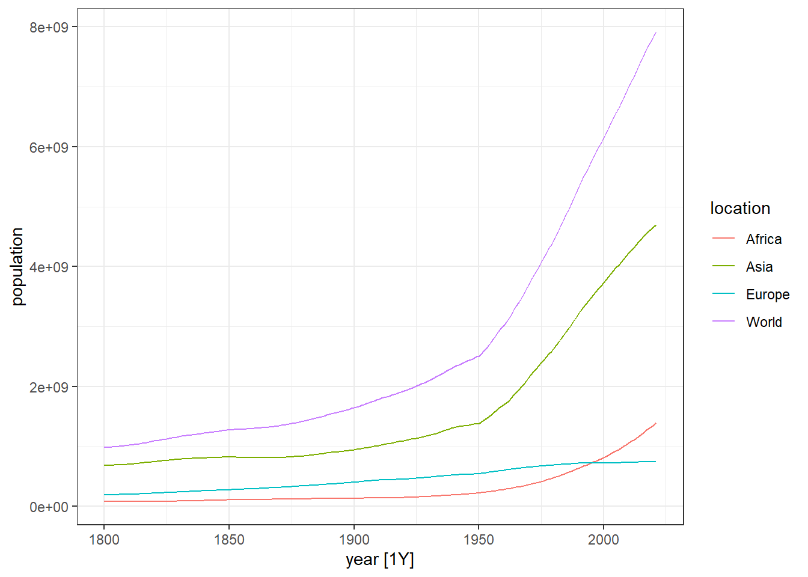
Figure 5.1: Dibujo de la evolución de la población en el mundo, Africa, Asia y Europa usando autoplot
A continuación dibujamos las mismas series separando cada una en una gráfica:
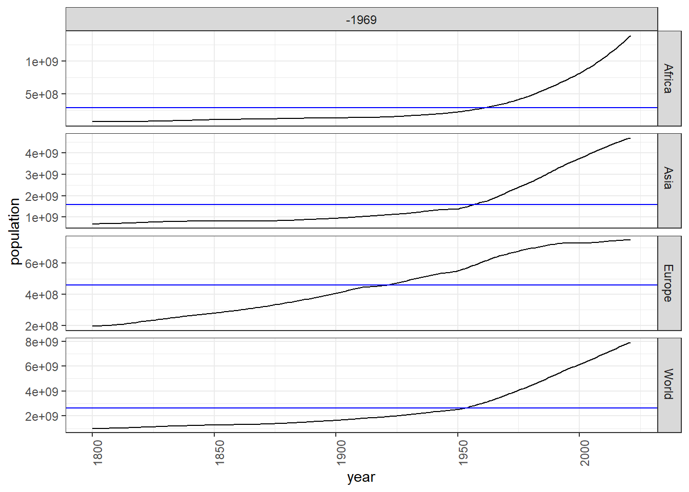
Figure 5.2: Dibujo por separado de la evolución de la población en el mundo, Africa, Asia y Europa usando gg_subseries
Ahora hacemos los mismo pero poniendo las gráficas en forma de cuadrícula. Como podemos observar, es posible utilizar la función ggplot para dibujar tsibbles:
owid_population |>
ggplot(aes(x=year,y=population)) + # población en el tiempo
geom_line() + # línea
facet_wrap(~location,scales = "free_y") # un panel por región, escala libre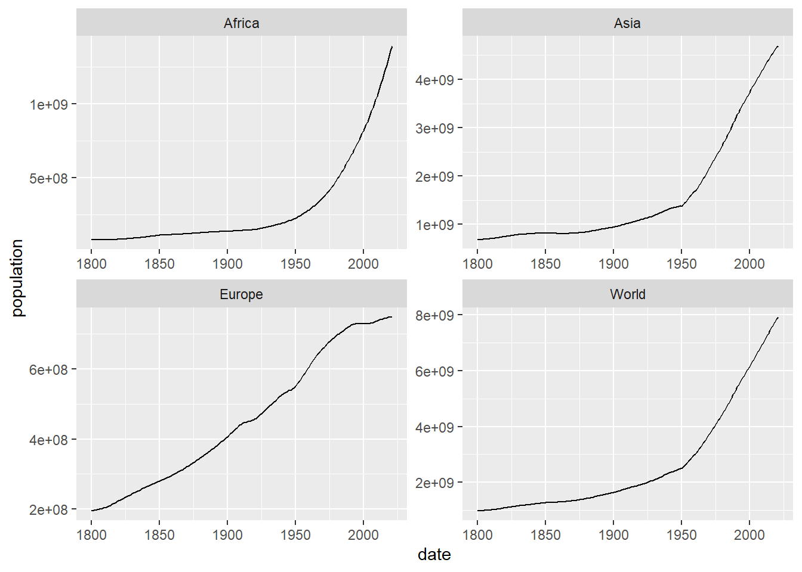
Figure 5.3: Dibujo por separado, en una cuadrícula, de la evolución de la población en el mundo, Africa, Asia y Europa usando facet_wrap
Podemos también comparar las series temporales entre sí. En la siguiente tabla con gráficos, construida usando la función pivot_wider y ggpairs de la librería GGally se muestra, en la diagonal, la función de densidad de la distribución de valores, en la parte inferior los gráficos de puntos que ponen en correspondencia los valores de una serie con otra y en la parte superior el valor de la correlación entre cada par de series de datos, cuanto más cerca de 1 está ese valor, mejor se ajusta a la recta de regresión los valores combinados de cada par de series temporales. Podemos observar que la evolución de la población en Europa tiene un comportamiento diferente que en las otras regiones lo que produce un menor valor de la correlación al comparar Europa con la otras regiones.
owid_population |>
pivot_wider(values_from=population, names_from=location) |> # una región por columna
GGally::ggpairs(columns = 2:5) # matriz de comparación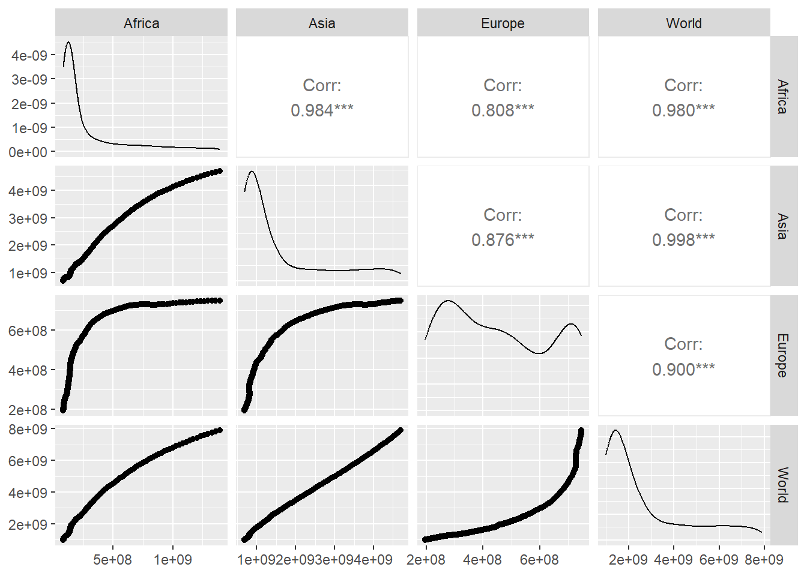
Figure 5.4: Ilustración de la relación entre la evolución de la población en el mundo, Africa, Asia y Europa usando la función ggpairs
5.3 Estacionalidad
Muchas series temporales presentan estacionalidad. Por ejemplo, en un lugar turístico como Canarias, los movimientos mensuales de pasajeros en los aeropuertos dependen del mes de año, de acuerdo con los flujos estacionales de turistas. En este caso, nuestra serie temporal tiene una estacionalidad de 12. Por ejemplo, observamos que, cada año, en agosto es cuando más pasajeros hay y que en enero/febrero es cuando suele haber menos. Vamos a estudiar las llegadas mensuales de pasajeros a Canarias utilizando una consulta realizada al ISTAC y almacenada en nuestra carpeta local data.
istac_aeropuertos <- read.px("https://ctim.es/AEDV/data/istac_aeropuertos.px") |> # datos del ISTAC
as_tibble()
glimpse(istac_aeropuertos)## Rows: 355
## Columns: 5
## $ Periodos <fct> 2020 Abril (p), 2020 Marzo (p), 2020 Febrero (p…
## $ Aeropuertos.de.origen <fct> TOTAL AEROPUERTOS DE ORIGEN, TOTAL AEROPUERTOS …
## $ Aeropuertos.de.destino <fct> CANARIAS, CANARIAS, CANARIAS, CANARIAS, CANARIA…
## $ Clases.de.tráfico <fct> Regular, Regular, Regular, Regular, Regular, Re…
## $ value <dbl> 3958, 137025, 289818, 302700, 4462920, 372861, …Observamos que además de datos mensuales, en la tabla aparece el TOTAL de datos anuales. Vamos a quitar esos registros, así como los registros que no tengan un valor disponible de la llegada de pasajeros y los valores del año 2020 cuyos datos se encuentran muy afectados por la epidemia de la COVID-19
istac_aeropuertos <- istac_aeropuertos |>
filter(word(Periodos,2)!="TOTAL" & is.na(value)==FALSE & word(Periodos,1)!="2020") # sin totales, NA ni 2020
glimpse(istac_aeropuertos)## Rows: 252
## Columns: 5
## $ Periodos <fct> 2019 Diciembre (p), 2019 Noviembre (p), 2019 Oc…
## $ Aeropuertos.de.origen <fct> TOTAL AEROPUERTOS DE ORIGEN, TOTAL AEROPUERTOS …
## $ Aeropuertos.de.destino <fct> CANARIAS, CANARIAS, CANARIAS, CANARIAS, CANARIA…
## $ Clases.de.tráfico <fct> Regular, Regular, Regular, Regular, Regular, Re…
## $ value <dbl> 372861, 331156, 396171, 405457, 468443, 452884,…La función word nos permite extraer la palabra, que ocupa una posición determinada, de un string. A continuación creamos un tsibble con los datos. Para construir la variable temporal tenemos que manipular el formato de fechas que usa en esta tabla el ISTAC para pasarlo a un formato de fecha estándar y después pasarlo a un formato de fecha mensual usando yearmonth
istac_aeropuertos <- tsibble(
date = paste( # año + mes + día 1
word(istac_aeropuertos$Periodos,1),
word(istac_aeropuertos$Periodos,2),"1"
) |>
as.Date(format="%Y %B %d") |> yearmonth(), # a fecha mensual
pasajeros = istac_aeropuertos$value,
index = date
)
istac_aeropuertos## # A tsibble: 252 x 2 [1M]
## date pasajeros
## <mth> <dbl>
## 1 1999 ene. 117785
## 2 1999 feb. 120128
## 3 1999 mar. 130011
## 4 1999 abr. 140767
## 5 1999 may. 137081
## 6 1999 jun. 147560
## 7 1999 jul. 193930
## 8 1999 ago. 230282
## 9 1999 sep. 194375
## 10 1999 oct. 173292
## # ℹ 242 more rowsA continuación dibujamos la serie temporal donde se aprecia una clara estacionalidad.
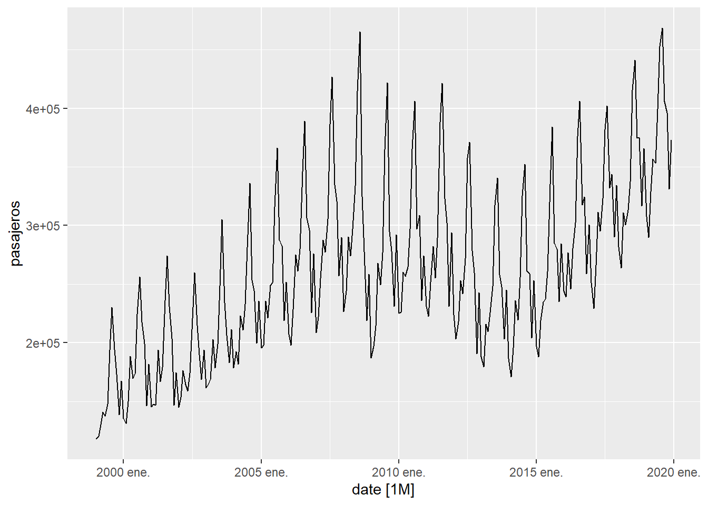
Figure 5.5: Evolución de la llegada de pasajeros a Canarias
Otro gráfico interesante es dibujar la serie temporal separándola en periodos de 12 meses. De esta manera se aprecia claramente que el mes con más movimiento de viajeros es agosto.
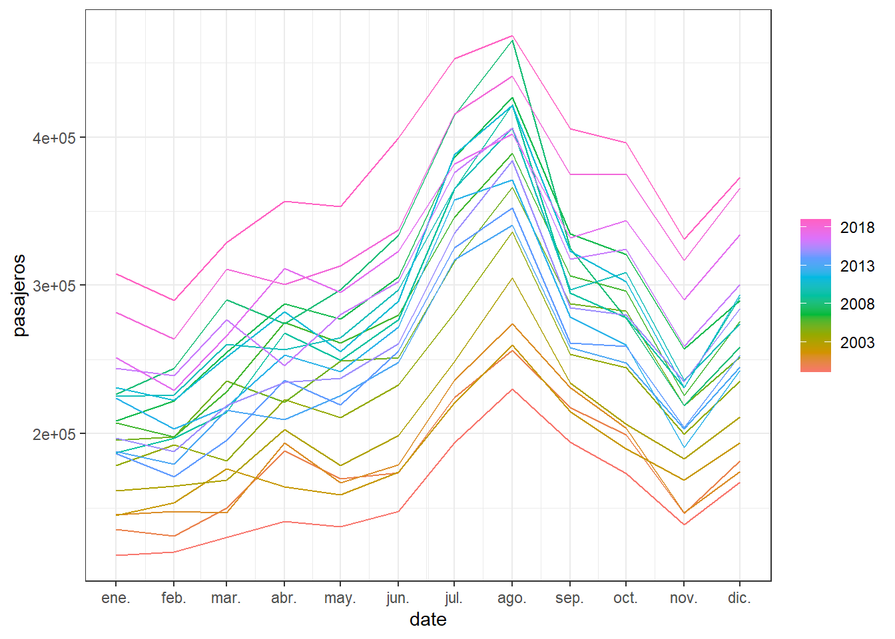
Figure 5.6: Para la serie de llegada de pasajeros a Canarias, se representa cada serie anual como una curva independiente
En la siguiente gráfica se separa por meses y vemos para cada mes cómo va evolucionando por años. La línea azul horizontal representa el valor de la media para cada mes.
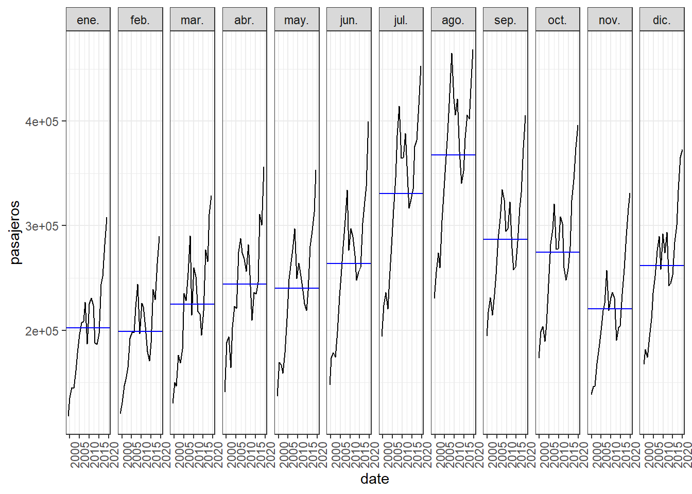
Figure 5.7: Para la serie de llegada de pasajeros a Canarias se representa la evolución por meses
En la siguiente gráfica se representa un diagrama de dispersión con la variable observada, que llamaremos \(y_t\), con respecto al valor de la misma variable \(l\) meses antes \(y_{t-l}\). Es decir para \(l=1\) (lag 1) se dibujan los puntos \((y_{t},y_{t-1})\). Es decir, estaríamos comparando el dato de febrero con el de enero, el de marzo con febrero, etc.. En este caso, como tenemos una estacionalidad de 12 meses, podemos observar que la nube de puntos \((y_{t},y_{t-12})\) (lag 12) es la que más se concentra alrededor de la recta de regresión que aparece dibujada. Es decir cuando comparamos el dato de cada mes, con el dato del mismo mes del año anterior. Una forma de “adivinar” la estacionalidad de una serie temporal sería mirar estas gráficas y ver cuándo los puntos se concentran alrededor de la recta de regresión.
istac_aeropuertos |>
gg_lag(pasajeros, geom = "point",lags = 1:12) # comparamos con 1 a 12 meses de retraso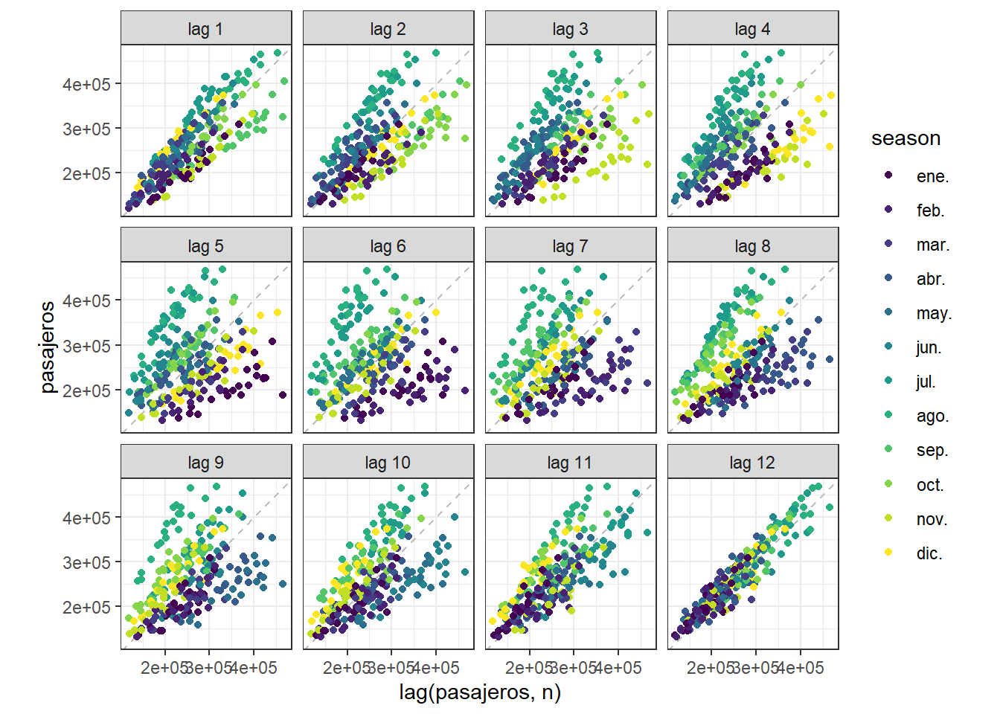
Figure 5.8: Para la serie de llegada de pasajeros a Canarias \(y_t\), se representan los puntos \((y_{t},y_{t-l})\)
5.4 Correlación
Para poder cuantificar la relación entre dos variables numéricas, y en particular, para poder entender las herramientas de análisis de series temporales que veremos a continuación, necesitamos introducir el concepto de correlación.
Definición
Dadas dos variables numéricas \(x_k\) e \(y_k\) con \(k=1,...,m\) observaciones, la correlación entre ellas viene dada por la fórmula:
\[ r=\frac{\sum_{k=1}^m(x_{k}-\bar x)(y_{k}-\bar y)} {\sqrt{\sum_{k=1}^m(x_{k}-\bar x)^2\sum_{k=1}^m(y_{k}-\bar y)^2}} \]
donde \(\bar x\) y \(\bar y\) representan la media de las respectivas variables. El valor de la correlación \(r\) se mueve en el rango entre -1 y 1 y se puede interpretar de la siguiente manera:
- Si \(r=1\), la variable \(y_k\) se puede obtener de forma exacta y lineal a partir de \(x_k\). Si una variable aumenta, la otra también, y los puntos en un diagrama de dispersión caen exactamente sobre la recta de regresión.
- Si \(r=0\), no existe relación lineal entre ambas variables y la gráfica de dispersión da una nube de puntos dispersa.
- Si \(r=-1\), el caso es idéntico a \(r=1\) pero cuando una variable aumenta, la otra disminuye.
Una propiedad importante de la correlación es que es independiente de la unidad de medida de las variables (siempre que la transformación entre medidas sea lineal), es decir, por ejemplo, si las variables miden temperaturas, da igual que se midan en grados Celsius o Fahrenheit, la correlación será la misma. Para calcular la correlación en R usamos la función cor:
owid_country <- read.xlsx("https://ctim.es/AEDV/data/owid_country.xlsx",sheet=1) |> # países OWID
as_tibble()
cor(owid_country$gdp_per_capit, owid_country$life_expectancy, use = "complete.obs") # correlación de Pearson## [1] 0.6820352La correlación que acabamos de definir (llamada de Pearson) mide la relación lineal entre las variables. Cuando la relación es monótona pero no lineal (una variable crece cuando crece la otra, pero no en proporción constante), es más adecuada la correlación de Spearman, que aplica la misma fórmula sobre los rangos de los valores en lugar de sobre los valores originales.
El rango de un valor es la posición que ocupa al ordenar todos los datos de menor a mayor: al valor más pequeño le corresponde el rango 1, al siguiente el rango 2, y así sucesivamente. Por ejemplo, la lista de valores \((3.1,\ 9.4,\ 0.5,\ 7.2)\) se transforma en la lista de rangos \((2,\ 4,\ 1,\ 3)\), porque \(0.5\) es el menor (rango 1), \(3.1\) el segundo (rango 2), \(7.2\) el tercero (rango 3) y \(9.4\) el mayor (rango 4). Al sustituir cada valor por su rango, solo se conserva el orden de los datos, no su magnitud concreta. Gracias a ello, Spearman detecta cualquier relación monótona —creciente o decreciente— aunque no sea lineal, y resulta más robusta frente a valores atípicos: un valor extremadamente grande se convierte simplemente en el rango más alto, sin distorsionar el resultado por lo desproporcionado de su magnitud.
Se calcula con la misma función cor indicando method = "spearman":
cor(owid_country$gdp_per_capit, owid_country$life_expectancy, # sobre los rangos
use = "complete.obs", method = "spearman")## [1] 0.8489972Obsérvese que Spearman (0.85) es notablemente mayor que Pearson (0.68): la relación entre PIB per cápita y esperanza de vida es claramente monótona (a más PIB, más esperanza de vida) pero no lineal (el efecto de cada dólar adicional se atenúa en los países ricos). Esta comparación entre ambos coeficientes es, de hecho, una pista útil: si Spearman es bastante mayor que Pearson, la relación probablemente es no lineal y puede convenir transformar alguna de las variables, como se verá en el capítulo de análisis de atributos.
Correlación no implica causalidad. Una correlación alta entre dos variables no significa que una cause la otra. Por ejemplo, el consumo de pan y el número de delitos por comunidad autónoma tienen correlación alta, pero simplemente porque ambas variables crecen con la población. La población sería una variable latente que explica la relación observada. Este tema se profundizará en el capítulo de análisis de atributos.
De la correlación a la autocorrelación
En el contexto de las series temporales, un caso especialmente importante es medir la correlación de una serie temporal consigo misma desplazada en el tiempo. Si nuestra serie es \(y_t\), podemos calcular la correlación entre los pares \((y_t, y_{t-l})\) para un desfase (lag) \(l\). Esto es exactamente lo que muestran las gráficas de gg_lag que hemos visto arriba: cuando los puntos se concentran alrededor de la recta de regresión, la correlación entre \(y_t\) e \(y_{t-l}\) es alta. La función de autocorrelación (ACF) calcula y representa esta correlación para todos los lags simultáneamente.
5.5 Función de autocorrelación (ACF)
La función de autocorrelación (ACF) cuantifica la correlación entre \(y_t\) e \(y_{t-l}\) para diferentes valores del desfase (lag) \(l\). Es una herramienta fundamental para detectar la estacionalidad y la estructura de dependencia temporal de una serie. Se calcula con la función ACF y se dibuja con autoplot:
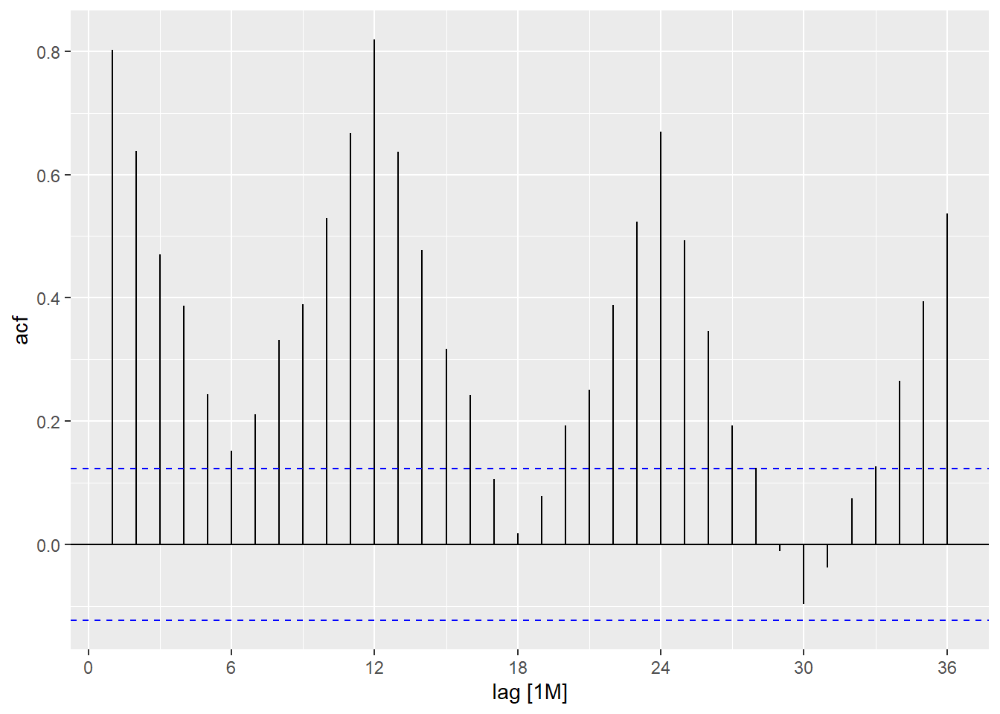
Figure 5.9: Función de autocorrelación (ACF) de la serie de llegadas de pasajeros a Canarias
Los picos en los lags 12, 24 y 36 confirman la estacionalidad anual (periodo \(m=12\)). La línea discontinua azul representa el umbral de significancia: valores por encima de esa línea indican una correlación estadísticamente significativa. Si la ACF decrece rápidamente hacia cero sin oscilaciones indica que la serie no posee estacionalidad y que existe poca relación entre la serie original y sus retardos usando la función lag.
5.6 Descomposición de una serie temporal
Componentes de una serie temporal
Cualquier serie temporal \(y_t\) puede interpretarse como la combinación de los siguientes componentes:
Tendencia (\(L_t\)): el comportamiento a largo plazo de la serie, que refleja si los valores tienden a crecer, decrecer o mantenerse estables con el tiempo.
Estacionalidad (\(S_t\)): patrones que se repiten con una periodicidad fija y conocida. Por ejemplo, las llegadas mensuales de viajeros a los aeropuertos canarios presentan una estacionalidad de periodo 12, es decir, fluctúan a lo largo de los meses del año siguiendo el flujo de turistas. Una serie puede no presentar estacionalidad, o presentar una combinación de estacionalidades: las ventas diarias en comercios tienen estacionalidad semanal (dependen del día de la semana), mensual (hay más ventas al final o principio de mes, cuando los trabajadores cobran) y anual (navidad, verano, etc.). Las series con datos anuales normalmente no tienen estacionalidad, es decir, sus ciclos de repetición, si los hubiera, no siguen un patrón periódico definido en años: los ciclos económicos, por ejemplo, tienden a repetirse pero no cada un número fijo y bien definido de años.
Ruido (\(\mathcal{E}_t\)): la variación que queda después de extraer tendencia y estacionalidad. Idealmente, si la descomposición captura bien las dos componentes anteriores, el ruido debería comportarse como una secuencia de valores aleatorios sin patrón (ruido blanco, que definiremos más adelante).
La descomposición más habitual es la aditiva:
\[ y_t = L_t + S_t + \mathcal{E}_t \]
que es la que usaremos principalmente en este capítulo. Cuando la amplitud de la estacionalidad crece proporcionalmente con el nivel de la serie, se usa en cambio una descomposición multiplicativa, \(y_t = L_t \cdot S_t \cdot \mathcal{E}_t\).
El objetivo de los métodos que estudiaremos en este capítulo (STL, ETS, ARIMA) es, en esencia, modelar estos componentes para entender la serie y poder predecir su evolución futura.
El método STL: cómo se calcula la descomposición
La expresión anterior es una definición: dice en qué se descompone la serie, pero no cómo obtener cada componente a partir de los datos. Hace falta, por tanto, un procedimiento concreto, y el que usaremos en este capítulo es el método STL (Seasonal and Trend decomposition using Loess), que estima la tendencia y la estacionalidad mediante loess, un suavizador que ajusta la curva localmente, tramo a tramo, en lugar de imponer una forma global a toda la serie. De ahí la letra \(L\) con la que denotamos la tendencia.
STL tiene además dos ventajas prácticas que aprovecharemos más adelante: (1) permite gestionar una doble estacionalidad y (2) permite controlar, mediante dos parámetros, con cuánta libertad pueden evolucionar las componentes de tendencia y estacionalidad. Su fundamento matemático, que no se desarrolla en este curso, puede consultarse en [CCMT90].
Vamos a aplicarlo a la serie de llegadas de viajeros a Canarias:
istac_aeropuertos |>
model( # ajustamos el modelo STL
STL(pasajeros ~ season(period = 12),
robust = TRUE)
) |>
components() |> # extraemos tendencia, estacionalidad y error
autoplot()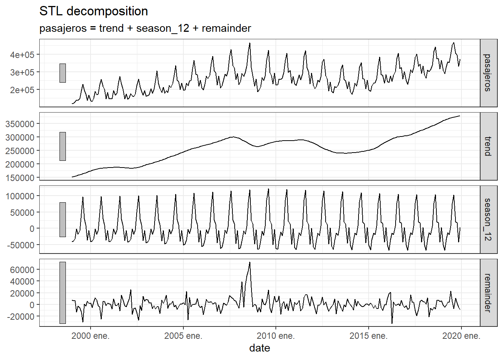
Figure 5.10: Descomposición de una serie temporal usando el método STL
Los cuatro paneles son, de arriba abajo, la serie original \(y_t\) y las tres componentes en que la descompone el método: la tendencia \(L_t\) —una versión suavizada de la serie—, la estacionalidad \(S_t\) y el error \(\mathcal{E}_t\).
Conviene fijarse en las barras grises que aparecen a la izquierda de cada panel. Cada panel se dibuja a una escala vertical distinta (la que necesita para llenar su espacio), por lo que a simple vista no se pueden comparar las amplitudes de los componentes: la barra gris de mayor tamaño representa la componente de menor magnitud, el tamaño de las otras barras grises representan la magnitud (en proporción inversa) de cada componente respecto a la de menor magnitud, es decir que cuanto más pequeña es la barra gris mayor es la magnitud de la componente. En este ejemplo, visualmente observamos que el peso de la tendencia es ligeramente superior (barra gris más pequeña) a la estacionalidad y que lo que menos pesa es el error.
Los parámetros de la descomposición
La llamada anterior usa los valores por defecto, pero STL tiene tres parámetros que conviene conocer, porque cambian bastante el resultado:
season(window = ...)controla cuánto puede evolucionar el patrón estacional a lo largo de la serie. Un valor pequeño deja que cada año tenga su propia forma —la estacionalidad se adapta deprisa, a costa de absorber ruido—; uno grande la mantiene casi igual de un año a otro. El caso extremo,window = "periodic", fuerza una estacionalidad exactamente constante: el valor de cada mes es el mismo en toda la serie. Nótese que no basta con poner un número muy grande para conseguir eso: el suavizador seguiría permitiendo una evolución lenta, solo que muy suave.trend(window = ...)hace lo propio con la tendencia: cuanto mayor, más lisa y menos sensible a las oscilaciones locales.robust = TRUE, que sí usamos arriba, reduce la influencia de los valores atípicos al estimar los componentes, de modo que un mes anómalo no deforme la tendencia ni el patrón estacional; el atípico queda entonces recogido en el error, que es donde queremos verlo.
La elección no es inocente: cuanto más flexible sea la estacionalidad, menos error queda, pero también más riesgo hay de que el componente estacional se esté comiendo variaciones que en realidad son ruido o cambios de tendencia.
Merece la pena ver el efecto de esos dos parámetros, porque la descomposición que acabamos de obtener no es una respuesta única: es el resultado de una configuración concreta. En el panel superior de la figura siguiente se representa, para tres valores de season(window = ...), la altura del pico estacional de cada año; en el inferior, la tendencia estimada con dos ventanas muy distintas, superpuesta a la serie original en gris:
# Altura del pico estacional de cada año bajo tres configuraciones
pico_anual <- function(ventana, etiqueta) {
istac_aeropuertos |>
model(STL(pasajeros ~ season(window = ventana), robust = TRUE)) |>
components() |>
as_tibble() |>
mutate(anyo = year(date)) |>
group_by(anyo) |>
summarise(pico = max(season_year), .groups = "drop") |>
mutate(configuracion = etiqueta)
}
picos <- bind_rows(
pico_anual(7, "window = 7 (flexible)"),
pico_anual(21, "window = 21 (rígida)"),
pico_anual("periodic", "\"periodic\" (fija)")
)
p_estacionalidad <- picos |>
ggplot(aes(x = anyo, y = pico/1000, color = configuracion)) +
geom_line(linewidth = 0.8) +
geom_point(size = 1) +
labs(x = "", y = "pico estacional (miles)", color = "") +
theme_bw()
# Tendencia con dos ventanas distintas, sobre la serie original
tendencias <- bind_rows(
istac_aeropuertos |> model(STL(pasajeros ~ trend(window = 13), robust = TRUE)) |>
components() |> as_tibble() |>
transmute(date, valor = trend, configuracion = "trend = 13 (sigue de cerca)"),
istac_aeropuertos |> model(STL(pasajeros ~ trend(window = 101), robust = TRUE)) |>
components() |> as_tibble() |>
transmute(date, valor = trend, configuracion = "trend = 101 (muy suave)")
)
p_tendencia <- ggplot() +
geom_line(data = as_tibble(istac_aeropuertos),
aes(x = date, y = pasajeros/1000), color = "grey80", linewidth = 0.8) +
geom_line(data = tendencias,
aes(x = date, y = valor/1000, color = configuracion), linewidth = 0.8) +
labs(x = "", y = "tendencia (miles)", color = "") +
theme_bw()
p_estacionalidad / p_tendencia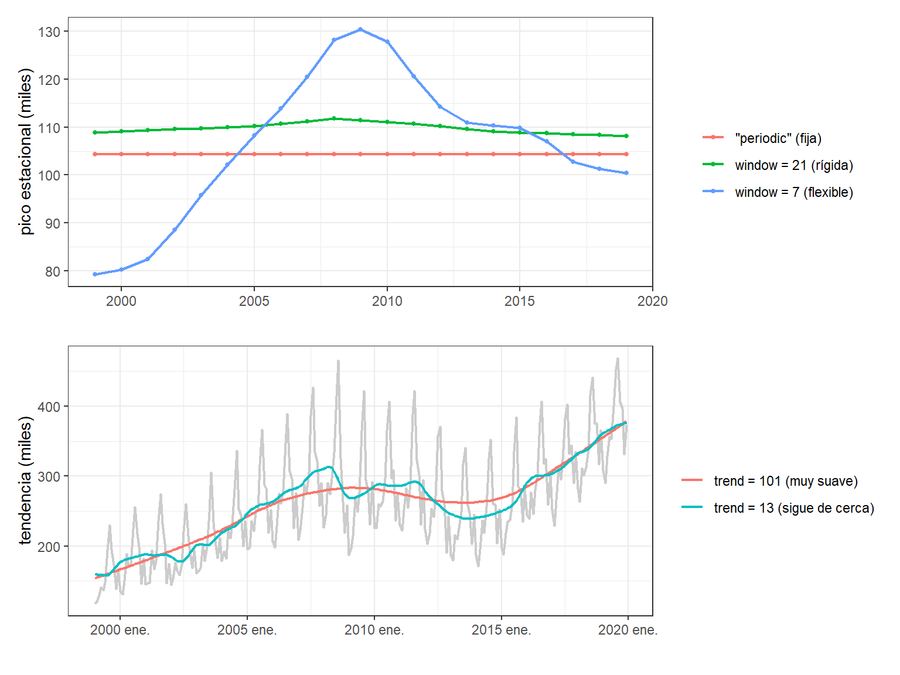
Figure 5.11: Efecto de los parámetros de la descomposición: capacidad de evolución de la estacionalidad (arriba) y suavidad de la tendencia (abajo)
El panel superior muestra hasta qué punto la amplitud de la estacionalidad es una decisión y no un dato. Las tres versiones comparten la forma del ciclo —el gran pico del verano, el valle del invierno—, pero no su evolución a lo largo de los años. Con la ventana flexible, el pico estacional de verano crece desde unos 79.000 pasajeros en 1999 hasta 130.000 en 2009 y vuelve a bajar hacia 100.000 en 2019, siguiendo el auge y la posterior moderación del turismo; con window = 21 apenas se le permite una deriva mínima, y con "periodic" es exactamente el mismo todos los años.
Conviene entender que estos parámetros no crean ni destruyen información: lo que se le quita a una componente reaparece en otra. Se ve bien midiendo la desviación típica del error de cada descomposición:
sd_error <- function(modelo_stl, etiqueta) { # desviación típica del remainder
tibble(configuracion = etiqueta,
sd_remainder = sd(components(istac_aeropuertos |> model(modelo_stl))$remainder,
na.rm = TRUE))
}
bind_rows(
sd_error(STL(pasajeros ~ season(window = 7), robust = TRUE), "season(window = 7) flexible"),
sd_error(STL(pasajeros ~ season(window = 21), robust = TRUE), "season(window = 21) rígida"),
sd_error(STL(pasajeros ~ season(window = "periodic"), robust = TRUE), "season = \"periodic\" fija"),
sd_error(STL(pasajeros ~ trend(window = 13), robust = TRUE), "trend(window = 13) flexible"),
sd_error(STL(pasajeros ~ trend(window = 101), robust = TRUE), "trend(window = 101) suave")
) |>
mutate(sd_remainder = round(sd_remainder))## # A tibble: 5 × 2
## configuracion sd_remainder
## <chr> <dbl>
## 1 "season(window = 7) flexible" 10561
## 2 "season(window = 21) rígida" 14329
## 3 "season = \"periodic\" fija" 14724
## 4 "trend(window = 13) flexible" 10828
## 5 "trend(window = 101) suave" 16305Una configuración flexible deja un error pequeño, porque absorbe buena parte de las oscilaciones; una muy rígida lo deja bastante mayor —la tendencia con window = 101 deja un error un 50 % más grande que con window = 13—, ya que esas mismas oscilaciones tienen que ir a parar a algún sitio.
Un error pequeño no significa una descomposición mejor
Sería tentador elegir los parámetros que minimizan el error, pero es un criterio equivocado. Si la tendencia sigue tan de cerca a la serie que reproduce sus fluctuaciones irregulares, deja de ser una tendencia: ya no sirve para interpretar el movimiento de fondo ni para extrapolarlo, que es justamente para lo que la queremos. Lo mismo ocurre con una estacionalidad tan flexible que cada año tenga su propia forma: habrá absorbido ruido que no es estacional.
El criterio razonable es el contrario: elegir la configuración más rígida que siga dejando un error sin estructura, que es lo que comprobaremos en el apartado siguiente.
Diagnóstico de residuos de la descomposición STL
Un buen modelo de descomposición debe extraer toda la estructura sistemática de la serie —tendencia y estacionalidad— de modo que el error (remainder) \(\mathcal{E}_t\) no contenga ningún patrón adicional, es decir, que se comporte como ruido blanco:
Ruido blanco
Un ruido blanco (white noise) es una serie con media cero, con una amplitud (varianza local) que no cambia a lo largo del tiempo (homocedasticidad) y en la que los valores son independientes entre sí y sin una estructura/tendencia reconocible, es decir, los valores pasados no permiten predecir el futuro. En la ACF esto último se identifica como que todas las barras quedan dentro de las bandas azules discontinuas (umbral de significancia al 95%). Visualmente, un ruido blanco es una serie que oscila alrededor de cero con una amplitud relativamente constante pero sin un patrón o estructura reconocible.
El caso ideal es que el remainder de una descomposición sea un ruido blanco, en cuyo caso el modelo ha capturado toda la estructura sistemática de la serie.
Resumen de los tests de diagnóstico
Comprobar esas propiedades supone lanzar cuatro contrastes distintos. En los cuatro, la hipótesis nula (\(H_0\)) es que la propiedad se cumple, de modo que un p-valor alto es la buena noticia: significa que no hay evidencia para rechazarla.
| Propiedad que se analiza | Test | Condición para superar el test |
|---|---|---|
| Media cero | t de Student | p-valor > 0.05 |
| Ausencia de autocorrelación | Ljung-Box | p-valor > 0.05 |
| Normalidad | Shapiro-Wilk | p-valor > 0.05 |
| Homocedasticidad (varianza constante) | Breusch-Pagan | p-valor > 0.05 |
Llamarlos uno a uno obliga a leer cuatro salidas con formatos distintos, lo que dificulta ver el diagnóstico de conjunto. Por eso el curso proporciona en utilidades.R dos funciones que usaremos en todos los diagnósticos de este capítulo:
aedv_tests_residuos(residuos, tiempo)calcula los cuatro contrastes de una vez y devuelve una tabla con el p-valor de cada uno y si lo supera.aedv_tabla_tests(tests, titulo)presenta ese resultado coloreando el p-valor en verde cuando el test se supera y en rojo cuando no, de modo que el diagnóstico completo se lee de un vistazo.
STL es un procedimiento basado en un suavizador loess: nada en su construcción fuerza a que el remainder tenga media cero, varianza constante o esté libre de autocorrelación (a diferencia de, por ejemplo, una regresión lineal con intercept, donde los residuos suman cero por construcción como consecuencia algebraica de las ecuaciones normales). Por eso estas propiedades deben comprobarse explícitamente. Para ello extraemos el remainder con components() y lo examinamos primero con cuatro gráficos —su serie, su ACF, su histograma y su QQ-plot— y después con los cuatro tests formales. Esta misma metodología de diagnóstico la aplicaremos más adelante a los residuos de los modelos predictivos ETS y ARIMA:
stl_remainder <- istac_aeropuertos |>
model(STL(pasajeros ~ season(period = 12), robust = TRUE)) |>
components() # incluye la columna remainder
stl_remainder |>
ggplot(aes(x = date, y = remainder)) +
geom_line() + # el remainder en el tiempo
labs(y = "Remainder", x = "", title = "Remainder de la descomposición STL")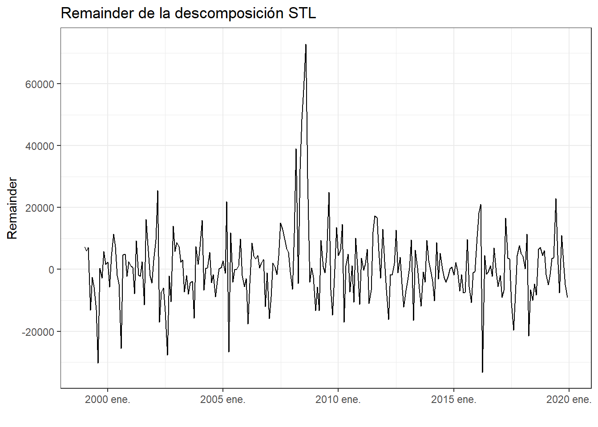
Figure 5.12: Remainder de la descomposición STL
stl_remainder |>
ACF(remainder) |> # autocorrelación del remainder
autoplot() + labs(title = "ACF del remainder")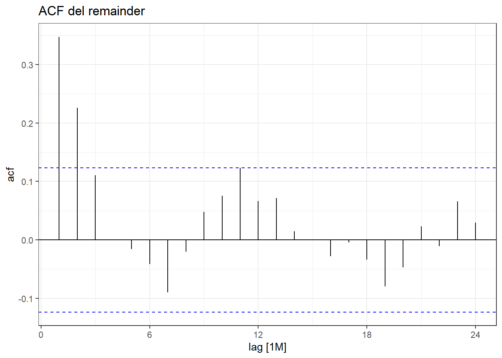
Figure 5.13: ACF del remainder de la descomposición STL
stl_remainder |>
ggplot(aes(x = remainder)) +
geom_histogram(bins = 15) + # distribución del remainder
labs(x = "Remainder", title = "Histograma del remainder")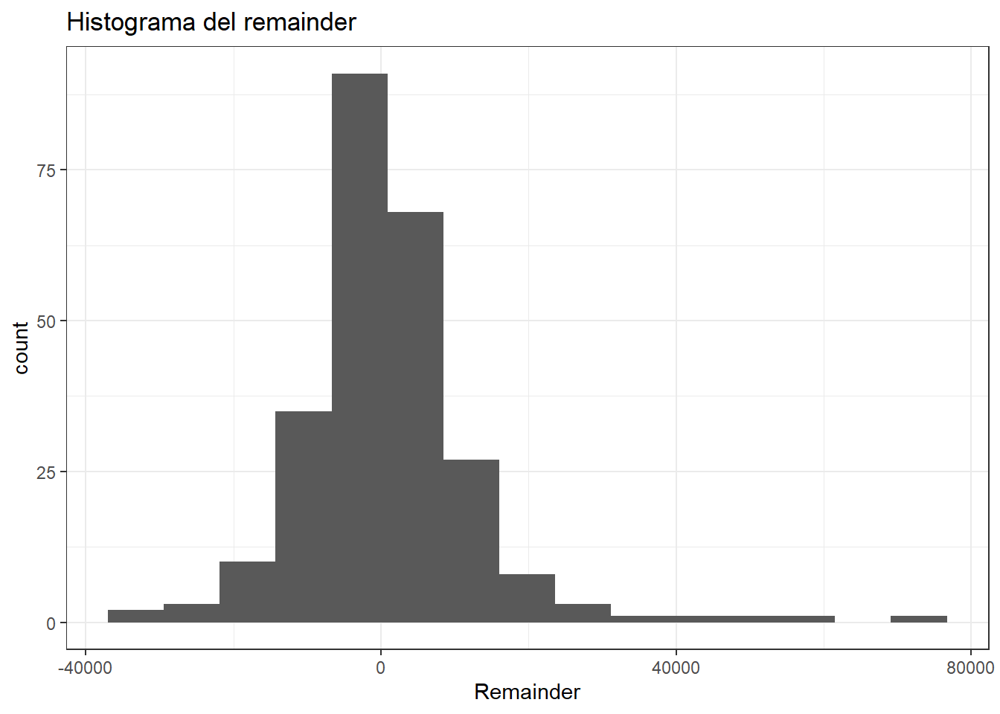
Figure 5.14: Histograma del remainder de la descomposición STL
Los gráficos sugieren el diagnóstico, pero conviene contrastarlo formalmente. Aplicamos de una vez los cuatro tests con las funciones del curso, pasando el remainder y su variable temporal (esta última la necesita el test de Breusch-Pagan para comprobar si la varianza depende del tiempo):
aedv_tests_residuos(stl_remainder$remainder,stl_remainder$date) |> # los 4 tests de una vez
aedv_tabla_tests("Diagnóstico del remainder de la descomposición STL")| Diagnóstico del remainder de la descomposición STL | ||||
| Propiedad que se analiza | Test | Condición para superarlo | p-valor | ¿Lo supera? |
|---|---|---|---|---|
| Media cero | t de Student | p-valor > 0.05 | 0.2576 | Sí |
| Ausencia de autocorrelación | Ljung-Box | p-valor > 0.05 | 1.2e-07 | No |
| Normalidad | Shapiro-Wilk | p-valor > 0.05 | 4.8e-13 | No |
| Homocedasticidad (varianza constante) | Breusch-Pagan | p-valor > 0.05 | 0.5878 | Sí |
La tabla deja ver el diagnóstico de conjunto: el remainder supera los contrastes de media cero y homocedasticidad (en verde), pero falla los de autocorrelación y normalidad (en rojo).
Que Ljung-Box salga en rojo matiza la lectura puramente visual de la ACF: aunque la mayoría de las barras se mantienen dentro de las bandas, unas pocas correlaciones pequeñas pero sistemáticas bastan para que el test conjunto las detecte, especialmente con una muestra de más de 250 observaciones mensuales, donde gana mucha potencia estadística. La conclusión práctica es que STL no ha absorbido por completo la estructura de la serie —algo esperable en un método de suavizado que no contiene elementos de predicción en su diseño— y que un modelo predictivo como los que estudiaremos a continuación (ETS, ARIMA) podría capturar la estructura restante.
El fallo de Shapiro-Wilk es coherente con lo que ya sugería el histograma: colas más pesadas de lo esperado, por la presencia de eventos puntuales (picos o caídas atípicas de pasajeros) que STL no puede reasignar a la tendencia o la estacionalidad.
El gráfico cuantil-cuantil (QQ-plot) permite ver dónde se aparta el remainder de la normalidad: hace un diagrama de dispersión donde compara sus cuantiles con los que tendría una normal perfecta, de tal manera que si los puntos caen sobre la línea diagonal el ajuste es bueno y cuanto más se separan de ella peor es el ajuste a una normal:
stl_remainder |>
ggplot(aes(sample = remainder)) +
geom_qq() + # cuantiles observados frente a los teóricos
geom_qq_line(color = "steelblue") + # diagonal de referencia: normal perfecta
labs(x = "Cuantiles teóricos (normal)", y = "Cuantiles del remainder",
title = "QQ-plot del remainder")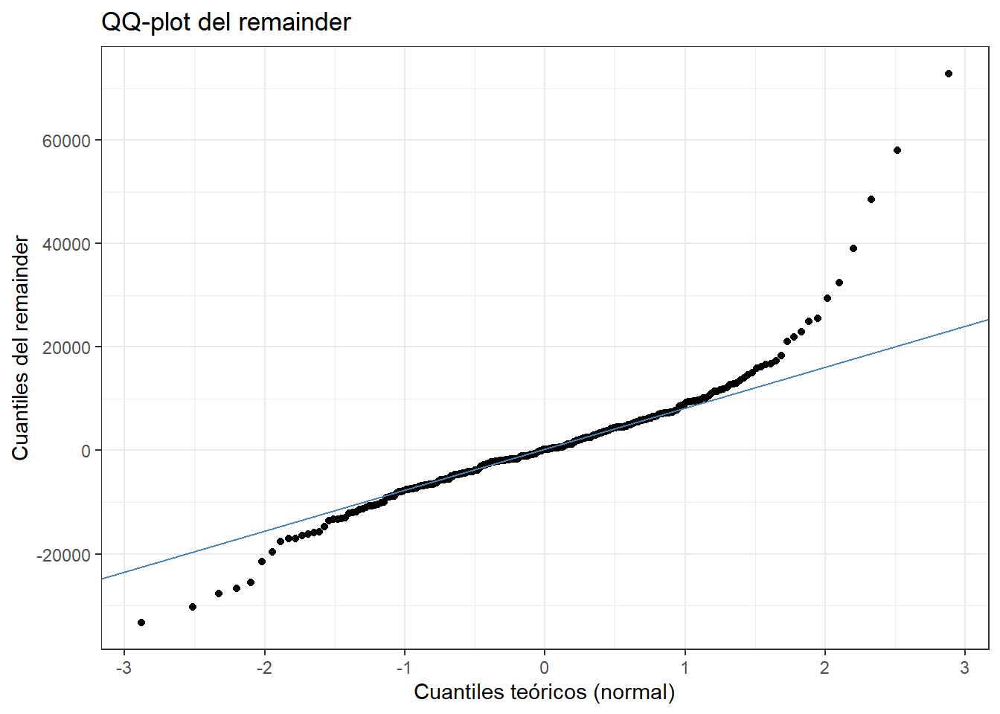
Figure 5.15: Gráfico cuantil-cuantil (QQ-plot) del remainder de la descomposición STL
Los puntos se separan de la diagonal en ambos extremos, confirmando en forma de gráfico lo que decía el test: las colas del remainder se separan de las de una normal, señal de esos eventos puntuales que la descomposición no logra absorber.
Cuidado con Shapiro-Wilk cuando hay muchos datos
El test de Shapiro-Wilk deja de ser útil con muestras grandes, por dos motivos:
- Límite técnico. La función
shapiro.testdeRsolo admite entre 3 y 5000 observaciones; con más, da un error y no se puede ejecutar. Esto ocurre enseguida con series de frecuencia fina: un solo año de datos horarios ya son unas 8760 observaciones. - Exceso de potencia. Aunque quepan, con muchos datos el test gana tanta potencia que rechaza la normalidad ante desviaciones minúsculas y sin relevancia práctica (el mismo fenómeno que acabamos de ver con Ljung-Box). Casi ninguna serie real “aprueba” el test, con lo que su resultado deja de ser informativo.
Alternativas cuando la muestra es grande:
- Fiarse del diagnóstico gráfico: el gráfico cuantil-cuantil (QQ-plot, con
ggplot2::geom_qq+geom_qq_line) junto al histograma. A diferencia del test, muestra cuánto y dónde se aparta la distribución de la normal (típicamente en las colas), que es lo que de verdad importa. - Aplicar Shapiro-Wilk a una submuestra aleatoria de tamaño \(\le 5000\) (
sample()) si aun así se quiere un contraste formal. - Usar tests diseñados para \(n\) grande, como Anderson-Darling (
nortest::ad.test) o Lilliefors (nortest::lillie.test), aunque comparten en parte el problema de exceso de potencia. - Recordar que, para los intervalos de predicción, con \(n\) grande el teorema central del límite hace la inferencia razonablemente robusta frente a desviaciones moderadas de la normalidad (como ya se comentó en el test t de la media).
Que un test falle no inhabilita el análisis
En estos diagnósticos hemos visto que el remainder rechaza la ausencia de autocorrelación (Ljung-Box) y la normalidad (Shapiro-Wilk). Conviene tener claro que eso no invalida el análisis. Las series reales casi nunca producen residuos que sean ruido blanco perfectamente normal —y menos con muestras grandes, donde, como acabamos de comentar, los tests rechazan ante desviaciones minúsculas—. Los tests son una guía diagnóstica, no un aprobado/suspenso que obligue a descartar el modelo: lo que indican es dónde falla y cuánta confianza merece cada resultado, no que haya que tirarlo todo. En concreto:
- Autocorrelación residual → el modelo deja algo de estructura sin capturar; la predicción puntual sigue siendo informativa, pero hay margen de mejora (más adelante ETS y ARIMA intentan precisamente aprovechar esa estructura).
- Falta de normalidad → no afecta a la predicción puntual \(\hat y_t\); solo hace aproximados los intervalos de confianza (pueden quedar algo estrechos, anchos o asimétricos). Con muchas observaciones, el teorema central del límite mitiga el problema.
- Heterocedasticidad → la cobertura real de los intervalos puede no ser uniforme a lo largo del tiempo.
La pregunta útil no es “¿pasa el test?” sino “¿son las desviaciones relevantes en la práctica?”, y para eso los gráficos (ACF, histograma, QQ-plot, residuos frente al tiempo) informan mucho más que un p-valor binario. Lo que sí invalida un análisis es otra cosa: una preparación incorrecta de los datos (frecuencia equivocada, huecos o atípicos sin tratar), un cambio estructural no contemplado (como la COVID) o usar el modelo fuera de su rango de validez.
Doble estacionalidad
En algunos casos puede existir una doble estacionalidad. Por ejemplo, si estudiamos los datos de ventas diarias en el comercio, por un lado tienen una estacionalidad semanal, puesto que las ventas dependen del día de la semana y por otro lado tiene una estacionalidad anual, porque el día concreto del año puede tener un fuerte efecto en las ventas, es decir, por ejemplo, durante los días de las fiestas navideñas se vende más que en los días de finales de enero. Por otro lado, al final de cada mes las empresas suelen acumular los datos de facturación atrasados lo que produce un pico artificial de ventas registradas el último día de mes.
Para presentar un ejemplo con doble estacionalidad vamos a utilizar los datos de venta diaria al por menor de grandes empresas en España publicados por el INE. Concretamente, el dato original utilizado es el porcentaje de las ventas acumuladas hasta ese día del mes, respecto al total vendido el mes anterior. Por ejemplo el dato del 15/03/2023 es 50.5, lo que representa que hasta ese día del mes se vendió el 50.5% de lo que se vendió en todo mes anterior. Para apreciar mejor la estacionalidad, en lugar de trabajar con el dato acumulado del mes vamos a trabajar con el dato diario, es decir el porcentaje de venta cada día, respecto al total de ventas del mes anterior. Para obtener ese dato basta hacer la diferencia, cada día, del valor acumulado ese día con el acumulado del día anterior.
# lectura de la tabla del INE y gestión de las fechas
ine_comercio_diario_acumulado <- read.xlsx("https://ctim.es/AEDV/data/ine_comercio_diario_acumulado.xlsx") |>
as_tibble() |>
mutate(date= as.Date(date,format = "%d/%m/%Y"))
# creación de un tsibble con los datos acumulados cada mes
ine_comercio_diario_acumulado <- tsibble(
date = ine_comercio_diario_acumulado$date,
value = ine_comercio_diario_acumulado$value,
index = date
)
# creación de un tsibble con la diferencia de los datos acumulados cada mes
ine_comercio_diario <- ine_comercio_diario_acumulado
for(i in 2:(length(ine_comercio_diario$date)) ){
if(format(ine_comercio_diario$date[i],"%m") == format(ine_comercio_diario$date[i-1],"%m")){
ine_comercio_diario$value[i]=ine_comercio_diario_acumulado$value[i]-ine_comercio_diario_acumulado$value[i-1]
}
}Para ilustrar la doble estacionalidad vamos a dibujar la serie temporal ine_comercio_diario en un periodo de 3 meses. Donde se puede apreciar la estacionalidad semanal (las mayores ventas corresponden a viernes y sábados y las menores a domingos) y la estacionalidad anual (cada año en los últimos días de diciembre se vende más, después las ventas bajan a partir de la segunda semana de enero y empiezan a subir en marzo). Además, a final de cada mes se produce un fuerte repunte de las ventas registradas debido a que, por el sistema de contabilidad que usan muchas empresas, el día último de cada mes se contabilizan más ventas.
ine_comercio_diario |>
filter(date>= as.Date("2022-12-15") & date<= as.Date("2023-03-15")) |> # solo 3 meses
autoplot(value)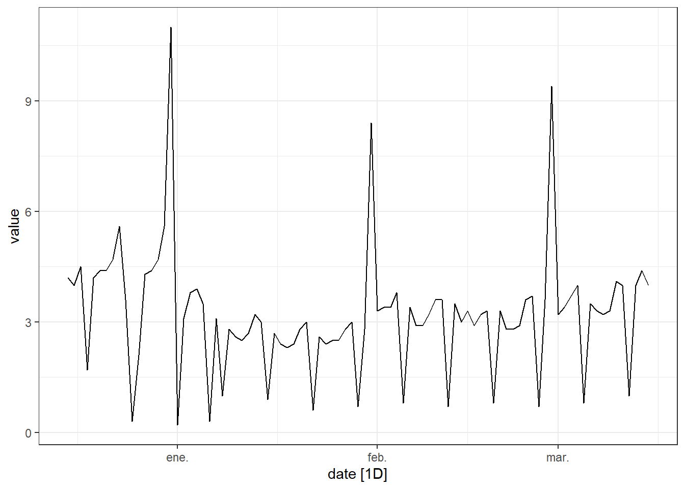
Figure 5.16: Datos de ventas de comercio en España en un periodo de 3 meses
A continuación vamos a aplicar el método STL para descomponer la serie temporal ine_comercio_diario. Observamos que aparece una estacionalidad semanal y otra anual. A la vista de la evolución de la curva de tendencia (trend) se aprecia un patrón que no es visible al observar los datos originales: las ventas suben desde 2019 hasta alcanzar un máximo hacia 2021-2022, y a partir de ahí bajan de forma gradual y sostenida hasta el final de la serie (mediados de 2026).
componentes_comercio <- ine_comercio_diario |> model(
STL(value ~ season(period = 7) + # estacionalidad semanal
season(period = 365.25), # y anual
robust = TRUE)
) |>
components() # guardamos las componentes para diagnosticar el remainder
componentes_comercio |>
autoplot()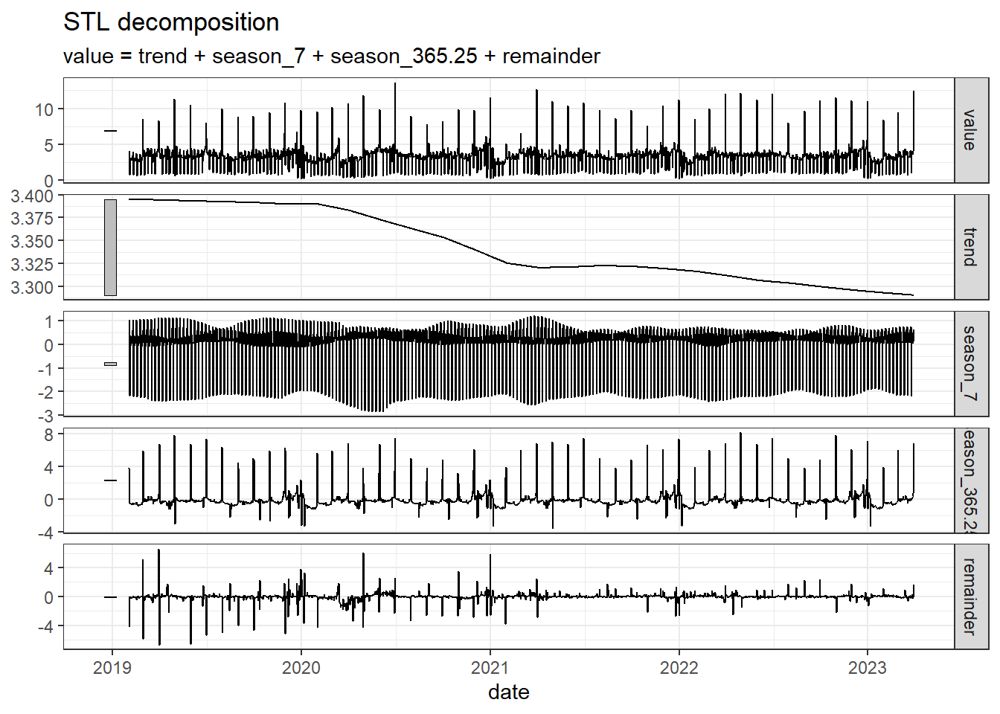
Figure 5.17: Cálculo de la descomposición STL con doble estacionalidad
Podemos aplicar a este remainder el mismo diagnóstico que hicimos con la descomposición de una sola estacionalidad, sin más que llamar otra vez a las dos funciones. Es un buen contraste, porque esta serie es diaria y mucho más larga que la de pasajeros:
aedv_tests_residuos(componentes_comercio$remainder,componentes_comercio$date) |> # los 4 tests de una vez
aedv_tabla_tests("Diagnóstico del remainder de la descomposición con doble estacionalidad")| Diagnóstico del remainder de la descomposición con doble estacionalidad | ||||
| Propiedad que se analiza | Test | Condición para superarlo | p-valor | ¿Lo supera? |
|---|---|---|---|---|
| Media cero | t de Student | p-valor > 0.05 | 8.7e-05 | No |
| Ausencia de autocorrelación | Ljung-Box | p-valor > 0.05 | 1.3e-14 | No |
| Normalidad | Shapiro-Wilk | p-valor > 0.05 | 9.3e-67 | No |
| Homocedasticidad (varianza constante) | Breusch-Pagan | p-valor > 0.05 | 0.3777 | Sí |
El diagnóstico es claramente peor que el de la serie de pasajeros, lo que tiene sentido: en una serie diaria quedan efectos —festivos, Semana Santa, promociones— que ninguna de las dos estacionalidades periódicas puede recoger, y que van a parar al remainder. Es justamente lo que motiva la sección posterior de regresión armónica dinámica, donde esos efectos se incorporan al modelo mediante regresores de calendario.
5.7 Predicción
Un aspecto fundamental en el análisis de series temporales es hacer predicciones del futuro valor de la serie temporal a partir de los valores que conocemos. Para ello es necesario utilizar modelos matemáticos de predicción. En este capítulo estudiaremos tres:
El suavizado exponencial (ETS) y los modelos ARIMA, los dos más utilizados, que se ajustan directamente sobre la serie observada.
Una tercera vía, STL + ARIMA (sección 5.11), que aprovecha la descomposición que acabamos de estudiar: en lugar de modelar la serie completa, predice su tendencia \(L_t\) con un ARIMA y le vuelve a añadir la estacionalidad \(S_t\). Resulta especialmente útil en series erráticas, donde los dos anteriores dan predicciones inestables.
En general, denotaremos por \(y_t\) el valor observado de la serie temporal en el instante \(t\) y por \(\hat y_{t+h|t}\) el valor que predice el modelo para el instante \(t+h\) usando los datos observados hasta el instante \(t\). Además, estudiaremos cómo se pueden aplicar estos modelos al caso de doble estacionalidad, y los compararemos entre sí con validación cruzada temporal (sección 5.13).
5.8 Suavizado exponencial ETS
Vamos a introducir este modelo predictivo progresivamente, empezando por su versión más sencilla y posteriormente ir añadiendo nuevas características al modelo.
En esencia, el suavizado exponencial predice mediante un promedio ponderado de todos los valores pasados de la serie, con pesos que decaen cuanto más nos alejamos hacia atrás en el tiempo (de ahí el nombre exponencial). El modelo se resume con la notación ETS(E, T, S), que indica cómo trata cada uno de sus tres componentes:
- E — Error: aditivo (A) o multiplicativo (M).
- T — Tendencia: ninguna (N), aditiva (A) o aditiva amortiguada (A\(_d\)).
- S — Estacionalidad: ninguna (N), aditiva (A) o multiplicativa (M).
Por ejemplo, un modelo ETS(M,A,N) tiene error multiplicativo, tendencia aditiva (sin amortiguar) y sin estacionalidad. Con esto basta para interpretar el resultado del ajuste; las subsecciones que siguen deducen las ecuaciones que hay detrás de cada componente.
⚠️ Sección de ampliación
Las cuatro subsecciones siguientes (Promediado, Suavizado y tendencia, Modelo amortiguado y Estacionalidad) desarrollan la formulación matemática del suavizado exponencial, construyendo sus ecuaciones paso a paso. Son de ampliación: en una primera lectura puedes saltar directamente a la subsección Estimación óptima —donde el modelo se ajusta automáticamente con fable— y volver a estas deducciones más adelante.
Promediado ⚠️
La versión más sencilla de este modelo viene dada por
\[\hat y_{t+1|t} = \alpha y_t + (1-\alpha) \hat y_{t|t-1},\] es un modelo iterativo de predicción donde el valor de predicción es un promedio pesado por la variable \(\alpha\) entre el valor observado el día anterior y la predicción del modelo para el día anterior. Arrancando las iteraciones desde el principio tendríamos :
\[ \begin{aligned} \hat y_{2|1} &= \alpha y_1 + (1-\alpha) l_0\\ \hat y_{3|2} &= \alpha y_2 + (1-\alpha) \hat y_{2|1}=\alpha y_2+(1-\alpha)\alpha y_1 + (1-\alpha)^2 l_0\\ \hat y_{4|3} &= \alpha y_3 + (1-\alpha) \hat y_{3|2}= \alpha y_3+\alpha(1-\alpha) y_2+(1-\alpha)^2\alpha y_1 + (1-\alpha)^3 l_0\\ &\;\;........ \end{aligned} \]
Dado que el valor \(y_{1|0}\) no existe, se sustituye por \(l_0\) que es un parámetro del modelo junto al valor de \(\alpha\). En la práctica, para calcular los parámetros de un modelo se minimiza un error de predicción entre los valores estimados y los valores observados. Como puede observarse de las ecuaciones anteriores, el valor de \(\hat y_{t+1|t}\) se puede expresar como un promediado pesado de todos los valores anteriores de \(y_t\) donde el peso de cada término va decayendo según vamos hacia el pasado. Este comportamiento es lo que da nombre a este método de predicción (suavizado exponencial).
Suavizado y tendencia ⚠️
La siguiente versión de este modelo introduce la variable \(b_t\) (la pendiente o tendencia), y \(l_t\) que determina el valor suavizado de la serie temporal:
\[ \begin{aligned} l_t &= \alpha y_t +(1-\alpha)(l_{t-1}+b_{t-1})\\ b_t &= \beta^*(l_t -l_{t-1})+(1-\beta^*)b_{t-1}\\ \hat y_{t+h|t} &= l_t+hb_t, \end{aligned} \] este modelo se proyecta hacia el futuro usando una recta, por tanto, se ajustará bien a series temporales que varíen linealmente. Este modelo tendrá como parámetros \(\alpha\), \(l_0\), \(\beta^*\) y \(b_0\).
Modelo amortiguado ⚠️
Para que el modelo se pueda ajustar mejor a series temporales no lineales se puede introducir un parámetro adicional \(\phi\) que permite “amortiguar” la predicción usando la siguiente modificación del modelo:
\[ \begin{aligned} l_t &= \alpha y_t +(1-\alpha)(l_{t-1}+\phi b_{t-1})\\ b_t &= \beta^*(l_t -l_{t-1})+(1-\beta^*)\phi b_{t-1}\\ \hat y_{t+h|t} &= l_t+(\phi+\phi^2+\cdots+\phi^h)b_t, \end{aligned} \]
Estacionalidad ⚠️
Para tener en cuenta la estacionalidad se introduce una nueva serie \(s_t\). La estacionalidad se puede introducir de forma multiplicativa o de forma aditiva de la siguiente forma :
\[ \begin{aligned} \text{estacionalidad multiplicativa : } \hat y_{t+h|t} &= (l_t+(\phi+\cdots+\phi^h)b_t)*s_{t-m+h\%m} \\ \text{estacionalidad aditiva : } \hat y_{t+h|t} &= l_t+(\phi+\cdots+\phi^h)b_t +s_{t-m+h\%m} \end{aligned} \] donde \(m\) es el periodo de la estacionalidad (por ejemplo \(m=12\) para una estacionalidad mensual) y \(h\%m\) es el resto de la división entre \(h\) y \(m\). De esta forma la estacionalidad se extiende hacia el futuro de forma periódica, con periodo \(m\).
La estacionalidad también afecta a las otras ecuaciones del modelo, veamos como quedaría el modelo para una estacionalidad aditiva:
\[ \begin{aligned} l_t &= \alpha (y_t -s_{t-m})+(1-\alpha)(l_{t-1}+b_{t-1})\\ b_t &= \beta^*(l_t -l_{t-1})+(1-\beta^*)b_{t-1}\\ s_t &= \gamma(y_t-l_{t-1}-b_{t-1})+(1-\gamma)s_{t-m}\\ \hat y_{t+h|t} &= l_t+hb_t+s_{t-m+h\%m}, \end{aligned} \] En el caso de una estacionalidad multiplicativa el modelo quedaría
\[ \begin{aligned} l_t &= \alpha \frac{y_t}{s_{t-m}}+(1-\alpha)(l_{t-1}+b_{t-1})\\ b_t &= \beta^*(l_t -l_{t-1})+(1-\beta^*)b_{t-1}\\ s_t &= \gamma\frac{y_t}{(l_{t-1}+b_{t-1})}+(1-\gamma)s_{t-m}\\ \hat y_{t+h|t} &= (l_t+hb_t)s_{t-m+h\%m}, \end{aligned} \]
Para analizar el error, \(\varepsilon_t\), que se comete entre el valor que predice el modelo y el valor observado se pueden usar también modelos aditivos o multiplicativos del error. Es decir, dado un valor observado, \(y_t\), y su aproximación por el modelo \(\hat y_{t|t-1}\) se puede definir el error \(\varepsilon_t\) de las siguientes formas :
\[ \begin{aligned} \text{error aditivo : } y_t &= \hat y_{t|t-1}+\varepsilon_t\\ \text{error multiplicativo : } y_t &= \hat y_{t|t-1}(1+\varepsilon_t) \end{aligned} \]
Estimación óptima
Afortunadamente, no necesitamos decidir a mano qué combinación de opciones de la notación ETS(E, T, S) —descritas al principio de la sección— conviene usar, ni calcular los valores óptimos de sus parámetros: la función model de la librería fpp3 selecciona automáticamente el mejor modelo y estima sus parámetros óptimos para nuestra serie temporal. Por ejemplo, vamos a calcular el mejor modelo que se ajusta a la serie de datos de la población mundial:
fit <- owid_population |>
filter(location=="World") |> # solo la serie mundial
model(ETS(population)) # mejor modelo ETS automático
report(fit)## Series: population
## Model: ETS(M,A,N)
## Smoothing parameters:
## alpha = 0.8635692
## beta = 0.708906
##
## Initial states:
## l[0] b[0]
## 980810630 4967560
##
## sigma^2: 0
##
## AIC AICc BIC
## 7864.834 7865.112 7881.847Observamos que para esta serie temporal el mejor modelo es ETS(M,A,N), es decir
error multiplicativo, tendencia simple y sin estacionalidad. Además vemos como la
función ha calculado los parámetros óptimos del modelo. En la salida de report() aparecen también los valores de AIC, AICc y BIC, tres indicadores de la calidad del modelo que usaremos repetidamente a lo largo del capítulo para comparar modelos. Lo esencial de entrada es que cuanto más pequeños, mejor y que, para elegir automáticamente el mejor modelo, fable se basa en el AICc. Quien quiera entender qué miden exactamente y en qué se apoyan puede consultar el siguiente bloque de ampliación.
El sigma^2: 0 de la salida no significa ajuste perfecto
En la salida anterior aparece, asociado a la estimación sigma de la desviación típica del error, sigma^2: 0, que no quiere decir que el modelo ajuste sin error. Como el modelo es de error multiplicativo (la “M” de ETS(M,A,N)), \(\sigma\) mide el error relativo —adimensional— de la serie, no el error en habitantes. La población mundial es una serie enorme y muy suave, así que su error relativo a un paso es diminuto (del orden de una o dos décimas de 1 %); su cuadrado, \(\sigma^2\approx 2\cdot 10^{-6}\), se muestra como 0 porque report() lo imprime con pocos decimales. Que no es cero de verdad se comprueba en la predicción de la sección siguiente, cuya varianza (en habitantes²) es claramente positiva: se obtiene propagando ese \(\sigma\) relativo al nivel de la serie y en función del horizonte.
⚠️ Ampliación: la verosimilitud y los criterios AIC, AICc y BIC
Este bloque explica en detalle qué miden estos criterios y en qué se apoyan; puede omitirse en una primera lectura (basta con la idea comentada arriba sobre su interpretación básica).
Los tres criterios se apoyan en la verosimilitud (\(L\), del inglés likelihood), que es la magnitud que mide el ajuste. Una vez fijados los parámetros, el modelo no solo produce una predicción \(\hat y_t\) para cada instante, sino toda una distribución de probabilidad de los valores posibles a su alrededor (habitualmente una normal centrada en \(\hat y_t\)). La verosimilitud es la probabilidad conjunta de haber observado precisamente los datos reales bajo el modelo, y se obtiene multiplicando, para cada observación, el valor de esa densidad de probabilidad en el dato realmente observado:
\[ L = \prod_{t=1}^{n} f\bigl(y_t \mid \hat y_t\bigr), \]
donde \(f(\cdot)\) es la densidad (normal) del modelo y \(n\) el número de observaciones. Cuanto mejor ajusta el modelo —cuanto más cerca caen los datos de lo que considera probable— mayor es \(L\). De hecho, ajustar el modelo consiste en buscar los parámetros que maximizan \(L\) (método de máxima verosimilitud), que es lo que model() hace por dentro. En la práctica se trabaja con el logaritmo de la verosimilitud, \(\ln L = \sum_{t} \ln f(y_t \mid \hat y_t)\), que convierte el producto en una suma más estable numéricamente; por eso los criterios se expresan con \(-2\ln L\) en lugar de con \(L\).
Conviene concretar qué es esa densidad \(f\). En el caso más habitual —modelos de error aditivo (ARIMA, ETS aditivo)— el modelo supone que los errores de un paso \(\varepsilon_t = y_t-\hat y_t\) son independientes y comparten una misma distribución normal de media cero y desviación típica \(\sigma\): un único valor, estimado al ajustar. La densidad evaluada en el dato realmente observado es entonces
\[ f\bigl(y_t \mid \hat y_t\bigr) = \frac{1}{\sqrt{2\pi}\,\sigma}\,\exp\!\left(-\frac{(y_t-\hat y_t)^2}{2\sigma^2}\right). \]
Tomando logaritmos y sumando en las \(n\) observaciones, al ser \(\sigma\) el mismo para todas:
\[ \ln L = -\frac{n}{2}\ln(2\pi\sigma^2)\;-\;\frac{1}{2\sigma^2}\sum_{t=1}^{n}(y_t-\hat y_t)^2. \]
El único término que depende del ajuste es la suma de los errores al cuadrado: maximizar la verosimilitud equivale, por tanto, a minimizar \(\sum_{t}(y_t-\hat y_t)^2\). La máxima verosimilitud recupera así los conocidos mínimos cuadrados, lo que da una interpretación intuitiva a \(L\): es mayor cuanto más cerca caen los datos de la predicción.
En los modelos de error multiplicativo (la “M” del ETS, como el ajustado antes para la población mundial) la idea es idéntica, pero el error se supone relativo al nivel de la serie: \(y_t = \hat y_t\,(1+\varepsilon_t)\) con \(\varepsilon_t\sim N(0,\sigma^2)\). Ahora lo que permanece constante es el error relativo \(\sigma\); su tamaño en las unidades de la serie es \(\hat y_t\,\sigma\) y por tanto crece con el nivel de \(\hat y_t\) —un error del 2 % pesa más en términos absolutos cuando la serie es grande—, lo que resulta natural en series que crecen exponencialmente. En este caso la desviación típica de \(f\) ya no es la misma para todas las observaciones, aunque el parámetro estimado (\(\sigma\)) siga siendo uno solo.
A partir de la verosimilitud se definen tres criterios de información que miden la calidad del modelo combinando dos términos opuestos: uno que premia el buen ajuste (\(-2\ln L\), que disminuye cuanto mayor es la verosimilitud) y otro que penaliza la complejidad (el número \(k\) de parámetros estimados). En los tres, cuanto menor es el valor, mejor es el equilibrio entre ajuste y sencillez:
\[ \text{AIC} = -2\ln(L) + 2k, \qquad \text{AICc} = \text{AIC} + \frac{2k(k+1)}{n-k-1}, \qquad \text{BIC} = -2\ln(L) + k\ln(n). \]
El primer término disminuye cuanto mejor ajusta el modelo; el segundo aumenta con el número de parámetros, penalizando el overfitting: un modelo con demasiados parámetros puede ajustarse muy bien a la muestra (muchos grados de libertad) pero fallar con datos nuevos que no ha visto, como los del futuro que queremos predecir. La diferencia entre los tres está precisamente en esa penalización:
- El AICc es el AIC con una corrección para muestras pequeñas; cuando \(n\) es grande, ambos prácticamente coinciden.
fablelo usa por defecto para elegir automáticamente el mejor modelo. - El BIC penaliza la complejidad más severamente (su factor \(\ln(n)\) supera a \(2\) en cuanto \(n>7\)), de modo que tiende a preferir modelos más sencillos que el AIC.
Estos criterios solo son comparables entre modelos ajustados sobre los mismos datos y con la misma transformación de la variable: no sirven para comparar un modelo sobre \(y_t\) con otro sobre \(\log(y_t)\), ni miden la capacidad predictiva sobre datos nuevos —para eso usaremos la validación cruzada temporal (sección 5.13)—.
Una vez calculado el modelo de ajuste vamos a utilizarlo para hacer una predicción
de la población mundial a 20 años vista usando la función forecast.
| location | .model | year | population | .mean |
|---|---|---|---|---|
| World | ETS(population) | 2022 | N(8e+09, 1.5e+14) | 7980988418 |
| World | ETS(population) | 2023 | N(8.1e+09, 5.1e+14) | 8051332443 |
| World | ETS(population) | 2024 | N(8.1e+09, 1.3e+15) | 8121676467 |
| World | ETS(population) | 2025 | N(8.2e+09, 2.6e+15) | 8192020492 |
| World | ETS(population) | 2026 | N(8.3e+09, 4.7e+15) | 8262364517 |
| World | ETS(population) | 2027 | N(8.3e+09, 7.6e+15) | 8332708541 |
| World | ETS(population) | 2028 | N(8.4e+09, 1.2e+16) | 8403052566 |
| World | ETS(population) | 2029 | N(8.5e+09, 1.7e+16) | 8473396591 |
| World | ETS(population) | 2030 | N(8.5e+09, 2.3e+16) | 8543740615 |
| World | ETS(population) | 2031 | N(8.6e+09, 3.2e+16) | 8614084640 |
| World | ETS(population) | 2032 | N(8.7e+09, 4.1e+16) | 8684428665 |
| World | ETS(population) | 2033 | N(8.8e+09, 5.3e+16) | 8754772689 |
| World | ETS(population) | 2034 | N(8.8e+09, 6.7e+16) | 8825116714 |
| World | ETS(population) | 2035 | N(8.9e+09, 8.3e+16) | 8895460739 |
| World | ETS(population) | 2036 | N(9e+09, 1e+17) | 8965804763 |
| World | ETS(population) | 2037 | N(9e+09, 1.2e+17) | 9036148788 |
| World | ETS(population) | 2038 | N(9.1e+09, 1.5e+17) | 9106492812 |
| World | ETS(population) | 2039 | N(9.2e+09, 1.7e+17) | 9176836837 |
| World | ETS(population) | 2040 | N(9.2e+09, 2e+17) | 9247180862 |
| World | ETS(population) | 2041 | N(9.3e+09, 2.4e+17) | 9317524886 |
El campo .mean nos indica el valor de la predicción y el campo population nos
indica la distribución de probabilidad del valor esperado. Esta distribución nos
permite calcular intervalos de confianza, de gran importancia para estudiar el
rango esperado de valores en el que se mueve nuestra predicción. Por ejemplo, en el caso anterior, para el año 2022, el modelo predice que la población mundial sigue una distribución normal de media \(\mu=8 \cdot 10^9\) y varianza \(\sigma^2=1.5 \cdot 10^{14}\). Teniendo en cuenta que se trata de una distribución normal, los intervalos de confianza tienen la forma \([\mu-c \cdot \sigma,\mu+c\cdot \sigma]\) donde \(c\) depende del porcentaje deseado. Por ejemplo para el intervalo de confianza al \(80\%\), tenemos que \(c=1.28\), y para el intervalo de confianza al \(95\%\), \(c=1.96\). En particular, en nuestro ejemplo de la población mundial para el año 2022, el intervalo de confianza al \(95\%\) es
\[ [8 \cdot 10^9-1.96\sqrt{1.5 \cdot 10^{14}},8 \cdot 10^9+1.96\sqrt{1.5 \cdot 10^{14}}] \] Es importante observar que el cálculo de estos intervalos de confianza asume que los residuos (errores) del modelo de predicción siguen una distribución normal no correlacionada (que podemos interpretar como que el error en un instante temporal de la serie no depende del error en otros instantes temporales) y de varianza constante que se mantiene en el futuro. En particular, si en el futuro cambian mucho las condiciones que determinan la evolución de la serie temporal, el valor real de la serie temporal puede estar muy alejado del intervalo de confianza calculado. Por ejemplo, un evento como el confinamiento durante la epidemia de la COVID-19, convierte en completamente inútiles las predicciones para ese periodo realizadas en el pasado para muchas series temporales como, por ejemplo, el número esperado de pasajeros que se desplazan en avión.
En la siguiente gráfica se muestra la predicción y a su alrededor los intervalos de confianza del 80% y 95%. Es decir, en el 80% de los casos el valor real de la población se encontrará dentro de la franja de color azul oscuro. A la izquierda de la predicción se dibuja el valor observado de la población posterior al año 2000. Puede apreciarse que, como es esperable, cuanto más nos adentramos en el futuro, mayor es el tamaño del intervalo de confianza debido a que el grado de incertidumbre es mayor.
# El 3er argumento (fit) superpone en rojo discontinuo el ajuste del modelo
aedv_dibujar_prediccion(prediccion,
owid_population |> filter(location=="World" & year >= 2000),
fit)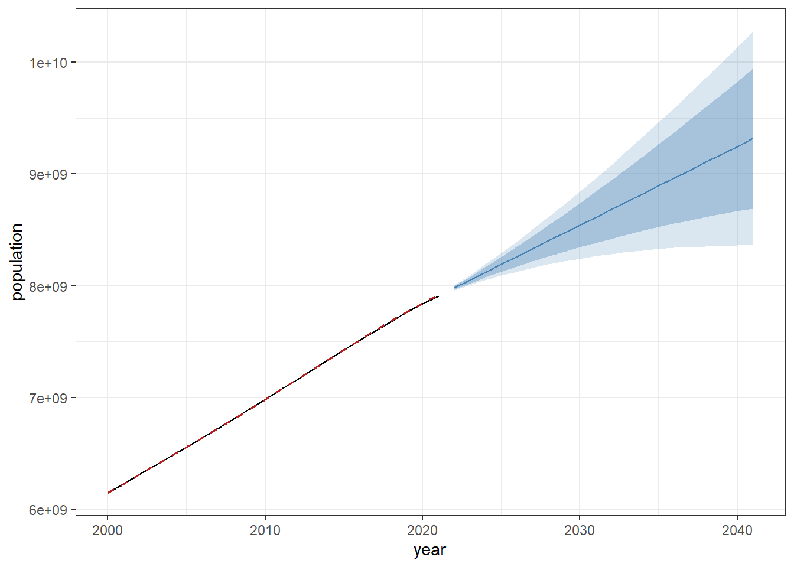
Figure 5.18: Predicción a 20 años de la población mundial usando el modelo de suavizado exponencial. En rojo discontinuo, el ajuste (fitted) del modelo sobre la serie observada
Diagnóstico de residuos del modelo ETS
Una vez ajustado un modelo, es fundamental verificar que los residuos (errores) siguen una distribución aproximadamente normal y se comportan como ruido blanco, es decir: media cero, varianza constante, sin autocorrelación. Aplicamos la misma metodología de diagnóstico que introdujimos para el remainder de la descomposición STL, con la única diferencia de que ahora los residuos se extraen con augment (quedan en la columna .innov): dibujamos la serie de residuos, su ACF y su histograma, y aplicamos los cuatro tests formales (t de Student, Ljung-Box, Shapiro-Wilk y Breusch-Pagan):
residuos_ets <- fit |> augment() # residuos en la columna .innov
residuos_ets |>
ggplot(aes(x = year, y = .innov)) +
geom_line() + # residuos en el tiempo
labs(y = "Residuos", x = "", title = "Residuos del modelo ETS")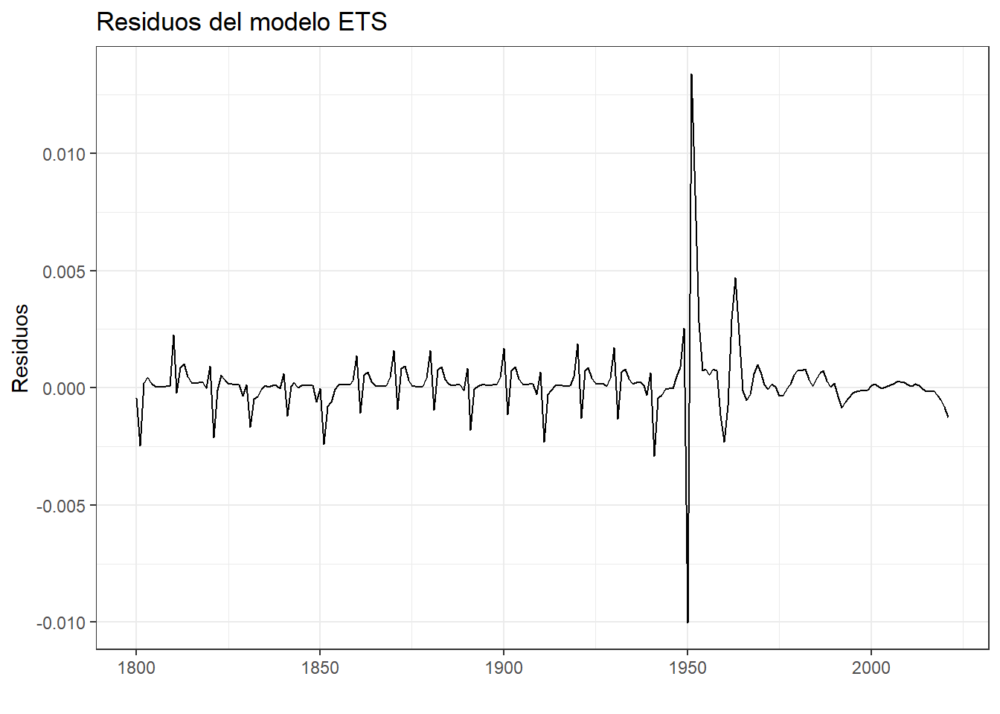
Figure 5.19: Diagnóstico de residuos del modelo ETS para la población mundial
residuos_ets |>
ACF(.innov, lag_max = 20) |> # autocorrelación de los residuos
autoplot() + labs(title = "ACF de los residuos")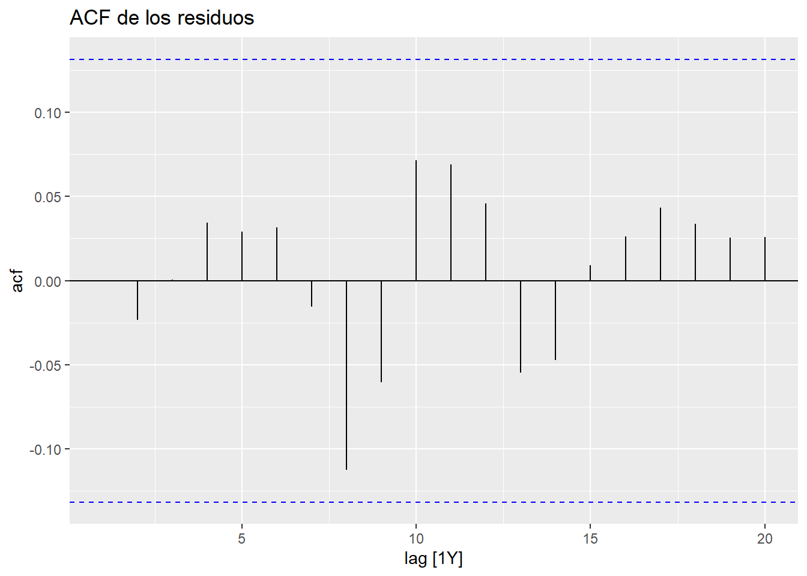
Figure 5.20: ACF de los residuos del modelo ETS
residuos_ets |>
ggplot(aes(x = .innov)) +
geom_histogram(bins = 15) + # distribución de los residuos
labs(x = "Residuos", title = "Histograma de los residuos")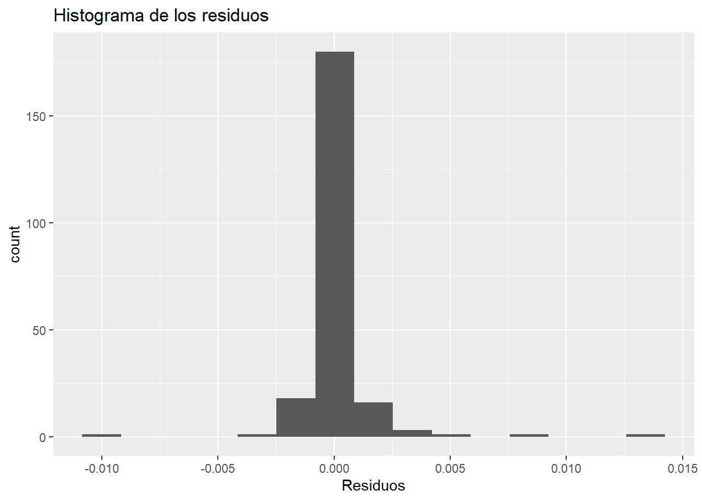
Figure 5.21: Histograma de los residuos del modelo ETS
Aplicamos ahora los cuatro tests con las mismas funciones que usamos con el remainder de STL. Nótese que la única diferencia es de dónde salen los residuos: aquí de la columna .innov que devuelve augment().
aedv_tests_residuos(residuos_ets$.innov,residuos_ets$year) |> # los 4 tests de una vez
aedv_tabla_tests("Diagnóstico de residuos del modelo ETS")| Diagnóstico de residuos del modelo ETS | ||||
| Propiedad que se analiza | Test | Condición para superarlo | p-valor | ¿Lo supera? |
|---|---|---|---|---|
| Media cero | t de Student | p-valor > 0.05 | 0.0637 | Sí |
| Ausencia de autocorrelación | Ljung-Box | p-valor > 0.05 | 0.8271 | Sí |
| Normalidad | Shapiro-Wilk | p-valor > 0.05 | 1.9e-23 | No |
| Homocedasticidad (varianza constante) | Breusch-Pagan | p-valor > 0.05 | 0.2783 | Sí |
El diagnóstico es en conjunto favorable: los residuos superan los contrastes de media cero, ausencia de autocorrelación y homocedasticidad. Que Ljung-Box salga en verde es la señal relevante aquí, porque indica que el modelo ha capturado la estructura temporal de la serie y no deja información sistemática sin aprovechar.
El único contraste que falla es el de normalidad: como ya apuntaba el histograma, hay valores atípicos y asimetría, algo esperable en una serie tan larga (población mundial de 1800 a 2021) que atraviesa periodos con dinámicas demográficas muy distintas (guerras, transición demográfica, etc.). Esto no invalida el modelo, pero advierte de que los intervalos de confianza de la predicción, que fable calcula asumiendo errores normales, deben interpretarse con cautela.
Conviene además recordar que el test t de la media asume a su vez normalidad; con un tamaño muestral grande como el de esta serie es razonablemente robusto frente a esa falta de normalidad (teorema central del límite).
Ahora repetiremos el proceso con la serie temporal de llegadas de viajeros a Canarias, que es una serie temporal con estacionalidad. Observamos que en este caso el mejor modelo es del tipo ETS(M,A,M), que corresponde con una serie con estacionalidad multiplicativa. Además, en este caso la predicción falla totalmente debido al enorme impacto que tuvo la epidemia de la COVID en el movimiento de pasajeros. Esto nos dice que los modelos predictivos, como los que se estudian aquí, se basan en que los factores que condicionan la evolución la serie temporal serán los mismos en el futuro que en el pasado. Cuando se producen eventos que modifican estos factores de evolución, la fiabilidad de la predicción se puede deteriorar mucho.
## Series: pasajeros
## Model: ETS(M,A,M)
## Smoothing parameters:
## alpha = 0.541925
## beta = 0.002598776
## gamma = 0.09755761
##
## Initial states:
## l[0] b[0] s[0] s[-1] s[-2] s[-3] s[-4] s[-5]
## 145152 1894.426 0.9742414 0.8335583 1.053734 1.134229 1.412889 1.244848
## s[-6] s[-7] s[-8] s[-9] s[-10] s[-11]
## 0.9980586 0.9339813 0.9840955 0.8667885 0.7843986 0.7791779
##
## sigma^2: 0.0032
##
## AIC AICc BIC
## 6227.709 6230.325 6287.710Nótese que en el modelo ETS, cuando hay estacionalidad de periodo \(m\), el número de parámetros puede aumentar mucho pues se requiere, además del parámetro \(\gamma\), \(m-1\) parámetros para controlar los valores iniciales de \(s_t\).
| .model | date | pasajeros | .mean |
|---|---|---|---|
| ETS(pasajeros) | 2020 ene. | N(3e+05, 2.9e+08) | 302410.9 |
| ETS(pasajeros) | 2020 feb. | N(291356, 3.5e+08) | 291356.0 |
| ETS(pasajeros) | 2020 mar. | N(334528, 5.7e+08) | 334528.2 |
| ETS(pasajeros) | 2020 abr. | N(361755, 7.9e+08) | 361754.7 |
| ETS(pasajeros) | 2020 may. | N(361928, 9.1e+08) | 361928.3 |
| ETS(pasajeros) | 2020 jun. | N(4e+05, 1.2e+09) | 396891.5 |
| ETS(pasajeros) | 2020 jul. | N(490388, 2.1e+09) | 490387.8 |
| ETS(pasajeros) | 2020 ago. | N(539218, 2.9e+09) | 539217.9 |
| ETS(pasajeros) | 2020 sep. | N(430142, 2e+09) | 430142.3 |
| ETS(pasajeros) | 2020 oct. | N(417467, 2.1e+09) | 417466.7 |
| ETS(pasajeros) | 2020 nov. | N(333989, 1.4e+09) | 333989.4 |
| ETS(pasajeros) | 2020 dic. | N(390185, 2.1e+09) | 390184.5 |
| ETS(pasajeros) | 2021 ene. | N(314397, 1.5e+09) | 314397.0 |
| ETS(pasajeros) | 2021 feb. | N(3e+05, 1.5e+09) | 302866.3 |
| ETS(pasajeros) | 2021 mar. | N(347701, 2.1e+09) | 347701.0 |
| ETS(pasajeros) | 2021 abr. | N(375953, 2.6e+09) | 375953.5 |
| ETS(pasajeros) | 2021 may. | N(376088, 2.7e+09) | 376088.0 |
| ETS(pasajeros) | 2021 jun. | N(412369, 3.4e+09) | 412369.1 |
| ETS(pasajeros) | 2021 jul. | N(509450, 5.5e+09) | 509450.1 |
| ETS(pasajeros) | 2021 ago. | N(560111, 6.9e+09) | 560111.2 |
| ETS(pasajeros) | 2021 sep. | N(446756, 4.6e+09) | 446756.1 |
| ETS(pasajeros) | 2021 oct. | N(433540, 4.5e+09) | 433539.6 |
| ETS(pasajeros) | 2021 nov. | N(346808, 3e+09) | 346807.6 |
| ETS(pasajeros) | 2021 dic. | N(405112, 4.3e+09) | 405112.2 |
aedv_dibujar_prediccion(prediccion,
istac_aeropuertos |> filter(date>= yearmonth(as.Date("2017-01-01"))),
fit)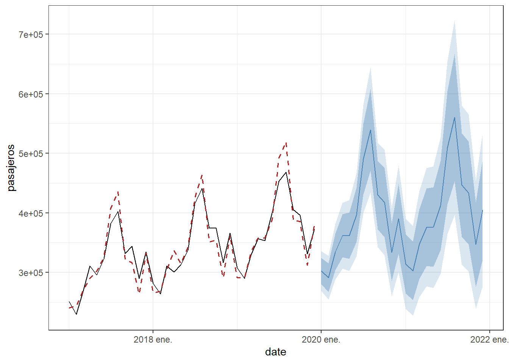
Figure 5.22: Predicción a 2 años de la llegada de pasajeros a Canarias usando el modelo de suavizado exponencial. En rojo discontinuo, el ajuste (fitted) del modelo sobre la serie observada
Este modelo de suavizado exponencial descompone la serie temporal usando \(l_t\) (una versión suavizada de la serie temporal), \(b_t\) (la tendencia o “slope”), \(s_t\) ( la estacionalidad o “season”) y el error (remainder), que al ser multiplicativo se expresa como \(1+\varepsilon_t\) . En la siguiente gráfica se ilustra esta descomposición:
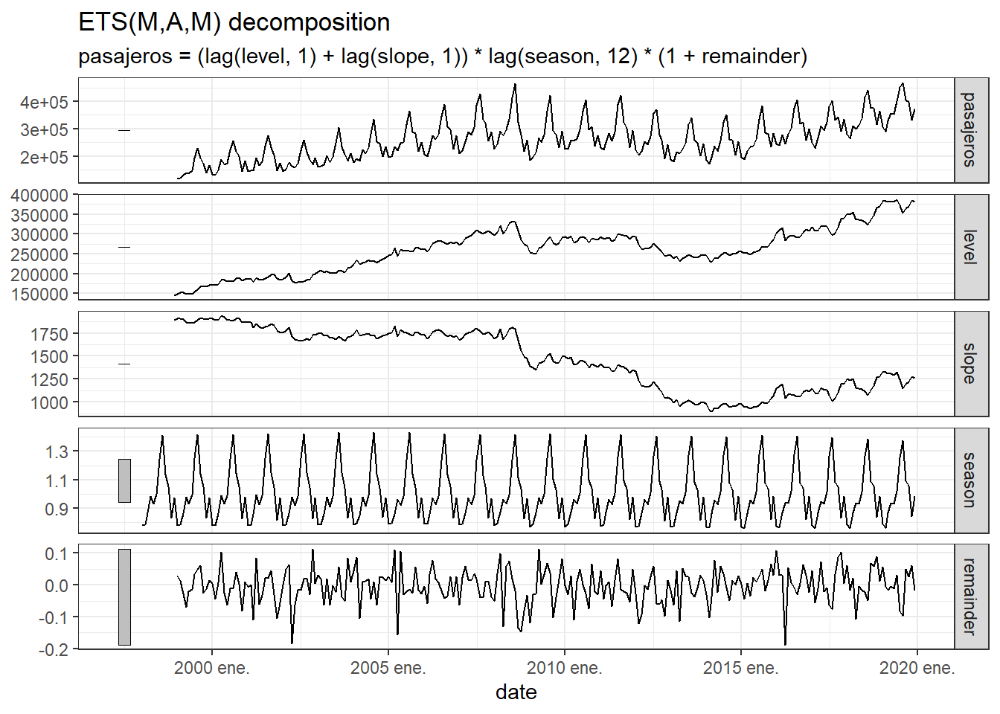
Figure 5.23: Descomposición de la serie temporal de llegadas a los aeropuertos canarios usando el modelo de suavizado exponencial.
Resumen del suavizado exponencial (ETS)
- Predice usando un promedio ponderado de todos los valores pasados, con pesos que decaen exponencialmente hacia atrás.
- Asume que, compensada la estacionalidad, la tendencia es aproximadamente lineal (con posible amortiguamiento).
- La notación ETS(E,T,S) describe si el error, la tendencia y la estacionalidad son (N)inguno, (A)ditivo o (M)ultiplicativo; la función
ETS()elige automáticamente la mejor combinación. - Gestiona mal la estacionalidad de periodo grande (necesita \(m\) parámetros) y no admite doble estacionalidad de forma nativa; ambos problemas se resuelven sacando la estacionalidad fuera del modelo (ver sección 5.10).
- Tanto ETS como STL no se pueden aplicar si existen datos faltantes en la serie. Como veremos más adelante, esto se puede resolver mediante un proceso de interpolación de los datos faltantes.
5.9 El modelo ARIMA
Al igual que hicimos con el suavizado exponencial, vamos a introducir el modelo ARIMA de forma progresiva: partimos de su versión más sencilla, el modelo autorregresivo (AR), y le iremos añadiendo componentes —las derivadas (I) y la combinación de errores pasados (MA)— hasta llegar al modelo completo con estacionalidad.
En esencia, ARIMA predice cada valor como una combinación lineal de una cola finita de valores pasados de la serie y de los errores de predicción anteriores. A diferencia de ETS —que promedia todos los valores pasados con pesos decrecientes—, ARIMA emplea solo unos pocos términos, pero con gran libertad para elegir cuáles y con qué peso. Para funcionar bien exige que la serie sea estacionaria (media y varianza aproximadamente constantes en el tiempo, sin tendencia); si no lo es, se deriva —se trabaja con las diferencias \(y_t - y_{t-1}\)— tantas veces como haga falta hasta estabilizarla.
El modelo se resume con la notación ARIMA(p,d,q)(P,D,Q)\(_m\):
- p, d, q describen la parte regular: \(p\) términos autorregresivos (valores pasados de la serie), \(d\) derivadas (para eliminar la tendencia) y \(q\) términos de media móvil (errores pasados).
- P, D, Q describen la parte estacional: lo mismo, pero referido a los valores separados por el periodo \(m\) de la estacionalidad (por ejemplo, \(m=12\) en datos mensuales con ciclo anual).
Por ejemplo, un ARIMA(2,2,4) tiene 2 términos autorregresivos, 2 derivadas y 4 de media móvil, y ninguna componente estacional. Con esto basta para interpretar el resultado del ajuste; las subsecciones que siguen construyen las ecuaciones que hay detrás.
⚠️ Sección de ampliación
Las subsecciones siguientes (de Modelo autorregresivo a Predicción con ARIMA) desarrollan la formulación matemática del modelo ARIMA con el operador de retardo \(B\): la parte autorregresiva, las derivadas, la media móvil, la componente estacional y la fórmula de predicción. Son de ampliación: en una primera lectura puedes saltar directamente a la subsección Estimación óptima —donde el modelo se ajusta automáticamente con fable— y volver a estas deducciones más adelante.
Modelo autorregresivo (AR) ⚠️
La versión más sencilla del modelo de predicción ARIMA es el denominado modelo autorregresivo (AR) donde cada valor observado \(y_t\) se aproxima como una combinación lineal de valores observados anteriormente, es decir :
\[ y_t = c + \phi_1 y_{t-1}+\phi_2 y_{t-2}+ \cdots +\phi_p y_{t-p}+ \varepsilon_t \] donde \(p\) representa el número de valores en el pasado que se toman para aproximar el valor de \(y_t\), y \(\varepsilon_t\) es el error de aproximación. \(c\) y \(\phi_1,...,\phi_p\) son los parámetros del modelo. Vamos a expresar esta ecuación introduciendo el operador, \(B\), de desplazamiento temporal :
\[ By_t = y_{t-1} \] usando el operador \(B\) podemos escribir la ecuación del modelo AR como:
\[ (1-\phi_1B-\phi_2B^2-\cdots\phi_pB^p)y_t = c + \varepsilon_t \]
Derivadas y estacionariedad ⚠️
Para que el modelo AR funcione bien la serie temporal no debe tener una tendencia definida de crecimiento o decrecimiento. La manera habitual de intentar eliminar la tendencia de una serie temporal es utilizar en el modelo alguna derivada de la serie temporal en lugar de la propia serie temporal. La derivada primera se define como :
\[ (1-B)y_t=y_t-y_{t-1}. \] La derivada segunda sería la derivada de la derivada, es decir:
\[ (1-B)^2y_t=(1-B)(y_t-y_{t-1})=y_t-y_{t-1} -(y_{t-1}-y_{t-2})=y_t-2y_{t-1}+y_{t-2}. \] Por tanto, con esta notación, la derivada de orden \(d\) sería \((1-B)^dy_t\). Al calcular las derivadas de una serie temporal, ésta va perdiendo su tendencia. Para ilustrar esto, en las siguientes gráficas mostramos la serie temporal de la población mundial y sus primeras 3 derivadas. Como se puede observar, en la derivada tercera ya la serie temporal no tiene un patrón de crecimiento definido.
p1 <- owid_population |>
filter(location=="World") |>
autoplot(population) # serie original
data <- owid_population |>
filter(location=="World")
data$derivada_1 <- aedv_derivada(data$population) # primera derivada
p2 <- data |> autoplot(derivada_1)
data$derivada_2 <- aedv_derivada(data$derivada_1) # segunda derivada
p3 <- data |> autoplot(derivada_2)
data$derivada_3 <- aedv_derivada(data$derivada_2) # tercera derivada
p4 <- data |> autoplot(derivada_3)
wrap_plots(p1, p2, p3, p4, ncol = 2, nrow = 2) # las 4 series juntas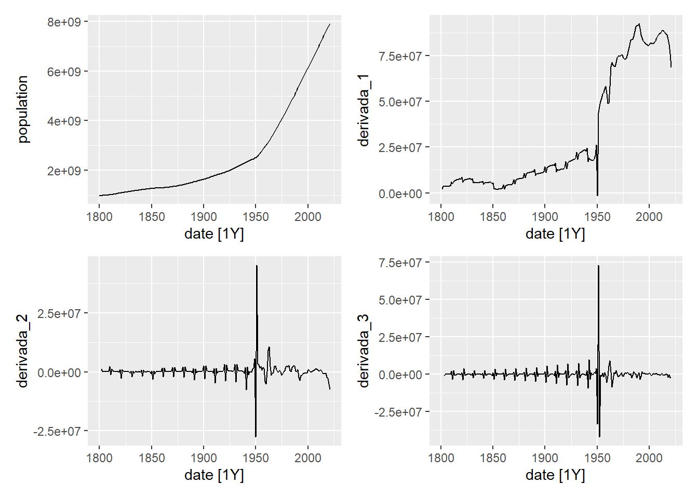
Figure 5.24: Serie temporal de la población mundial y sus derivadas
La propiedad que buscamos al derivar tiene nombre propio: una serie es estacionaria (no confundir con estacional) cuando su media y su varianza se mantienen aproximadamente constantes a lo largo del tiempo. Una serie con tendencia creciente o decreciente no es estacionaria, y el modelo AR requiere trabajar sobre series estacionarias para funcionar correctamente. Para verificar la estacionariedad disponemos de tests estadísticos. El test KPSS (Kwiatkowski-Phillips-Schmidt-Shin) tiene como hipótesis nula que la serie es estacionaria; un p-valor bajo (< 0.05) indica que la serie no es estacionaria y requiere derivación:
# Test KPSS sobre la serie de población mundial
owid_population |>
filter(location == "World") |>
features(population, unitroot_kpss)## # A tibble: 1 × 3
## location kpss_stat kpss_pvalue
## <chr> <dbl> <dbl>
## 1 World 3.62 0.01En lugar de decidir a ojo cuántas derivadas aplicar, la función unitroot_ndiffs calcula automáticamente cuántas son necesarias para conseguir estacionariedad, lo cual determina el orden \(d\) de la derivada que usaremos en el modelo:
# Número de derivadas necesarias para estacionariedad
owid_population |>
filter(location == "World") |>
features(population, unitroot_ndiffs)## # A tibble: 1 × 2
## location ndiffs
## <chr> <int>
## 1 World 2Al reemplazar en el modelo (AR) la serie original por su derivada de orden d obtenemos el modelo
\[ (1-\phi_1B-\phi_2B^2-\cdots-\phi_pB^p)(1-B)^dy_t = c + \varepsilon_t \] donde aparece como parámetro adicional el orden, \(d\), de la derivada utilizada.
ARIMA(p,d,q) ⚠️
A continuación, para mejorar el modelo se añade a la predicción una combinación lineal de los errores pasados (esta parte del modelo se denomina (MA) ), llegando al modelo ARIMA no estacional dado por:
\[ (1-\phi_1B-\cdots\phi_pB^p)(1-B)^dy_t = c + \varepsilon_t + \theta_1\varepsilon_{t-1}+\cdots \theta_q\varepsilon_{t-q} \] que se puede expresar también como :
\[ (1-\phi_1B-\cdots-\phi_pB^p)(1-B)^dy_t = c + (1 + \theta_1B+\cdots \theta_qB^q)\varepsilon_{t} \] A este modelo se le denomina ARIMA(p,d,q). Definiendo las funciones
\[ \begin{aligned} \phi(B) &= 1-\phi_1B-\cdots-\phi_pB^p \\ \theta(B) &= 1 + \theta_1B+\cdots \theta_qB^q \end{aligned} \] el modelo ARIMA(p,d,q) se puede definir de forma más compacta como
\[ \phi(B)(1-B)^dy_t=c+\theta(B)\varepsilon_{t} \]
ARIMA(p,d,q)(P,D,Q)\(_m\) ⚠️
Para introducir una estacionalidad de periodo \(m\) en el modelo ARIMA se utilizan diferencias entre el valor de una variable y su estado \(m\) instantes anteriores. Esto se consigue haciendo \((1-B^m)y_t\). Consideremos las nuevas funciones:
\[ \begin{aligned} \Phi(B^m) &= 1-\Phi_1B^m-\cdots-\Phi_PB^{mP} \\ \Theta(B^m) &= 1 + \Theta_1B^m+\cdots \Theta_QB^{mQ} \end{aligned} \]
El modelo general ARIMA con estacionalidad se denota como ARIMA(p,d,q)(P,D,Q)\(_m\) y se define como
\[ \phi(B)\Phi(B^m)(1-B)^d(1-B^m)^Dy_t=c+\theta(B)\Theta(B^m)\varepsilon_{t} \]
De forma análoga a como unitroot_ndiffs estima el orden \(d\) de la derivada ordinaria, la función unitroot_nsdiffs calcula el número de diferencias estacionales necesarias, es decir, el parámetro \(D\) del modelo:
istac_aeropuertos |>
features(pasajeros, unitroot_nsdiffs) # nº de diferencias estacionales necesarias## # A tibble: 1 × 1
## nsdiffs
## <int>
## 1 1Predicción con ARIMA ⚠️
Para hacer predicciones en el futuro usando el modelo ARIMA despejamos de la ecuación del modelo \(y_t\) y nos queda
\[ y_t=c+\left(1-\phi(B)\Phi(B^m)(1-B)^d(1-B^m)^D\right)y_t+\theta(B)\Theta(B^m)\varepsilon_{t} \] Tal y como se construye el modelo, la segunda parte de la igualdad es una combinación lineal de valores anteriores a \(y_t\), es decir \(y_{t-1},y_{t-2},...,\), pero no de \(y_t\) y una combinación lineal de valores de \(\varepsilon_t\). Si \(y_T\) es el último valor conocido de \(y_t\), entonces el último valor que podemos calcular del error observado es \(\varepsilon_T\). En la fórmula de predicción, siempre consideraremos que \(\varepsilon_t=0\) para \(t>T\). Podemos entonces definir la predicción \(\hat y_{T+1|T}\) como
\[ \hat y_{T+1|T}=c+\left(1-\phi(B)\Phi(B^m)(1-B)^d(1-B^m)^D\right)y_{T+1}+\theta(B)\Theta(B^m)\varepsilon_{T+1} \]
La parte derecha de la ecuación se puede evaluar con los datos conocidos porque, por lo dicho anteriormente, solo intervienen valores de \(y_t\) con \(t\leq T\) y asignamos \(\varepsilon_{T+1}=0\). Ahora iterativamente vamos aplicando la fórmula para obtener la predicción en tiempos posteriores tomando como valores de \(y_t\) anteriores los observados (para \(t \leq T\)) y los que predice el modelo para (\(t>T\)). De la misma forma \(\varepsilon_t\) será el valor observado para \(t \leq T\) y 0 para \(t>T\). Por ejemplo para calcular \(\hat y_{T+2|T}\) se utiliza \(y_{t+1}=\hat y_{T+1|T}\) a la derecha de la ecuación y \(\varepsilon_{T+2}=0\).
Merece la pena detenerse en el papel de la parte de los errores al predecir —los términos \(\theta(B)\Theta(B^m)\varepsilon_t\), es decir, la parte de media móvil del modelo—. Estos términos solo aportan información real mientras intervienen errores observados (\(\varepsilon_t\) con \(t\le T\)), que son las “sorpresas” o shocks que el modelo ha registrado en el pasado. Pero, al asignar \(\varepsilon_t=0\) para \(t>T\) (que es su mejor estimación posible, ya que su valor esperado es cero), cada paso que avanzamos hacia el futuro sustituye uno de esos errores observados por un cero. Un modelo con \(q\) términos de media móvil regular (más \(Q\) estacionales) agota los errores observados en unos pocos pasos: en cuanto el horizonte de predicción supera el orden de la media móvil, todos los \(\varepsilon_t\) que aparecen en la fórmula son futuros y valen cero, con lo que la parte de media móvil desaparece por completo y la predicción queda gobernada únicamente por la parte autorregresiva y las derivadas.
Esto tiene dos consecuencias importantes. Primera, la parte de media móvil solo refina la predicción a corto plazo: aprovecha los shocks más recientes para corregir los primeros valores predichos, pero deja de contribuir enseguida; a medio y largo plazo la predicción se apoya exclusivamente en la estructura autorregresiva y de derivación (que, en la práctica, tiende a prolongar la tendencia). Segunda, esos errores futuros que ponemos a cero no desaparecen de la realidad: representan la incertidumbre que el modelo no puede anticipar, y por eso se acumulan en la varianza de la predicción, ensanchando los intervalos de confianza a medida que nos alejamos de \(T\). En conjunto, cuanto más lejos predecimos, menos información específica de la serie reciente incorpora el modelo —pierde primero su capacidad de corregir con los errores recientes y después buena parte de su finura—, lo que puede degradar globalmente la calidad de la predicción y explica por qué las predicciones a horizonte largo de un ARIMA suelen ser suaves y con intervalos muy amplios.
Estimación óptima
Al igual que en el caso de los modelos de suavizado exponencial, para calcular automáticamente el modelo
ARIMA óptimo para una serie temporal utilizaremos la función modelque suministra
la librería. Esta función puede tomar algún tiempo en ejecutarse
fit <- owid_population |>
filter(location=="World") |> # solo la serie mundial
model(ARIMA(population,stepwise = FALSE, approx = FALSE)) # búsqueda exhaustiva
report(fit)## Series: population
## Model: ARIMA(2,2,4)
##
## Coefficients:
## ar1 ar2 ma1 ma2 ma3 ma4
## 1.0186 -0.8519 -1.366 1.3471 -0.3992 0.1736
## s.e. 0.0742 0.0686 0.098 0.1454 0.1330 0.0855
##
## sigma^2 estimated as 1.444e+13: log likelihood=-3642.69
## AIC=7299.37 AICc=7299.9 BIC=7323.13Observamos que el modelo resultante es un ARIMA(2,2,4) sin estacionalidad. Nótese que el orden de derivación elegido, \(d=2\), coincide con el estimado por unitroot_ndiffs en la sección de derivadas y estacionariedad. Si en la llamada a la función ARIMA quitamos los parámetros stepwise = FALSE, approx = FALSE, la función tardará menos en calcular el resultado, pero el ajuste del modelo será menos preciso. Mirando
los coeficientes obtenidos, el modelo resultante sería
\[ (1-1.0186B+0.8519B^2)(1-B)^2y_t=\varepsilon_{t} -1.366\varepsilon_{t-1} + 1.3471\varepsilon_{t-2} - 0.3992\varepsilon_{t-3} + 0.1736\varepsilon_{t-4} \] los valores de AIC, AICc y BIC son ligeramente inferiores a los obtenidos usando el modelo de suavizado exponencial. Conviene ser prudente al sacar conclusiones de esa comparación: como veremos en la sección 5.12, estos criterios sirven para elegir dentro de una misma familia de modelos, pero ETS y ARIMA pertenecen a clases distintas y sus valores no están en la misma escala.
La búsqueda automática es heurística
Conviene entender qué hace ARIMA() cuando se la deja con sus valores por defecto, porque es la razón de que aquí pasemos stepwise = FALSE, approx = FALSE.
Buscar el mejor modelo significa recorrer las combinaciones posibles de órdenes \((p,d,q)(P,D,Q)_m\), que son muchas. Por defecto la función no las prueba todas: hace una búsqueda por pasos (stepwise) que parte de unos pocos modelos candidatos, se mueve hacia los vecinos que mejoran el AICc y descarta ramas enteras que no parecen prometedoras. Además, con approx = TRUE estima cada candidato con una aproximación de la verosimilitud, más rápida de calcular. El resultado es un ajuste mucho más veloz, a cambio de una garantía menor: el modelo devuelto es el mejor que ha encontrado, no necesariamente el mejor que existe.
Poner los dos argumentos a FALSE —como hacemos aquí— fuerza la búsqueda exhaustiva y exacta: puede tardar bastante más, pero no depende del camino que haya tomado la heurística.
Un matiz que da tranquilidad: lo que sí es estable es el orden de derivación \(d\), porque no sale de esa búsqueda. Se decide antes, con los contrastes de raíz unitaria de la sección de derivadas y estacionariedad —de ahí que coincida con lo que dio unitroot_ndiffs—. Lo que la heurística puede errar son los órdenes \(p\) y \(q\) de las partes autorregresiva y de media móvil.
En la práctica: explorar con los valores por defecto mientras se prueban ideas, y dejar la búsqueda exhaustiva para el modelo que vaya a usarse de verdad.
Diagnóstico de residuos del modelo ARIMA
Al igual que con el modelo ETS, verificamos que los residuos se comportan como ruido blanco y complementamos el diagnóstico visual con los mismos cuatro tests formales: t de Student (media cero), Ljung-Box (autocorrelación), Shapiro-Wilk (normalidad) y Breusch-Pagan (homocedasticidad):
residuos_arima <- fit |> augment() # residuos en la columna .innov
residuos_arima |>
ggplot(aes(x = year, y = .innov)) +
geom_line() + # residuos en el tiempo
labs(y = "Residuos", x = "", title = "Residuos del modelo ARIMA")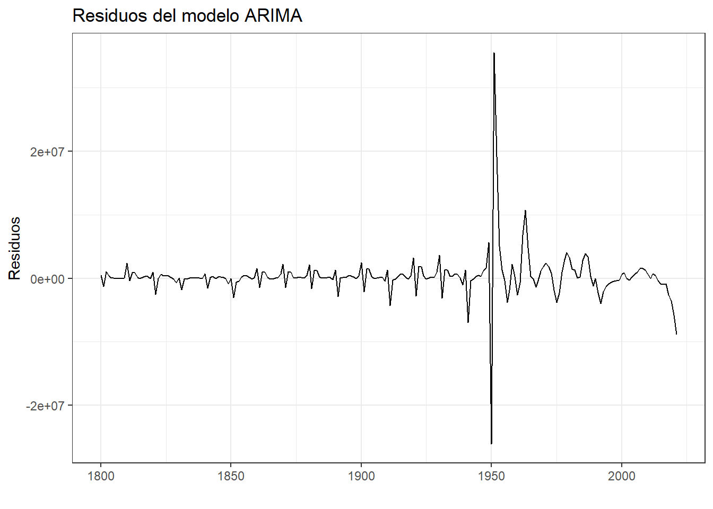
Figure 5.25: Diagnóstico de residuos del modelo ARIMA para la población mundial
residuos_arima |>
ACF(.innov, lag_max = 20) |> # autocorrelación de los residuos
autoplot() + labs(title = "ACF de los residuos")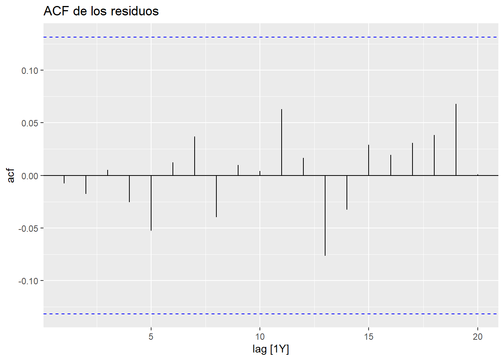
Figure 5.26: ACF de los residuos del modelo ARIMA
residuos_arima |>
ggplot(aes(x = .innov)) +
geom_histogram(bins = 15) + # distribución de los residuos
labs(x = "Residuos", title = "Histograma de los residuos")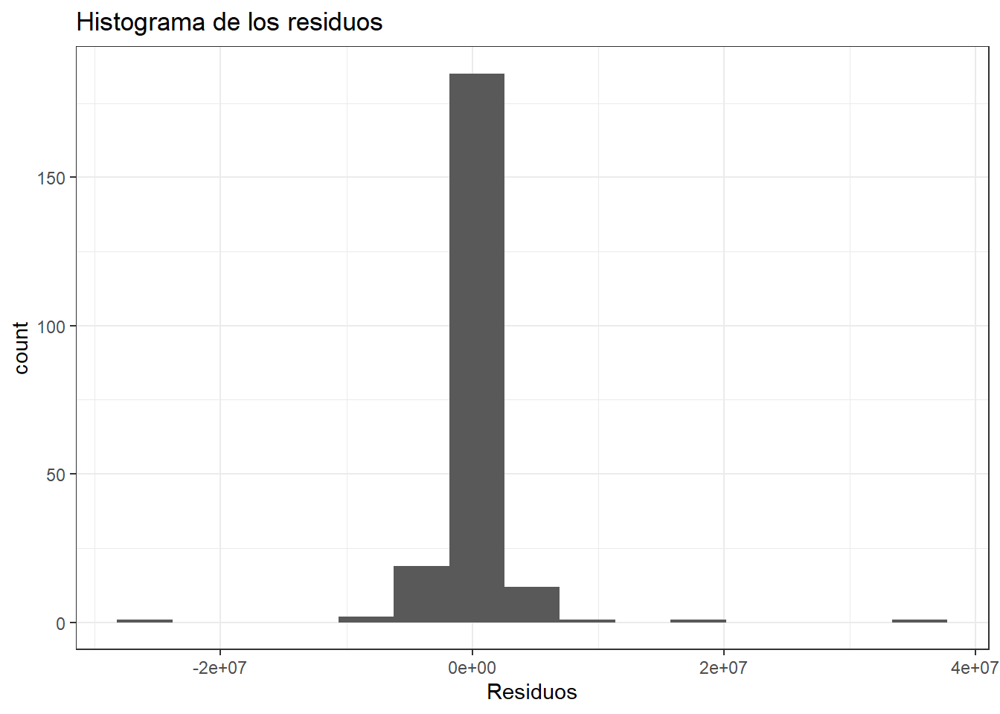
Figure 5.27: Histograma de los residuos del modelo ARIMA
Repetimos el diagnóstico completo con las mismas dos funciones:
aedv_tests_residuos(residuos_arima$.innov,residuos_arima$year) |> # los 4 tests de una vez
aedv_tabla_tests("Diagnóstico de residuos del modelo ARIMA")| Diagnóstico de residuos del modelo ARIMA | ||||
| Propiedad que se analiza | Test | Condición para superarlo | p-valor | ¿Lo supera? |
|---|---|---|---|---|
| Media cero | t de Student | p-valor > 0.05 | 0.2033 | Sí |
| Ausencia de autocorrelación | Ljung-Box | p-valor > 0.05 | 0.9985 | Sí |
| Normalidad | Shapiro-Wilk | p-valor > 0.05 | 1.0e-24 | No |
| Homocedasticidad (varianza constante) | Breusch-Pagan | p-valor > 0.05 | 0.1619 | Sí |
El resultado es muy parecido al del modelo ETS: se superan los contrastes de media cero, ausencia de autocorrelación y homocedasticidad, y falla el de normalidad, coherente con lo observado en el histograma. Conviene fijarse en el p-valor de Ljung-Box, holgadamente superior al del ETS: no solo no hay evidencia de autocorrelación, sino que el margen es mayor, lo que confirma el mejor ajuste del ARIMA que ya apuntaban los valores de AIC, AICc y BIC.
A continuación vamos a realizar una predicción de la población mundial a 20 años vista. Observamos que el modelo de suavizado exponencial aplicado anteriormente a esta serie predice una población de 9.317 millones para 2041 y el modelo de ARIMA predice 9.260 millones.
prediccion <- fit |>
forecast(h = "20 years") # predicción a 20 años, ahora con el modelo ARIMA
knitr::kable(prediccion)| location | .model | year | population | .mean |
|---|---|---|---|---|
| World | ARIMA(population, stepwise = FALSE, approx = FALSE) | 2022 | N(8e+09, 1.4e+13) | 7979495797 |
| World | ARIMA(population, stepwise = FALSE, approx = FALSE) | 2023 | N(8e+09, 5.4e+13) | 8047887506 |
| World | ARIMA(population, stepwise = FALSE, approx = FALSE) | 2024 | N(8.1e+09, 1.4e+14) | 8115385115 |
| World | ARIMA(population, stepwise = FALSE, approx = FALSE) | 2025 | N(8.2e+09, 3e+14) | 8181976775 |
| World | ARIMA(population, stepwise = FALSE, approx = FALSE) | 2026 | N(8.2e+09, 5.5e+14) | 8248407271 |
| World | ARIMA(population, stepwise = FALSE, approx = FALSE) | 2027 | N(8.3e+09, 9.4e+14) | 8315445358 |
| World | ARIMA(population, stepwise = FALSE, approx = FALSE) | 2028 | N(8.4e+09, 1.5e+15) | 8383239653 |
| World | ARIMA(population, stepwise = FALSE, approx = FALSE) | 2029 | N(8.5e+09, 2.2e+15) | 8451286655 |
| World | ARIMA(population, stepwise = FALSE, approx = FALSE) | 2030 | N(8.5e+09, 3.1e+15) | 8518946872 |
| World | ARIMA(population, stepwise = FALSE, approx = FALSE) | 2031 | N(8.6e+09, 4.2e+15) | 8585997822 |
| World | ARIMA(population, stepwise = FALSE, approx = FALSE) | 2032 | N(8.7e+09, 5.6e+15) | 8652757642 |
| World | ARIMA(population, stepwise = FALSE, approx = FALSE) | 2033 | N(8.7e+09, 7.2e+15) | 8719739932 |
| World | ARIMA(population, stepwise = FALSE, approx = FALSE) | 2034 | N(8.8e+09, 9.1e+15) | 8787196845 |
| World | ARIMA(population, stepwise = FALSE, approx = FALSE) | 2035 | N(8.9e+09, 1.1e+16) | 8854947709 |
| World | ARIMA(population, stepwise = FALSE, approx = FALSE) | 2036 | N(8.9e+09, 1.4e+16) | 8922593679 |
| World | ARIMA(population, stepwise = FALSE, approx = FALSE) | 2037 | N(9e+09, 1.7e+16) | 8989882390 |
| World | ARIMA(population, stepwise = FALSE, approx = FALSE) | 2038 | N(9.1e+09, 2e+16) | 9056896540 |
| World | ARIMA(population, stepwise = FALSE, approx = FALSE) | 2039 | N(9.1e+09, 2.4e+16) | 9123935354 |
| World | ARIMA(population, stepwise = FALSE, approx = FALSE) | 2040 | N(9.2e+09, 2.8e+16) | 9191233187 |
| World | ARIMA(population, stepwise = FALSE, approx = FALSE) | 2041 | N(9.3e+09, 3.3e+16) | 9258773854 |
Vamos ahora a dibujar la predicción usando el modelo ARIMA con con los intervalos de confianza junto a la serie observada desde el año 2000. Visualmente observamos que los intervalos de confianza son más pequeños que los de la gráfica para el modelo ETS, lo que también nos indica un mejor ajuste del modelo ARIMA.
aedv_dibujar_prediccion(prediccion,
owid_population |> filter(location=="World" & year >= 2000),
fit)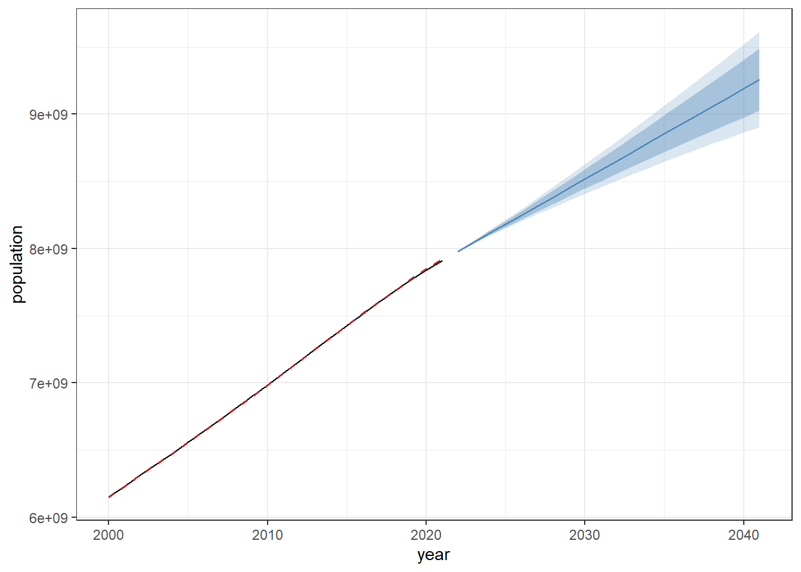
Figure 5.28: Predicción a 20 años de la población mundial usando el modelo ARIMA. En rojo discontinuo, el ajuste (fitted) del modelo sobre la serie observada
A continuación aplicamos el modelo ARIMA al estudio de la serie temporal de la llegada de viajeros a las Islas Canarias.
## Series: pasajeros
## Model: ARIMA(1,0,1)(0,1,2)[12]
##
## Coefficients:
## ar1 ma1 sma1 sma2
## 0.9726 -0.4314 -0.6336 0.1262
## s.e. 0.0163 0.0683 0.0676 0.0706
##
## sigma^2 estimated as 217525805: log likelihood=-2645.27
## AIC=5300.53 AICc=5300.79 BIC=5317.94Observamos que en este caso se obtiene un modelo ARIMA(1,0,1)(0,1,2)\(_{12}\). A partir de los parámetros estimados se obtiene que el modelo viene dado por
\[ (1-0.97B)(1-B^{12})y_t=(1-0.43B)(1-0.63B^{12}+0.13B^{24})\varepsilon_{t} \] En esta serie temporal el modelo ARIMA también presenta valores de AIC, AICc y BIC más pequeños que el suavizado exponencial, con la misma cautela que señalábamos antes al comparar dos clases de modelos distintas (sección 5.12). Nótese que cuando hay estacionalidad con periodo alto, el modelo ARIMA gestiona, en general, con menos parámetros la estacionalidad comparado con el modelo ETS. Si el periodo de la estacionalidad es \(m\), ETS siempre requiere \(m\) parámetros numéricos para gestionar la estacionalidad, sin embargo el modelo ARIMA requiere \(P+Q+1\) parámetros numéricos. En particular, para el ejemplo anterior, ETS requiere 12 parámetros numéricos para gestionar la estacionalidad y ARIMA requiere 3 parámetros numéricos.
A continuación calculamos una predicción a 2 años usando este modelo y una gráfica con la predicción, los intervalos de confianza y los datos observados desde 2017
aedv_dibujar_prediccion(prediccion,
istac_aeropuertos |> filter(date>= yearmonth(as.Date("2017-01-01"))),
fit)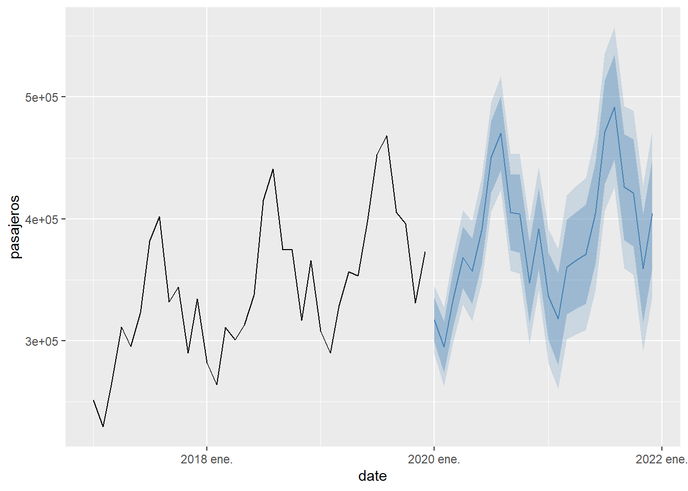
Figure 5.29: Predicción a 2 años de la llegada de pasajeros a Canarias usando el modelo ARIMA. En rojo discontinuo, el ajuste (fitted) del modelo sobre la serie observada
Transformación de la serie: el uso de log()
Hasta ahora hemos aplicado el modelo ARIMA directamente sobre la serie observada \(y_t\). En muchas situaciones conviene, antes de modelar, aplicar una transformación a la serie. La más habitual es el logaritmo, \(\log(y_t)\), que resulta útil cuando la serie evoluciona de forma multiplicativa (los cambios son más naturales en términos porcentuales que absolutos), cuando la variabilidad crece con el nivel de la serie (transformar estabiliza la varianza) o simplemente cuando queremos garantizar que las predicciones y sus intervalos de confianza no tomen valores negativos, algo imposible en la serie original (por ejemplo, un número de nacimientos nunca puede ser negativo).
La librería fable gestiona estas transformaciones de forma automática: basta con escribir ARIMA(log(y)). Internamente ajusta el modelo sobre la serie transformada \(\log(y_t)\) y, al predecir, deshace la transformación (aplicando la exponencial) para devolver el resultado en la escala original, corrigiendo además el pequeño sesgo que introduce la transformación inversa. No tenemos, por tanto, que transformar y destransformar la serie manualmente.
Para ilustrarlo utilizaremos la serie anual del número de nacimientos en España de madres de nacionalidad española, publicada por el INE (Estadística de Nacimientos, tabla 31978). La desagregación por nacionalidad de la madre está disponible a partir de 2009. Cargamos los datos y construimos un tsibble de índice anual:
# Nacimientos anuales en España de madres españolas (INE, tabla 31978)
nacimientos <- read_csv("https://ctim.es/AEDV/data/nacimientos_madre_espanola.csv") |>
as_tsibble(index = anyo) # 'anyo' es el índice temporal (frecuencia anual)
nacimientos## # A tsibble: 16 x 2 [1Y]
## anyo nacimientos
## <dbl> <dbl>
## 1 2009 392411
## 2 2010 386563
## 3 2011 379909
## 4 2012 367197
## 5 2013 346599
## 6 2014 351306
## 7 2015 344974
## 8 2016 334596
## 9 2017 317121
## 10 2018 295338
## 11 2019 280047
## 12 2020 264128
## 13 2021 265084
## 14 2022 253382
## 15 2023 242326
## 16 2024 236666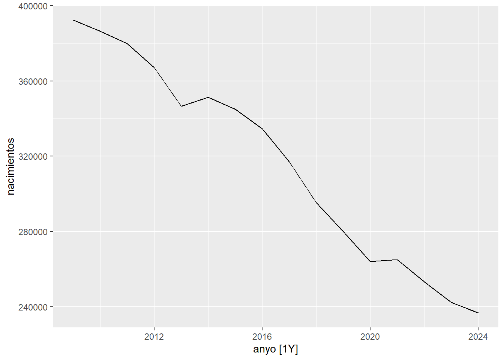
Figure 5.30: Evolución del número de nacimientos en España de madres españolas
Observamos una serie claramente decreciente desde 2009. Vamos a ajustar el modelo ARIMA sobre la serie transformada con el logaritmo:
## Series: nacimientos
## Model: ARIMA(0,1,0) w/ drift
## Transformation: log(nacimientos)
##
## Coefficients:
## constant
## -0.0337
## s.e. 0.0060
##
## sigma^2 estimated as 0.0005984: log likelihood=35.04
## AIC=-66.09 AICc=-65.09 BIC=-64.67El modelo resultante es un ARIMA(0,1,0) con deriva (drift) sobre la serie logarítmica. Es decir, tomando la primera derivada de \(\log(y_t)\) obtenemos una serie que oscila alrededor de una constante \(c\):
\[ (1-B)\log(y_t) = c + \varepsilon_t \quad\Longrightarrow\quad \log\!\left(\frac{y_t}{y_{t-1}}\right) = c + \varepsilon_t \]
Como el modelo trabaja con la derivada del logaritmo, la constante \(c\approx -0.0337\) tiene una interpretación muy directa: representa el cambio porcentual medio de un año a otro. En efecto, \(y_t/y_{t-1}\approx e^{c}=e^{-0.0337}\approx 0.967\), lo que equivale a un descenso medio de aproximadamente el 3.3 % anual. El logaritmo ha convertido la deriva en un decrecimiento proporcional (geométrico), en lugar de un decrecimiento en valor absoluto.
Para apreciar la diferencia, ajustamos el mismo modelo sin transformar la serie:
## Series: nacimientos
## Model: ARIMA(0,1,0) w/ drift
##
## Coefficients:
## constant
## -10383.000
## s.e. 1857.635
##
## sigma^2 estimated as 55470547: log likelihood=-154.5
## AIC=313 AICc=314 BIC=314.42También obtenemos un ARIMA(0,1,0) con deriva, pero ahora la constante es \(c\approx -10383\). Sin logaritmo, el modelo asume un descenso absoluto constante de unos 10.383 nacimientos cada año (una extrapolación lineal), mientras que con logaritmo asume un descenso relativo constante del 3.3 % cada año (una extrapolación exponencial). La versión lineal tiene un inconveniente evidente a largo plazo: proyectada suficientes años hacia el futuro, acabaría prediciendo un número de nacimientos negativo, algo imposible. Como veremos a continuación al alargar el horizonte hasta 2050, la media de esta predicción cruza el cero hacia 2047. La transformación logarítmica evita este problema por construcción.
Cuidado al comparar modelos con y sin transformación
Los valores de AIC, AICc y BIC que devuelve report() no son comparables entre un modelo ajustado sobre \(y_t\) y otro ajustado sobre \(\log(y_t)\): al cambiar la escala de la variable cambia también la escala de la verosimilitud, de modo que sus AIC no están en las mismas unidades. Para decidir si conviene o no la transformación hay que comparar la capacidad predictiva sobre la escala original, por ejemplo con validación cruzada temporal (sección 5.13) y métricas como el RMSE o el MAPE.
Para hacer visible este contraste, representamos la predicción de ambos modelos con un horizonte largo, hasta 2050. Empezamos con el modelo sobre la serie logarítmica. Nótese que fable devuelve automáticamente la predicción en la escala original (número de nacimientos) y que, gracias a la transformación, los intervalos de confianza son asimétricos y nunca cruzan el cero:
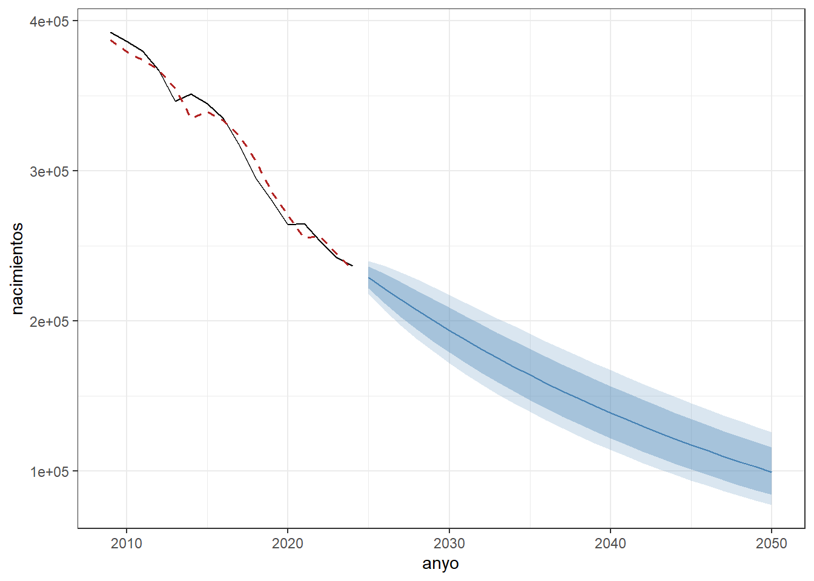
Figure 5.31: Predicción hasta 2050 del número de nacimientos de madres españolas usando ARIMA sobre la serie logarítmica. En rojo discontinuo, el ajuste (fitted) del modelo sobre la serie observada
Repetimos ahora la predicción con el mismo horizonte, pero usando el modelo ajustado sin transformar la serie. La deriva absoluta constante genera una recta descendente cuya media, junto con los intervalos de confianza, cruza el cero hacia 2047, prediciendo un número negativo de nacimientos, algo que carece por completo de sentido:
aedv_dibujar_prediccion(prediccion_lin, nacimientos, fit_lin) +
# Línea horizontal en 0 para resaltar el cruce por cero
geom_hline(yintercept = 0, color = "red", linetype = "dashed")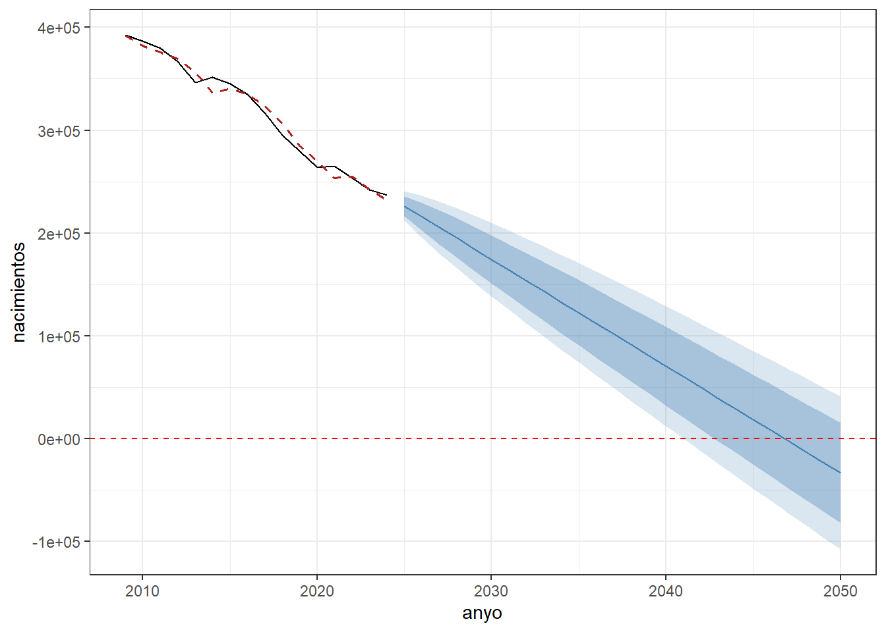
Figure 5.32: Predicción hasta 2050 usando ARIMA sobre la serie sin transformar: la media y los intervalos cruzan el cero (valores negativos imposibles). En rojo discontinuo, el ajuste (fitted) del modelo sobre la serie observada
Comparando ambas gráficas se aprecia con claridad el efecto de la transformación: el modelo logarítmico produce un decrecimiento porcentual que se amortigua y se mantiene siempre en la región de valores positivos, mientras que el modelo sin transformar prolonga indefinidamente el descenso lineal hasta caer en valores negativos sin sentido. Aunque en un horizonte corto ambos modelos den predicciones parecidas, a largo plazo el uso de log() produce un comportamiento mucho más razonable para una variable que solo puede tomar valores positivos.
¿Cuándo transformar con log()?
- Cuando la serie evoluciona de forma multiplicativa y tiene más sentido modelar los cambios porcentuales que los absolutos.
- Cuando la amplitud de las fluctuaciones crece con el nivel de la serie (el logaritmo estabiliza la varianza).
- Cuando la variable es estrictamente positiva y queremos que las predicciones y sus intervalos no puedan volverse negativos.
- En
fable, basta con escribirARIMA(log(y)): la transformación y su inversa (con corrección de sesgo) se aplican automáticamente.
Predicciones acotadas a un intervalo \([a,b]\)
La transformación logarítmica garantiza que la predicción sea positiva, es decir, la mantiene por encima de una cota inferior igual a 0, pero sin imponer ninguna cota superior. En ocasiones queremos ir un paso más allá y asegurar que la predicción permanezca dentro de un intervalo conocido \([a,b]\). Por ejemplo, podríamos querer que la predicción de nacimientos no baje de un suelo demográfico ni supere un techo que consideramos plausibles. Para ello se utiliza la transformación logit escalada (scaled logit):
\[ w_t = \log\!\left(\frac{y_t - a}{b - y_t}\right), \qquad\qquad y_t = a + \frac{(b-a)\,e^{w_t}}{1+e^{w_t}}. \]
La transformación directa lleva el intervalo \((a,b)\) a toda la recta real, donde se ajusta el modelo ARIMA, y la transformación inversa devuelve cualquier valor real al intervalo \((a,b)\): cuando \(w_t\to+\infty\) la predicción tiende a \(b\) y cuando \(w_t\to-\infty\) tiende a \(a\). De este modo, ni la predicción ni sus intervalos de confianza pueden salirse de \([a,b]\). La transformación logarítmica es, de hecho, el caso particular en que \(a=0\) y no hay cota superior.
En fable definimos una transformación a medida con new_transformation, indicando la función directa y su inversa, y la usamos igual que log():
# Transformación logit escalada: acota la serie (y su predicción) al intervalo [lower, upper]
logit_escalado <- function(x, lower, upper) log((x - lower) / (upper - x))
inv_logit_escalado <- function(x, lower, upper) (upper - lower) / (1 + exp(-x)) + lower
mi_logit <- new_transformation(logit_escalado, inv_logit_escalado)
# Ajustamos el ARIMA acotando la predicción, por ejemplo, al intervalo [100000, 400000]
fit_acotado <- nacimientos |>
model(ARIMA(mi_logit(nacimientos, lower = 100000, upper = 400000)))
prediccion_acotada <- fit_acotado |>
forecast(h = "26 years") # horizonte hasta 2050aedv_dibujar_prediccion(prediccion_acotada, nacimientos, fit_acotado) +
# Dibujamos las cotas inferior (a) y superior (b) del intervalo
geom_hline(yintercept = c(100000, 400000), color = "red", linetype = "dashed")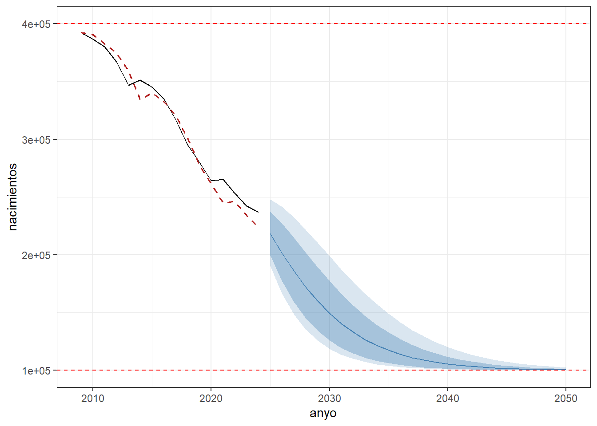
Figure 5.33: Predicción hasta 2050 acotada al intervalo [100000, 400000] mediante una transformación logit escalada. En rojo discontinuo, el ajuste (fitted) del modelo sobre la serie observada
A diferencia del descenso lineal sin transformar, que cruzaba el cero, ahora la predicción se amortigua al acercarse a la cota inferior y se estabiliza sin llegar a tocarla, manteniéndose (junto con sus intervalos de confianza) dentro del intervalo prefijado. Conviene recordar, no obstante, que las cotas \(a\) y \(b\) las fija quien analiza los datos a partir de su conocimiento del problema: la transformación garantiza que la predicción las respete, pero no las justifica por sí sola.
Resumen del modelo ARIMA
- Predice usando solo una cola finita de valores pasados de la serie y de los errores, con gran libertad para elegir cuáles y con qué peso.
- Requiere que la serie sea estacionaria; la tendencia se elimina derivando (parámetro \(d\)), y la estacionalidad, con diferencias estacionales (parámetro \(D\)).
- La notación ARIMA(p,d,q)(P,D,Q)\(_m\) describe el número de términos autorregresivos, de derivadas y de medias móviles, en la parte regular y en la estacional.
- Gestiona la estacionalidad de periodo grande con muchos menos parámetros que ETS (\(P+Q+1\) en vez de \(m\)), pero tampoco admite doble estacionalidad de forma nativa (ver sección 5.10).
5.10 Gestión de la doble estacionalidad
Ni el suavizado exponencial ni ARIMA gestionan de forma nativa una doble estacionalidad: dos periodos estacionales simultáneos, como la estacionalidad semanal (\(m=7\)) y la anual (\(m=365.25\)) que conviven en una serie diaria. La idea común a las dos estrategias que veremos es sacar la estacionalidad fuera del modelo base, de modo que este solo se ocupe de la parte no estacional. La primera estrategia, la descomposición STL, es independiente del modelo base: la componente sin estacionalidad puede predecirse indistintamente con ETS o con ARIMA. La segunda, la regresión armónica dinámica, incorpora la estacionalidad como regresores y se combina con ARIMA, que sí admite regresores externos.
Estrategia 1: descomposición STL
Consiste en descomponer la serie con STL, predecir la curva de tendencia \(L_t\) con un modelo sin estacionalidad y reconstruir la predicción de \(y_t\) añadiendo una extensión periódica de la estacionalidad \(S_t\) calculada por la descomposición. Esto permite combinar estacionalidades con diferentes periodos. El modelo aplicado a la componente sin estacionalidad puede ser tanto ETS como ARIMA; a continuación lo ilustramos con ETS sobre la serie ine_comercio_diario:
# Aplicación descomposición STL combinada con ETS sin estacionalidad
fit <- decomposition_model(
STL(value ~ season(period = 7) + # añadimos estacionalidad semanal
season(period = 365.25), # añadimos estacionalidad anual
robust = TRUE),
ETS(season_adjust ~ season("N")) # Cálculo modelo ETS sin estacionalidad
)
# Cálculo predicción a un año vista
prediccion_comercio <- ine_comercio_diario |>
model(fit) |>
forecast(h = 365)
# Dibujo
aedv_dibujar_prediccion(prediccion_comercio,
ine_comercio_diario |> filter(date>= as.Date("2022-01-01")))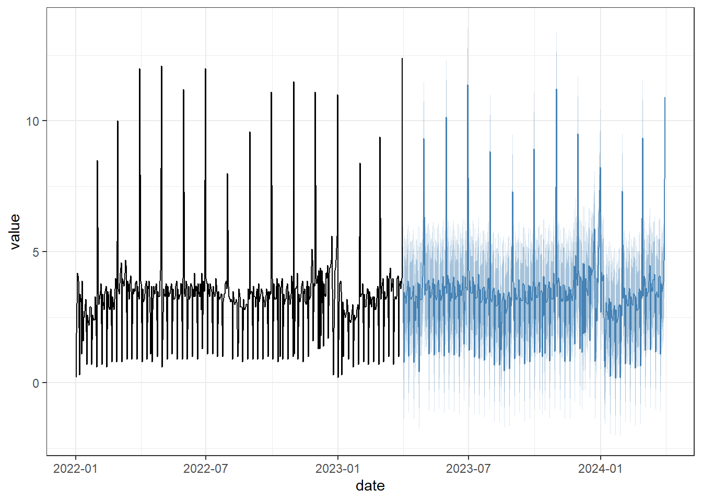
Figure 5.34: Predicción usando la descomposición STL y el suavizado exponencial.
Para emplear ARIMA en lugar de ETS basta sustituir, dentro de decomposition_model(), la línea ETS(season_adjust ~ season("N")) por ARIMA(season_adjust); el resto del procedimiento es idéntico.
Estrategia 2: regresión armónica dinámica (series de Fourier)
La regresión armónica dinámica (Dynamic Harmonic Regression) aproxima la estacionalidad de una serie mediante una combinación de senos y cosenos —una serie de Fourier—: con unos pocos de esos términos (los armónicos) se reconstruye la forma de un patrón periódico. Para quitar la estacionalidad del modelo ARIMA, se le resta a la serie la aproximación de Fourier de cada estacionalidad y se ajusta un ARIMA sin estacionalidad al residuo.
⚠️ Ampliación: la serie de Fourier
Formalmente, una serie de Fourier de periodo \(m\) y orden \(K\), que denotamos \(f_{m,K}(t)\), es la combinación de senos y cosenos
\[ f_{m,K}(t)=\sum_{k=0}^K\alpha_k \, \cos\!\Big(\tfrac{2\pi kt}{m}\Big)+\sum_{k=1}^K\beta_k \, \sin\!\Big(\tfrac{2\pi kt}{m}\Big), \]
una forma clásica en Análisis Matemático de aproximar funciones periódicas. Los coeficientes \(\alpha_k\) y \(\beta_k\) se ajustan a los datos y el orden \(K\) (como máximo \(m/2\)) controla la complejidad de la aproximación. Con este método, el ARIMA sin estacionalidad se aplica a \(\tilde{y}_t=y_t-f_{m,K}(t)-f_{m',K'}(t)\), la serie a la que se le han restado las estacionalidades de periodos \(m\) y \(m'\). Puede omitirse en una primera lectura.
La clave para usar bien esta técnica es entender qué papel juega cada elemento del modelo:
- La estacionalidad de periodo corto (semanal, \(m=7\)) es barata de representar por completo: su \(K\) máximo es 3, es decir, solo 6 coeficientes.
- Donde las series de Fourier son realmente ventajosas es en la estacionalidad de periodo largo (anual, \(m=365.25\)): como el patrón anual evoluciona de forma suave, bastan unos pocos armónicos (por ejemplo \(K=6\), es decir 12 coeficientes) para captar su forma global. Usar valores altos de \(K\) para perseguir los detalles finos es un error: multiplica el tiempo de cálculo y tiende al sobreajuste.
- La estructura de correlación a corto plazo que la aproximación suave no recoge la absorbe la propia dinámica ARMA del modelo, que se ajusta sobre los residuos de la regresión y perfecciona la predicción.
Queda un último ingrediente. Los picos de final de mes de la serie ine_comercio_diario no son una estacionalidad en sentido estricto, sino un efecto de calendario: ocurren el último día de cada mes, cuya posición no es periódica en días porque los meses tienen longitud variable. Ninguna suma de senos y cosenos suaves puede reproducir un pico aislado de este tipo. La solución natural, al tratarse de una regresión, es añadir un regresor indicador (dummy) \(D_t\) que valga 1 el último día de cada mes y 0 el resto.
Reuniendo los tres ingredientes —las dos estacionalidades representadas por series de Fourier, el regresor de calendario y la dinámica ARMA—, el modelo completo que ajustaremos es
\[ y_t = \beta_0 + \delta\, D_t + f_{7,3}(t) + f_{365.25,\,6}(t) + \eta_t, \]
donde \(\beta_0\) es el término independiente, \(\delta\) el coeficiente del dummy \(D_t\) de fin de mes, \(f_{7,3}(t)\) y \(f_{365.25,\,6}(t)\) las series de Fourier que reproducen la estacionalidad semanal y la anual, y \(\eta_t\) el error de la regresión, que no es ruido blanco sino que sigue un proceso ARMA: es la parte “dinámica” del modelo, la que absorbe la correlación a corto plazo que las curvas suaves no recogen.
¿Cuántos armónicos usar?
El orden \(K\) de cada serie de Fourier es un parámetro que hay que elegir, y conviene entender qué se está decidiendo. Cada armónico añade dos columnas al modelo (un seno y un coseno), así que subir \(K\) da una curva estacional más detallada a cambio de más parámetros que estimar y más riesgo de sobreajuste. Como regla, se prueban varios valores y se escoge el que minimice el AICc, o se comparan con validación cruzada temporal (sección 5.13); aquí se ha usado \(K=3\) para la estacionalidad semanal —el máximo posible, ya que \(K\) no puede pasar de \(m/2\) y el periodo es 7— y \(K=6\) para la anual.
Merece la pena reparar en el ahorro que esto supone en periodos largos: la estacionalidad anual sobre datos diarios (\(m \approx 365\)) se resuelve con doce columnas, mientras que tratarla como una estacionalidad clásica exigiría del orden de trescientos parámetros. Esa es la razón principal por la que la regresión armónica es la herramienta natural para estacionalidades de periodo alto.
Los regresores indicadores son una de las herramientas más útiles en la práctica: permiten incorporar al modelo cualquier información externa conocida —festivos, promociones, huelgas, cambios normativos o sucesos puntuales como una pandemia— que no sigue un patrón periódico y que, por tanto, ninguna componente estacional puede capturar. Basta añadir una columna que valga 1 cuando el suceso ocurre y 0 en caso contrario, y el modelo estima automáticamente su efecto (aquí, el incremento medio de ventas del último día de mes). En fable, este modelo se especifica en una sola fórmula:
# Regresor indicador del último día del mes (pico contable)
ine_comercio_diario <- ine_comercio_diario |>
mutate(fin_mes = as.integer(date == ceiling_date(date, "month") - days(1)))
fit <- ine_comercio_diario |>
model(
dhr = ARIMA(value ~ PDQ(0, 0, 0) + pdq(d = 0) + # ARIMA sin parte estacional y sin derivar
fin_mes + # efecto de calendario: último día del mes
fourier(period = 7, K = 3) + # estacionalidad semanal completa (K máximo)
fourier(period = 365.25, K = 6)) # estacionalidad anual suave con pocos armónicos
)
report(fit)## Series: value
## Model: LM w/ ARIMA(1,0,3) errors
##
## Coefficients:
## ar1 ma1 ma2 ma3 fin_mes fourier(period = 7, K = 3)C1_7
## 0.8760 -0.8221 -0.0894 0.0683 6.4692 0.5405
## s.e. 0.0607 0.0623 0.0250 0.0225 0.0642 0.0164
## fourier(period = 7, K = 3)S1_7 fourier(period = 7, K = 3)C2_7
## -0.0935 -0.5128
## s.e. 0.0164 0.0170
## fourier(period = 7, K = 3)S2_7 fourier(period = 7, K = 3)C3_7
## 0.6369 0.1819
## s.e. 0.0170 0.0149
## fourier(period = 7, K = 3)S3_7 fourier(period = 365.25, K = 6)C1_365
## -0.7656 -0.0394
## s.e. 0.0149 0.0204
## fourier(period = 365.25, K = 6)S1_365
## 0.0083
## s.e. 0.0204
## fourier(period = 365.25, K = 6)C2_365
## 0.0465
## s.e. 0.0202
## fourier(period = 365.25, K = 6)S2_365
## -0.2079
## s.e. 0.0202
## fourier(period = 365.25, K = 6)C3_365
## -0.0946
## s.e. 0.0199
## fourier(period = 365.25, K = 6)S3_365
## -0.1212
## s.e. 0.0198
## fourier(period = 365.25, K = 6)C4_365
## 0.0979
## s.e. 0.0194
## fourier(period = 365.25, K = 6)S4_365
## -0.2042
## s.e. 0.0194
## fourier(period = 365.25, K = 6)C5_365
## 0.030
## s.e. 0.019
## fourier(period = 365.25, K = 6)S5_365
## -0.1485
## s.e. 0.0190
## fourier(period = 365.25, K = 6)C6_365
## 0.0302
## s.e. 0.0185
## fourier(period = 365.25, K = 6)S6_365 intercept
## -0.0245 3.1063
## s.e. 0.0185 0.0147
##
## sigma^2 estimated as 0.3621: log likelihood=-2482.37
## AIC=5014.74 AICc=5015.22 BIC=5162.61El modelo resultante es una regresión lineal con errores ARMA: la parte de regresión (el dummy y los términos de Fourier) explica el efecto de calendario y las dos estacionalidades, y los términos ARMA refinan la predicción a corto plazo. El coeficiente del regresor fin_mes es aproximadamente 6.47: el último día del mes las ventas registradas aumentan, en promedio, casi 6.5 puntos porcentuales. El ajuste tarda solo unos segundos; si en lugar de esto intentáramos aproximar los picos aumentando el número de armónicos anuales (por ejemplo \(K=50\)), el cálculo tardaría varios minutos, los picos seguirían sin predecirse bien y el ajuste global sería mucho peor.
Para predecir necesitamos suministrar al modelo los valores futuros de los regresores. La función new_data construye el horizonte de predicción y sobre él calculamos el dummy de fin de mes:
# Horizonte de predicción de un año con los valores futuros del regresor
futuro <- new_data(ine_comercio_diario, 365) |>
mutate(fin_mes = as.integer(date == ceiling_date(date, "month") - days(1)))
prediccion_fourier <- fit |> forecast(new_data = futuro)
aedv_dibujar_prediccion(prediccion_fourier,
ine_comercio_diario |> filter(date >= as.Date("2022-01-01")))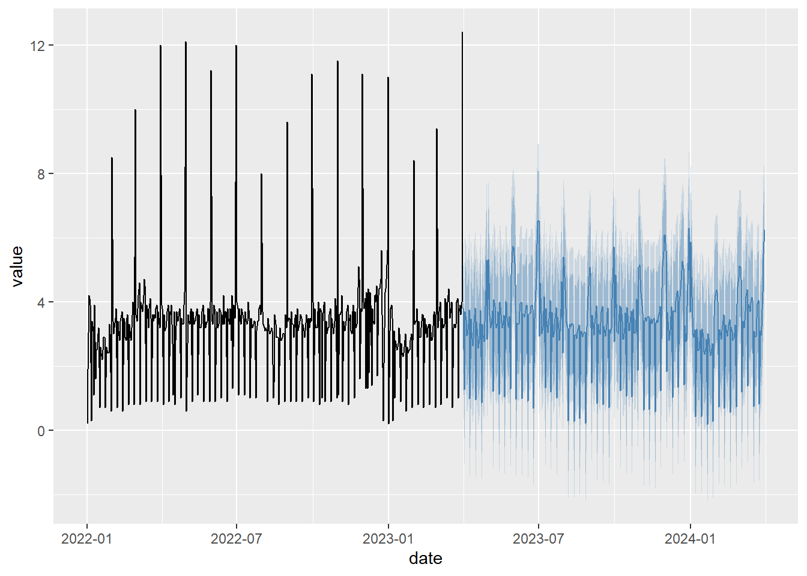
Figure 5.35: Predicción con doble estacionalidad usando series de Fourier, un regresor de calendario y el modelo ARIMA
Obsérvese que ahora la predicción reproduce los picos de fin de mes en el futuro. En resumen, la regresión armónica dinámica gestiona la doble estacionalidad combinando tres ingredientes, cada uno en su papel: series de Fourier con pocos armónicos para las estacionalidades (especialmente rentables en la de periodo largo), regresores indicadores para los efectos de calendario puntuales que ninguna curva suave puede captar, y la dinámica ARMA del modelo para la correlación a corto plazo. Frente a la descomposición STL, este enfoque produce intervalos de confianza coherentes con todo el modelo y permite incorporar regresores externos (festivos, promociones, etc.); a cambio, asume que el patrón estacional es fijo en el tiempo (los coeficientes de Fourier no cambian), mientras que STL permite que la estacionalidad evolucione. El diagnóstico de residuos (Ljung-Box) indica que aún queda algo de autocorrelación sin capturar, algo frecuente en series diarias largas con efectos de calendario adicionales (festivos, Semana Santa) que podrían incorporarse como nuevos regresores.
Cómo elegir entre las dos estrategias
Hemos visto dos formas de tratar la doble estacionalidad y ninguna es mejor en abstracto. Los criterios prácticos para decidir son estos:
| Situación | Estrategia preferible |
|---|---|
| El patrón estacional evoluciona con los años | STL: la deja cambiar; Fourier la fija |
| Hacen falta regresores externos (festivos, promociones) | Regresión armónica: los admite en la fórmula |
| Importan los intervalos de confianza | Regresión armónica: son coherentes con todo el modelo |
| Estacionalidad de periodo muy alto (diaria/anual) | Regresión armónica: pocos armónicos bastan |
| Se busca entender la serie más que predecirla | STL: da los componentes por separado, listos para mirarlos |
La diferencia de fondo es que STL descompone y la regresión armónica modela. STL separa la serie en piezas y luego predice el resto; como trata la estacionalidad extraída como si fuera exacta, sus intervalos salen optimistas y su AIC no es comparable con el de un modelo ajustado sobre la serie completa. La regresión armónica mete la estacionalidad dentro del modelo, con lo que todo —coeficientes, intervalos, criterios de información— vive en el mismo marco y es comparable.
Cuando la decisión no esté clara, la forma honesta de zanjarla es la de siempre: comparar la capacidad predictiva de ambas con validación cruzada temporal sobre la serie original.
5.11 Predicción combinando STL y ARIMA
Los dos modelos anteriores, ETS y ARIMA, se ajustan directamente sobre la serie observada. Existe una tercera estrategia, muy útil en la práctica, que consiste en descomponer primero y predecir después: se separa la serie en tendencia, estacionalidad y ruido con STL, se predice únicamente la tendencia con un ARIMA y se le vuelve a añadir la estacionalidad.
El interés de este enfoque se aprecia sobre todo en las series erráticas: aquellas que tienen una tendencia clara a medio o largo plazo pero fluctúan de forma irregular de un periodo a otro. Aplicar un modelo directamente sobre la serie original produce en esos casos predicciones inestables, muy condicionadas por las últimas oscilaciones observadas; en cambio, la tendencia extraída por STL es una curva suave, y extrapolarla da una predicción mucho más estable. Con frecuencia, además, lo que realmente interesa no es el valor concreto de cada periodo, sino hacia dónde se dirige la serie.
El método, en cuatro pasos
- Descomponer la serie con STL en tendencia \(L_t\), estacionalidad \(S_t\) y remainder \(\mathcal{E}_t\).
- Predecir la tendencia con un modelo ARIMA. Al ser \(L_t\) una curva suave, el modelo extrapola el movimiento de fondo sin arrastrar las fluctuaciones del corto plazo.
- Replicar el último ciclo estacional observado a lo largo del horizonte de predicción. Si la serie no admite estacionalidad —por ejemplo, una serie anual—, este paso simplemente no añade nada.
- Combinar las dos fuentes de incertidumbre para construir el intervalo de confianza.
El punto 4 merece detenerse. El valor real de la serie es la suma de su descomposición y un ruido, de modo que hay dos incertidumbres independientes: el error proyectado por el ARIMA al predecir la tendencia, que crece con el horizonte, y la dispersión de la serie alrededor de su descomposición, medida por la desviación típica del remainder, que es aproximadamente constante. Al ser independientes, sus varianzas se suman:
\[ \sigma_{total}=\sqrt{\sigma_{ARIMA}^2+\sigma_{remainder}^2} \]
y el intervalo al 95% se obtiene como \(\hat y \pm 1.96\,\sigma_{total}\). Para el tramo ya observado no hay incertidumbre futura que representar, así que los límites coinciden con la propia predicción y la banda tiene anchura nula.
Todo el procedimiento está implementado en la función aedv_prediccion_stl_arima() del fichero utilidades.R. Recibe el tsibble con la serie, el horizonte h y, opcionalmente, las dos ventanas de regularidad de la descomposición que vimos al estudiar STL: ventana_tendencia (cuanto mayor, más lisa la tendencia) y ventana_estacionalidad (medida en ciclos; "periodic" fuerza un patrón estacional constante). La función detecta sola si la serie admite estacionalidad, de modo que el mismo código sirve para los dos casos, y devuelve el tsibble ampliado con las filas de la predicción y tres columnas nuevas: prediccion, lower y upper.
Una serie sin estacionalidad: el PIB de China
Empezamos por el caso más simple. Los datos proceden del Banco Mundial (PIB a precios corrientes, en miles de millones de dólares) y vienen en un fichero con los veinte países de mayor PIB, del que seleccionamos uno:
pib_china <- readRDS(url("https://ctim.es/AEDV/data/PIB_Paises.rds")) |> # 20 países
filter(country == "China") |> # nos quedamos con uno
select(year, gdp) |> # el país ya no hace falta como columna
as_tsibble(index = year)
pib_china |>
autoplot(gdp) + # serie anual
labs(x = "", y = "PIB (miles de millones de US$ corrientes)",
title = "PIB anual de China")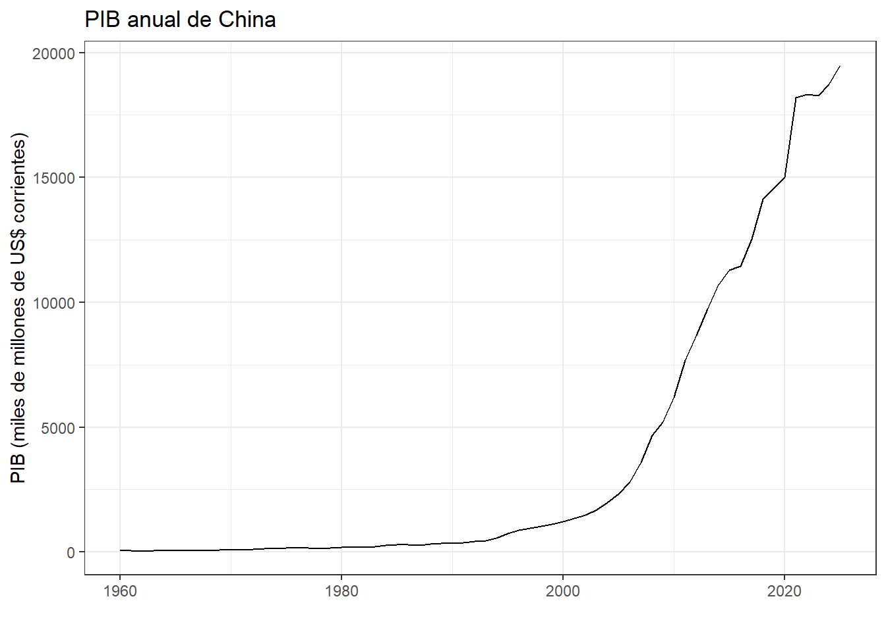
Figure 5.36: Evolución anual del PIB de China (Banco Mundial, US$ corrientes)
La serie crece de forma espectacular —de unos 47 miles de millones de dólares en 1960 a más de 19.000 en 2025—, pero ese crecimiento dista mucho de ser regular: hay retrocesos en las décadas de los sesenta y setenta, caídas a mediados de los ochenta asociadas a devaluaciones del yuan, un salto brusco en 2021 y un estancamiento en 2022-2023. Es exactamente el tipo de serie errática para el que este método resulta apropiado. Al ser anual, STL no puede estimar ninguna componente estacional y devuelve solo tendencia y remainder:
resultado_pib <- aedv_prediccion_stl_arima(pib_china, h = 10)
# Últimas filas: transición entre las observaciones y la predicción
resultado_pib |> tail(12)## # A tsibble: 12 x 5 [1Y]
## year gdp prediccion lower upper
## <dbl> <dbl> <dbl> <dbl> <dbl>
## 1 2024 18730. 19029. 19029. 19029.
## 2 2025 19498. 19824. 19824. 19824.
## 3 2026 NA 20613. 20038. 21187.
## 4 2027 NA 21399. 20811. 21986.
## 5 2028 NA 22185. 21548. 22821.
## 6 2029 NA 22971. 22236. 23705.
## 7 2030 NA 23757. 22875. 24639.
## 8 2031 NA 24543. 23471. 25615.
## 9 2032 NA 25329. 24031. 26627.
## 10 2033 NA 26115. 24562. 27668.
## 11 2034 NA 26901. 25068. 28735.
## 12 2035 NA 27687. 25551. 29823.Obsérvese que en las filas anteriores a la predicción los límites lower y upper coinciden con la prediccion, mientras que a partir del primer año predicho la banda se abre y se ensancha con el horizonte:
aedv_dibujar_stl_arima( # predicción + intervalo de confianza
resultado_pib,
titulo = "Predicción STL + ARIMA del PIB de China",
y_lab = "PIB (miles de millones de US$ corrientes)")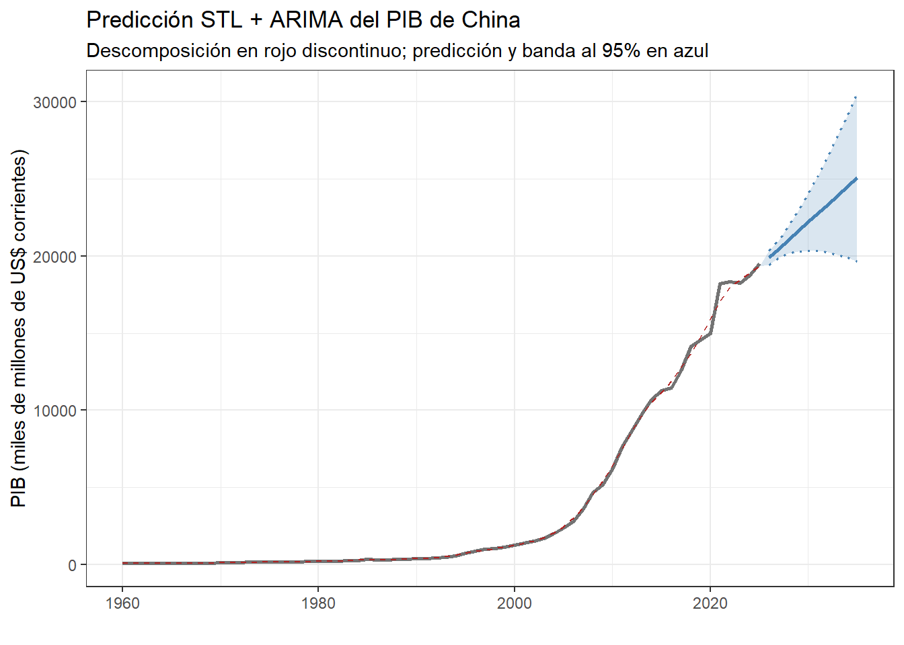
Figure 5.37: Predicción de la tendencia del PIB de China combinando STL y ARIMA
Compárese con lo que ocurre al ajustar un ARIMA directamente sobre esta misma serie, con la función aedv_prediccion_arima():
resultado_pib_arima <- aedv_prediccion_arima(pib_china, h = 10) # ARIMA directo, sin STL
aedv_dibujar_arima(
resultado_pib_arima,
titulo = "Predicción ARIMA del PIB de China",
y_lab = "PIB (miles de millones de US$ corrientes)")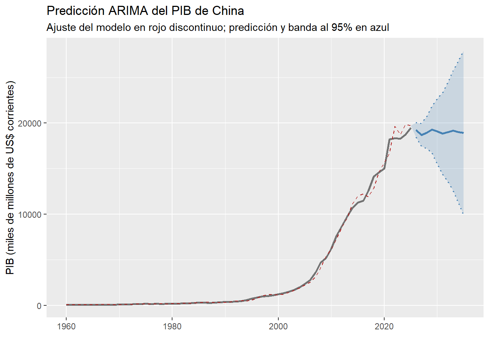
Figure 5.38: Predicción del PIB de China con un ARIMA ajustado directamente sobre la serie
Aquí se aprecia, y de forma muy llamativa, el problema que motiva todo este apartado: el ARIMA ajustado sobre la serie original arrastra las últimas fluctuaciones. Condicionado por el estancamiento de 2022-2023, predice para 2035 un PIB de unos 19 billones de dólares, es decir, por debajo del último valor observado, lo que resulta poco creíble en una economía que ha crecido de forma sostenida durante seis décadas. Su intervalo de confianza es además casi el doble de ancho. La versión anterior, al extrapolar la tendencia, responde de forma bastante más estable a la pregunta de hacia dónde se dirige el PIB. Otro tipo de estrategia que podemos usar es reducir el nº de periodos hacia atrás que usamos para calcular el modelo. Las funciones aedv_prediccion_arima() y aedv_prediccion_stl_arima() aceptan un argumento periodos_atras (por omisión Inf, toda la serie) que limita el ajuste del modelo a las observaciones más recientes: periodos_atras solo decide con qué tramo se entrena, y la serie que devuelve la función sigue siendo la completa, así que el gráfico conserva todo el histórico como contexto y el ajuste (la línea roja discontinua) aparece únicamente sobre el tramo con el que se ha entrenado. Lo aplicamos aquí, limitando el entrenamiento a los últimos 30 años, para excluir el arranque casi plano que tuvo el PIB de China hasta bien entrada la década de 1990:
resultado_pib_arima_30 <- aedv_prediccion_arima(pib_china, h = 10, periodos_atras = 30)
aedv_dibujar_arima(
resultado_pib_arima_30,
titulo = "Predicción ARIMA del PIB de China (últimos 30 años)",
y_lab = "PIB (miles de millones de US$ corrientes)")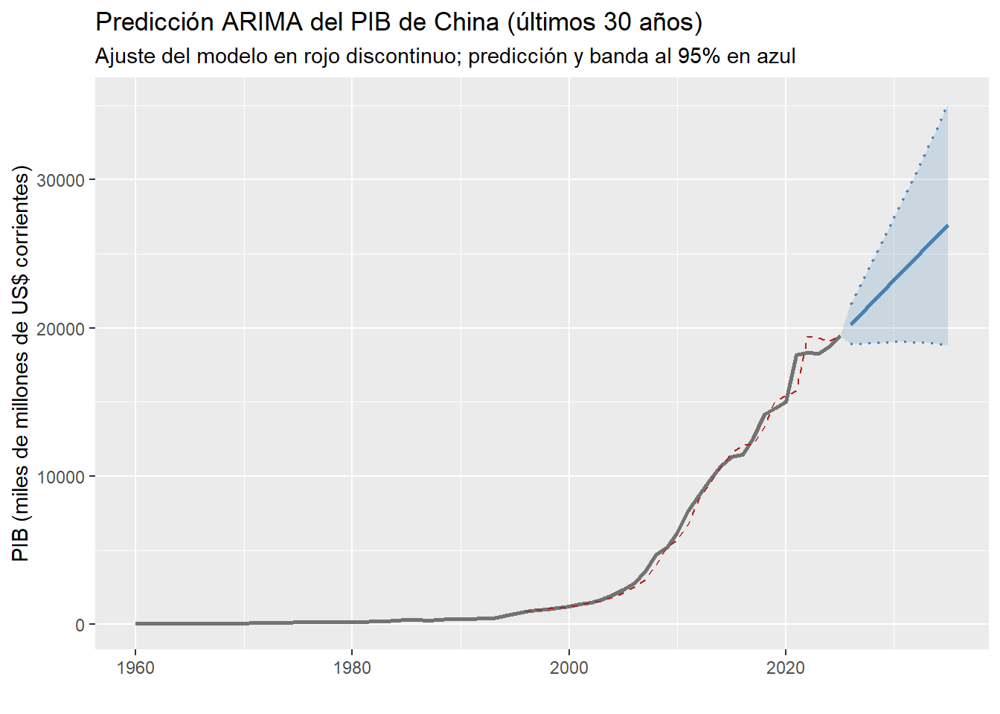
Figure 5.39: Predicción del PIB de China con un ARIMA ajustado solo sobre los últimos 30 años
El resultado cambia por completo. El modelo elegido ahora es un ARIMA(0,2,1), más simple que el ARIMA(2,2,2) que salía con la serie completa, y al no estar condicionado por el medio siglo de crecimiento moderado del principio predice para 2035 unos 27 billones de dólares: muy por encima del último valor observado y en línea con la trayectoria de las últimas décadas y confirma que buena parte del problema anterior no era del método en sí, sino de entrenarlo con datos que ya no representan el régimen de crecimiento actual de la economía china.
Una serie estacional: la llegada de pasajeros
El mismo código, sin cambio alguno, se aplica a una serie con estacionalidad marcada. Aquí STL sí estima la componente estacional, y la función replica su último ciclo completo a lo largo de los dos años predichos:
resultado_aeropuertos <- aedv_prediccion_stl_arima(istac_aeropuertos, h = 24) # 24 meses
aedv_dibujar_stl_arima(
resultado_aeropuertos,
titulo = "Predicción STL + ARIMA de la llegada de pasajeros a Canarias",
y_lab = "pasajeros")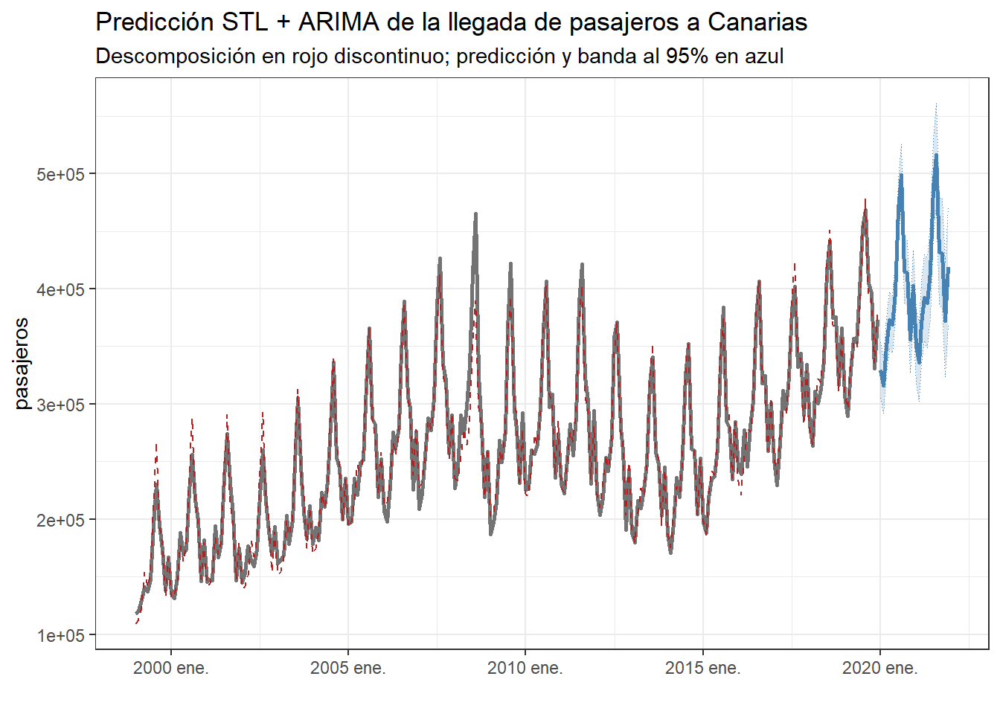
Figure 5.40: Predicción de la llegada de pasajeros combinando STL y ARIMA, con la estacionalidad replicada del último ciclo
A diferencia de las predicciones de ETS y ARIMA de las secciones anteriores, aquí la predicción central es suave: recoge el movimiento de fondo y el perfil estacional, pero no intenta reproducir las irregularidades de cada mes concreto.
La línea naranja es la que explica de dónde sale esa predicción: es la tendencia \(L_t\) de la descomposición STL, sin la estacionalidad todavía sumada. Se aprecia bien cómo la línea roja discontinua (la reconstrucción trend + estacionalidad) zigzaguea alrededor de ella siguiendo el ciclo anual, mientras que la naranja avanza suave. El tramo naranja discontinuo, a partir de 2022, es la extrapolación de esa tendencia con ARIMA; sumándole el último ciclo estacional replicado se obtiene la banda azul. En una serie sin estacionalidad, como el PIB de China de la sección anterior, esta línea no se dibuja: coincidiría exactamente con la roja y con la azul, porque en ese caso la predicción del método es la tendencia extrapolada.
Para apreciar esa diferencia conviene ver los dos métodos sobre la misma serie. La función aedv_prediccion_arima() de utilidades.R ajusta un ARIMA directamente sobre la serie y devuelve el resultado en el mismo formato que la función anterior, de modo que ambos se dibujan igual. Su función de dibujo, aedv_dibujar_arima(), añade además en rojo discontinuo el ajuste del modelo sobre el tramo observado, es decir, lo que el modelo dice que valía la serie en cada mes que ya conocemos:
resultado_arima <- aedv_prediccion_arima(istac_aeropuertos, h = 24) # ARIMA directo, sin STL
aedv_dibujar_arima(
resultado_arima,
titulo = "Predicción ARIMA de la llegada de pasajeros a Canarias",
y_lab = "pasajeros")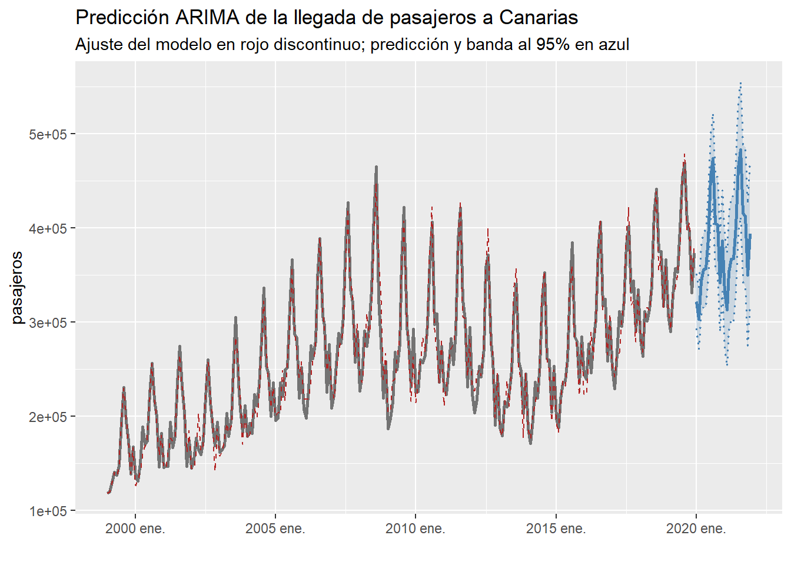
Figure 5.41: Predicción ARIMA de la llegada de pasajeros, con el ajuste del modelo sobre la serie observada en rojo discontinuo
La comparación entre las dos figuras es muy elocuente. El ajuste del ARIMA (línea roja) se pega a la serie observada y reproduce cada uno de sus picos y valles, incluidos los irregulares; su predicción prolonga ese mismo comportamiento. La curva de STL + ARIMA, en cambio, pasa por el centro de las oscilaciones sin intentar seguirlas una a una.
Ninguna de las dos es “la correcta”: son respuestas a preguntas distintas. Y conviene no dejarse impresionar por lo bien que el ajuste rojo sigue a la serie, porque eso se mide sobre datos que el modelo ya ha visto; lo que de verdad importa es cómo se comporta sobre datos nuevos. Esa renuncia deliberada de STL + ARIMA es lo que lo hace estable, y también lo que tiene un precio: en la sección siguiente compararemos los tres métodos con validación cruzada y veremos exactamente cuánto cuesta en capacidad predictiva.
Qué se gana y qué se pierde al predecir la tendencia
Este método no sustituye a ETS ni a ARIMA, sino que responde a una pregunta distinta. Al predecir la tendencia en lugar de la serie completa:
- Se gana estabilidad: la predicción no da bandazos por las últimas fluctuaciones, y los intervalos reflejan honestamente que el valor de un periodo concreto se aparta de la tendencia.
- Se pierde el detalle del corto plazo: la predicción no intentará anticipar el repunte o la caída de un mes concreto, porque esa información está justamente en el remainder, que aquí se trata como ruido.
Por eso conviene usarlo cuando interesa la dirección de fondo de la serie, y preferir ETS o ARIMA cuando lo que se necesita es la mejor predicción posible del siguiente valor.
5.12 Comparación de modelos
Ya disponemos de tres métodos de predicción —ETS, ARIMA y STL + ARIMA— y de la pregunta inevitable: ¿cuál de ellos elegimos? En esta sección los comparamos por lo bien que se ajustan a los datos históricos de la serie. Conviene adelantar la limitación de fondo, sobre la que volveremos al final: ajustarse bien a lo ya observado no garantiza predecir bien lo que aún no ha ocurrido.
El AICc compara modelos de la misma clase
Los criterios AIC, AICc y BIC que devuelve report() combinan el ajuste con una penalización por complejidad, y cuanto menores, mejor. fable se apoya en el AICc precisamente para eso: para elegir, dentro de una misma familia, qué combinación de parámetros conviene —qué \((p,d,q)(P,D,Q)_m\) para ARIMA, qué ETS(E,T,S) para el suavizado exponencial—.
Ahora bien, hay un límite importante que conviene tener claro: el AICc no permite comparar un ETS con un ARIMA. Aunque ambos se ajusten sobre la misma serie, pertenecen a clases de modelos distintas y su verosimilitud se calcula de forma diferente, de modo que sus AICc no están en la misma escala. La referencia del curso [HyAt21] lo dice explícitamente: el AICc sirve para seleccionar dentro de una clase, pero no entre ETS y ARIMA. Es la misma razón por la que tampoco puede compararse un modelo sobre \(y_t\) con otro sobre \(\log(y_t)\).
Y con STL + ARIMA el problema es aún más claro: ni siquiera hay un AICc que mirar. No es un modelo único ajustado por máxima verosimilitud sobre la serie, sino un procedimiento en dos etapas —descomponer con STL y ajustar un ARIMA a la tendencia—, de modo que la verosimilitud que podría calcularse sería la del ARIMA sobre la tendencia, no sobre la serie observada.
Comparar entre métodos: la desviación típica de los residuos
Si el AICc no sirve para comparar entre clases, necesitamos una medida que esté en las mismas unidades para los tres métodos. La más natural es la desviación típica de los residuos del ajuste, \(y_t - \hat y_t\), sobre el tramo observado.
Empezamos por el PIB de China:
# Ajustamos ETS y ARIMA juntos, para poder comparar su AICc con glance()
# (STL + ARIMA no tiene AICc, así que no entra en este ajuste)
ajustes_pib <- pib_china |> model(ETS = ETS(gdp), ARIMA = ARIMA(gdp))
aicc_pib <- glance(ajustes_pib)$AICc # en el mismo orden: ETS, ARIMA
# La sigma de ETS no tiene atajo: se calcula a mano con sus residuos (.resid).
# La de ARIMA y STL + ARIMA ya la calculan por dentro aedv_prediccion_arima()
# y aedv_prediccion_stl_arima(): basta con leerla con aedv_sigma() sobre
# resultado_pib_arima y resultado_pib, que ya se habían calculado antes en el
# capítulo — no hace falta volver a ajustar nada.
sigma_ets_pib <- ajustes_pib |> augment() |> as_tibble() |>
filter(.model == "ETS") |> pull(.resid) |> sd(na.rm = TRUE)
tibble(
Método = c("ETS", "ARIMA", "STL + ARIMA"),
AICc = c(aicc_pib, NA),
sigma = c(sigma_ets_pib, aedv_sigma(resultado_pib_arima), aedv_sigma(resultado_pib))
) |>
knitr::kable(digits = 1, caption = "Ajuste a los datos históricos del PIB de China")| Método | AICc | sigma |
|---|---|---|
| ETS | 849.6 | 448.8 |
| ARIMA | 960.4 | 392.3 |
| STL + ARIMA | NA | 293.0 |
Y repetimos exactamente lo mismo con la llegada de pasajeros:
ajustes_aeropuertos <- istac_aeropuertos |> model(ETS = ETS(pasajeros), ARIMA = ARIMA(pasajeros))
aicc_aeropuertos <- glance(ajustes_aeropuertos)$AICc
sigma_ets_aeropuertos <- ajustes_aeropuertos |> augment() |> as_tibble() |>
filter(.model == "ETS") |> pull(.resid) |> sd(na.rm = TRUE)
# resultado_arima y resultado_aeropuertos ya se calcularon antes en el capítulo
tibble(
Método = c("ETS", "ARIMA", "STL + ARIMA"),
AICc = c(aicc_aeropuertos, NA),
sigma = c(sigma_ets_aeropuertos, aedv_sigma(resultado_arima), aedv_sigma(resultado_aeropuertos))
) |>
knitr::kable(digits = 1, caption = "Ajuste a los datos históricos de la llegada de pasajeros")| Método | AICc | sigma |
|---|---|---|
| ETS | 6230.3 | 14826.1 |
| ARIMA | 5300.8 | 14256.7 |
| STL + ARIMA | NA | 12455.8 |
Las dos tablas ilustran bien por qué conviene no mezclar criterios. En el PIB de China, ETS tiene el AICc más bajo (850 frente a 960) pero peor desviación típica de los residuos (449 frente a 392): los dos criterios ordenan los modelos al revés, que es justo lo que cabe esperar de dos medidas que no están en la misma escala. En la llegada de pasajeros ambos coinciden en preferir ARIMA a ETS, pero eso no convierte la comparación de AICc entre clases en algo válido: coincidir no es lo mismo que ser comparable.
En las dos series, STL + ARIMA es el que menor desviación típica de los residuos presenta (293 y 12.456). Su sigma se construye igual que el intervalo de confianza de la predicción (sección 5.11): combina, sumando varianzas, el residuo del ARIMA al ajustar la tendencia paso a paso con la dispersión del remainder. Con eso en mente, conviene leer el dato con cuidado, porque los residuos de los tres métodos no miden exactamente lo mismo: en ETS y ARIMA son errores de predicción a un paso sobre la serie observada —lo que el modelo habría dicho del periodo siguiente sin conocerlo—, mientras que en STL + ARIMA son la combinación de ese mismo tipo de error, pero aplicado a la tendencia, y el remainder de una descomposición que ha visto toda la serie. La tendencia que se ajusta ya viene suavizada con información de toda la serie —pasado y futuro—, así que STL parte con una ventaja estructural en esta comparación, y de ahí que el resultado no deba tomarse como prueba de que prediga mejor.
¿De dónde sale exactamente esa ventaja? Podemos comprobarlo con un experimento muy sencillo: repetir el ajuste de la llegada de pasajeros con el mismo método, pero obligando al ciclo estacional a repetirse idéntico todos los años con ventana_estacionalidad = "periodic", que es como tratan la estacionalidad ETS y ARIMA:
# Mismo método y misma serie, pero con el ciclo estacional FIJO. Su sigma,
# igual que antes, se lee directamente con aedv_sigma(): no hace falta
# recalcularla a mano.
resultado_aeropuertos_periodic <- aedv_prediccion_stl_arima(
istac_aeropuertos, h = 24, ventana_estacionalidad = "periodic")
tibble(
Estacionalidad = c("Evolutiva (por defecto)", "Fija (\"periodic\")"),
sigma = c(aedv_sigma(resultado_aeropuertos), aedv_sigma(resultado_aeropuertos_periodic))
) |>
knitr::kable(digits = 1,
caption = "STL + ARIMA sobre la llegada de pasajeros, con estacionalidad evolutiva y fija")| Estacionalidad | sigma |
|---|---|
| Evolutiva (por defecto) | 12455.8 |
| Fija (“periodic”) | 14727.8 |
La diferencia es considerable: el error típico del ajuste pasa de 12.456 a 14.728, casi un 20 % peor. Y el dato relevante es la comparación con la tabla anterior: con la estacionalidad fija, STL + ARIMA deja de ser el mejor de los tres —queda por detrás de ARIMA (14.257), aunque sigue algo por delante de ETS (14.826)—. Es decir, su ventaja en el ajuste no procede de la descomposición en sí, sino de permitir que el patrón estacional cambie a lo largo de la serie, algo que las llegadas a Canarias efectivamente hacen a lo largo de veinte años.
La ventaja propia de STL + ARIMA: una estacionalidad que evoluciona
El experimento anterior tiene una lectura de fondo que conviene retener: STL + ARIMA aporta algo que ni ETS ni ARIMA estacional ofrecen con la misma flexibilidad, y es que el patrón estacional puede cambiar a lo largo de la serie. La descomposición STL estima la estacionalidad localmente, y el parámetro ventana_estacionalidad gobierna cuánto se le permite evolucionar: cuanto menor es la ventana, más libremente cambia el ciclo de un año a otro. Con "periodic" esa libertad desaparece por completo y el ciclo se repite idéntico, que es el comportamiento más parecido al de los otros dos métodos.
Por eso, en una serie cuyo perfil estacional se ha ido transformando con los años —cambios en los hábitos de viaje, en el calendario laboral o en la estructura de la demanda—, la elección de ventana_estacionalidad no es un detalle técnico: es la decisión de cuánto pasado estacional se considera todavía válido. Y como acabamos de ver, mueve el ajuste lo suficiente como para cambiar qué método parece el mejor.
Tabla comparativa de los tres métodos
La siguiente tabla resume las diferencias principales entre los métodos de predicción estudiados:
| Aspecto | ETS | ARIMA | STL + ARIMA |
|---|---|---|---|
| Tendencia | Lineal, con posible amortiguamiento | Capturada por derivadas (d, D) | Extraída por STL y extrapolada con ARIMA |
| Uso del pasado | Todos los valores (peso decreciente) | Cola finita de valores (p, P) | Todos los valores (vía la descomposición) |
| Estacionalidad (nº parámetros) | m parámetros iniciales | P + Q + 1 parámetros | uno: la regularidad con que se replica el último ciclo |
| Estacionalidad alta (m grande) | Costoso computacionalmente | Eficiente | Indiferente al valor de m |
| Doble estacionalidad | No nativa (requiere STL) | No nativa (requiere STL o Fourier) | Requiere MSTL |
| Fortaleza | Simple, robusto, pocos hiperparámetros | Flexible, eficiente con estacionalidad | Estable en series erráticas; separa señal de ruido |
| Debilidad | Rígido para patrones complejos | Más complejo de interpretar | No anticipa el detalle del corto plazo |
Conviene recordar que los tres métodos no responden a la misma pregunta. ETS y ARIMA buscan la mejor predicción posible de cada valor concreto; STL + ARIMA predice el movimiento de fondo, renunciando de partida al detalle del corto plazo. Elegirlo tiene sentido cuando esa es la pregunta que interesa, o cuando la serie es tan errática que los otros dos se vuelven inestables.
Ajustarse bien no es predecir bien
Todo lo anterior mide cómo de bien reproduce cada método los datos que ya conoce, y esa es una información limitada: un modelo con muchos parámetros puede seguir la serie observada casi punto por punto y fallar estrepitosamente con datos nuevos (overfitting). Es la razón de ser de la penalización por complejidad del AICc, pero ni siquiera esa penalización mide la capacidad predictiva de forma directa.
Para responder a la pregunta que de verdad importa —cuál de los tres predice mejor lo que todavía no ha ocurrido— hace falta evaluarlos sobre datos que no han visto durante el ajuste. Eso es exactamente lo que hace la validación cruzada temporal de la sección siguiente, y es también el método que recomienda [HyAt21] para comparar ETS con ARIMA.
5.13 Validación cruzada temporal
Los indicadores AIC, AICc y BIC de la sección anterior miden la calidad del ajuste del modelo a los datos conocidos, pero no nos dicen directamente cómo se comportará el modelo al predecir datos que no ha visto. Para evaluar la capacidad predictiva real de un modelo utilizamos la validación cruzada temporal (time series cross-validation). La idea es sencilla: se entrena el modelo con una porción de la serie (que llamamos pliegue), se predicen los siguientes \(h\) valores, se comparan con los valores reales observados y se repite el proceso avanzando en el tiempo. tsibble ofrece dos formas de construir esos conjuntos de entrenamiento sucesivos:
stretch_tsibble()genera una ventana creciente (expanding window): anclada al inicio de la serie, en cada paso incorpora observaciones nuevas conservando todo el pasado, de modo que cada modelo se entrena con más datos que el anterior. Se controla con.init(tamaño inicial) y.step(avance).slide_tsibble()genera una ventana deslizante (rolling window) de tamaño fijo: en cada paso avanza descartando las observaciones más antiguas, de modo que el modelo siempre se entrena con la misma cantidad de datos (los más recientes). Se controla con.size(tamaño de la ventana) y.step.
La ventana creciente aprovecha todo el histórico disponible; la deslizante mantiene constante el tamaño de entrenamiento, lo que evita que las métricas de los distintos pliegues se vean afectadas por entrenar con más o menos datos, y resulta preferible cuando el pasado reciente representa mejor el comportamiento futuro.
La validación cruzada temporal requiere de series temporales suficientemente largas
Es importante tener en cuenta que el nº de pliegues posibles en la validación cruzada temporal es el nº de observaciones de la serie, menos el tamaño del pliegue, menos el horizonte de predicción, más 1 —el horizonte cuenta porque cada pliegue necesita, además de las observaciones de entrenamiento, \(h\) observaciones más para poder comparar la predicción con lo realmente ocurrido—. Para que los resultados tengan significancia estadística el nº de pliegues debe ser suficientemente grande. Por ejemplo, no tiene sentido hacer validación cruzada de una serie de datos anuales de 30 observaciones con un pliegue de 20 años (relativamente pequeño) y un horizonte de 5 años: solo quedarían \(30-20-5+1=6\) pliegues, muy pocos para sacar conclusiones relevantes. Además estos pliegues estarían muy correlacionados entre sí porque compartirían muchas observaciones. De hecho, la principal limitación de la aplicación de la validación cruzada temporal es que requiere de series largas, lo cual no se cumple en muchas situaciones reales.
Las métricas más habituales para medir la calidad de la predicción se construyen a partir de los errores de predicción a horizonte \(h\), cometidos al predecir desde cada origen (pliegue) \(t\):
\[ e_{t+h,t} = y_{t+h} - \hat{y}_{t+h,t}, \]
donde \(y_{t+h}\) es el valor realmente observado \(h\) periodos después de \(t\), y \(\hat{y}_{t+h,t}\) es la predicción de ese valor hecha con el modelo entrenado hasta \(t\) —es decir, usando solo información anterior al punto que se predice—. Fijado un horizonte \(h\), sea \(n_h\) el número de pliegues evaluados a ese horizonte:
El RMSE (Root Mean Squared Error) es la raíz del error cuadrático medio:
\[ \text{RMSE}(h) = \sqrt{\frac{1}{n_h}\sum_{t} e_{t+h,t}^{\,2}} = \sqrt{\frac{1}{n_h}\sum_{t} (y_{t+h}-\hat{y}_{t+h,t})^2}. \]
Al elevar los errores al cuadrado, penaliza más los errores grandes que los pequeños. Tiene las mismas unidades que la variable.
El MAE (Mean Absolute Error) es el error absoluto medio:
\[ \text{MAE}(h) = \frac{1}{n_h}\sum_{t} |e_{t+h,t}| = \frac{1}{n_h}\sum_{t} |y_{t+h}-\hat{y}_{t+h,t}|. \]
Promedia los errores en valor absoluto, por lo que es más robusto frente a valores extremos que el RMSE. También conserva las unidades de la variable. Siempre se cumple que \(\text{MAE}(h)\le \text{RMSE}(h)\).
El MAPE (Mean Absolute Percentage Error) es el error porcentual absoluto medio:
\[ \text{MAPE}(h) = \frac{100}{n_h}\sum_{t} \left|\frac{e_{t+h,t}}{y_{t+h}}\right| = \frac{100}{n_h}\sum_{t} \left|\frac{y_{t+h}-\hat{y}_{t+h,t}}{y_{t+h}}\right| \quad (\%). \]
Al expresar el error en porcentaje es adimensional, lo que permite comparar series de distinta escala. Un MAPE del 5% significa que, en promedio, la predicción se desvía un 5% del valor real. Como divide por \(y_{t+h}\), solo tiene sentido cuando la serie es estrictamente positiva y se dispara si algún \(y_{t+h}\) está próximo a cero.
El MASE (Mean Absolute Scaled Error), o error absoluto escalado medio, es la métrica que recomienda la referencia [HyAt21]. Escala el MAE a horizonte \(h\) dividiéndolo por el MAE del modelo trivial estacional que consiste en tomar como predicción el último valor anterior teniendo en cuenta la estacionalidad, es decir \(\hat y_t = y_{t-m}\).
\[ \text{MASE}(h) = \frac{\text{MAE}(h)}{\dfrac{1}{T-m}\displaystyle\sum_{t=m+1}^{T} |y_t - y_{t-m}|}. \]
Aquí \(m\) es el periodo estacional (\(m=1\) si la serie no tiene estacionalidad) y \(T\) el número de observaciones de entrenamiento. El denominador —el error del modelo trivial— no depende del horizonte \(h\): es el mismo para todos, porque se calcula una sola vez sobre toda la serie disponible. Al ser un cociente de errores es adimensional —permite comparar series de distinta escala, como el MAPE—, pero sin el problema de dividir por valores próximos a cero. Un \(\text{MASE}(h)<1\) indica que el modelo predice mejor que el trivial estacional a ese horizonte. Al basarse en errores absolutos, y no cuadrados, es más robusto que el RMSE.
Al interpretar el MASE hay que tener presente contra qué se está comparando, porque batir al modelo trivial estacional no cuesta lo mismo en todas las series. Su denominador es el error medio de la diferencia estacional \(y_t - y_{t-m}\), es decir, todo lo que la serie cambia de un ciclo al siguiente. En una serie con tendencia marcada, ese cambio es grande: el método trivial repite el ciclo anterior sin corregir el crecimiento, así que arrastra un error sistemático del tamaño del incremento anual. El denominador se dispara y cualquier modelo que capture la tendencia obtiene un MASE muy por debajo de 1, casi sin esfuerzo. En una serie sin tendencia clara, en cambio, el método trivial no comete ese error sistemático y su error se reduce prácticamente al ruido de la serie: el denominador es pequeño y bajar de 1 resulta mucho más difícil, porque hay poco margen que ganar más allá de lo impredecible.
De ahí que un mismo valor del MASE signifique cosas distintas según la serie: un 0.5 es un resultado excelente en una serie plana y bastante menos meritorio en una con fuerte crecimiento sostenido. El MASE compara modelos dentro de una misma serie con toda garantía —que es su uso principal—, pero al comparar su valor entre series conviene mirar antes qué tendencia tiene cada una.
El MdAE (Median Absolute Error), o error absoluto mediano, sustituye la media del MAE por la mediana:
\[ \text{MdAE}(h) = \operatorname{mediana}_{t}\bigl(|e_{t+h,t}|\bigr) = \operatorname{mediana}_{t}\bigl(|y_{t+h}-\hat{y}_{t+h,t}|\bigr). \]
Como la mediana ignora los valores extremos, el MdAE es insensible a los valores atípicos (outliers): unos pocos errores muy grandes no lo alteran, a diferencia del MAE o, sobre todo, del RMSE. Conserva las unidades de la variable. Existe también su versión porcentual, el MdAPE (mediana de \(|e_{t+h,t}/y_{t+h}|\)), robusta como el MdAE pero adimensional como el MAPE.
De la métrica por horizonte a la métrica global
Las fórmulas anteriores fijan un horizonte \(h\) y agregan sobre los distintos orígenes \(t\) (los pliegues) —es lo que se ve en la sección Métricas por horizonte de predicción, y lo que devuelve $bandas en aedv_cv_arima()/aedv_cv_stl_arima()—. Cuando en vez de eso se quiere una única métrica global, que resuma de un vistazo el comportamiento del modelo a todos los horizontes a la vez —lo que devuelve $metricas, y lo que aparece en las primeras tablas de esta sección—, basta con agregar también sobre \(h\): por ejemplo, el RMSE global es
\[ \text{RMSE} = \sqrt{\frac{1}{N}\sum_{t}\sum_{h} e_{t+h,t}^{\,2}}, \]
donde \(N\) es el número total de errores evaluados (pliegues por horizontes). MAE, MAPE, MASE y MdAE se agregan de la misma forma, sustituyendo la suma en \(t\) de sus fórmulas por una suma doble en \(t\) y en \(h\). El resultado es cómodo para comparar métodos de un vistazo, pero mezcla horizontes cortos y largos —cuyo error, como se verá, no es comparable— y por eso conviene complementarlo siempre con la vista por horizonte.
Vamos a aplicar la validación temporal cruzada a los métodos ARIMA y STL + ARIMA (para el método ETS se realizaría igual). utilidades.R trae una función de validación cruzada para cada una —aedv_cv_arima() y aedv_cv_stl_arima()—: reciben la serie, el horizonte y el tamaño del pliegue, y se encargan de generar los orígenes de predicción, entrenar el modelo en cada uno, predecir y calcular RMSE, MAE, MAPE, MASE y MdAE fuera de muestra —las cinco métricas de la sección anterior—, junto con el error de cada horizonte. El número de pliegues no se elige: se usan todos los orígenes que caben en la serie con ese tamaño de pliegue y ese horizonte, así que se deduce solo.
PIB de China: validación cruzada con ARIMA y STL + ARIMA
Empezamos por el PIB de China, la serie más errática de las dos. Usamos pliegues de 20 años, con un horizonte de 5 años:
cv_pib_arima <- aedv_cv_arima(pib_china, h = 5, tamano_pliegue = 20)
cv_pib_stl_arima <- aedv_cv_stl_arima(pib_china, h = 5, tamano_pliegue = 20)
bind_rows(
cv_pib_arima$metricas |> mutate(Método = "ARIMA", .before = 1),
cv_pib_stl_arima$metricas |> mutate(Método = "STL + ARIMA", .before = 1)
) |>
knitr::kable(digits = 2,
caption = "Validación cruzada del PIB de China (pliegues de 20 años, horizonte 5 años)")| Método | RMSE | MAE | MAPE (%) | MASE | MdAE |
|---|---|---|---|---|---|
| ARIMA | 1031.25 | 593.04 | 13.94 | 1.96 | 215.76 |
| STL + ARIMA | 1004.81 | 588.78 | 14.88 | 1.94 | 186.96 |
Con 66 años disponibles y un horizonte de 5 años, solo los primeros 61 pueden servir de origen de un pliegue completo —los últimos 5 no dejan sitio para predecir el horizonte entero—; con pliegues de 20 años avanzando de uno en uno, caben 42 pliegues. Estos pliegues están muy solapados entre sí y por tanto sus errores están correlacionados.
En los resultados obtenidos STL + ARIMA mejora a ARIMA en cuatro de las cinco métricas —RMSE (1.005 frente a 1.031), MAE (589 frente a 593), MASE (1.94 frente a 1.96) y MdAE (187 frente a 216)— y solo pierde en MAPE (14.9 % frente a 13.9 %). En esta serie, durante los primeros años el PIB se mueve casi plano y después cambia de tendencia bruscamente el resto del periodo, eso dificulta que los modelos se adapten bien y en los primeros años, donde el PIB se mueve plano, el modelo trivial, donde simplemente se replica el valor del año anterior, funciona muy bien, por ello el MASE es mayor que uno lo cual indica que ARIMA y STL+ARIMA no consiguen mejorar la media de la predicción a un horizonte de 5 años respecto al modelo trivial.
Llegada de pasajeros: validación cruzada con ARIMA y STL + ARIMA
Repetimos el proceso con la serie estacional. Usamos pliegues de 120 meses (10 años) que avanzan mes a mes, con un horizonte de 12 meses:
cv_aeropuertos_arima <- aedv_cv_arima(istac_aeropuertos, h = 12, tamano_pliegue = 120)
cv_aeropuertos_stl_arima <- aedv_cv_stl_arima(istac_aeropuertos, h = 12, tamano_pliegue = 120)
bind_rows(
cv_aeropuertos_arima$metricas |> mutate(Método = "ARIMA", .before = 1),
cv_aeropuertos_stl_arima$metricas |> mutate(Método = "STL + ARIMA", .before = 1)
) |>
knitr::kable(digits = 2,
caption = "Validación cruzada de la llegada de pasajeros (pliegues de 120 meses, horizonte 12 meses)")| Método | RMSE | MAE | MAPE (%) | MASE | MdAE |
|---|---|---|---|---|---|
| ARIMA | 22273.36 | 17505.17 | 6.47 | 0.77 | 14329.41 |
| STL + ARIMA | 23919.00 | 18693.91 | 6.90 | 0.82 | 15260.09 |
Con 252 observaciones mensuales y un horizonte de 12 meses, solo los primeros 240 pueden servir de origen de un pliegue completo; con pliegues de 120 meses avanzando de uno en uno —el máximo detalle posible, igual que con el PIB de China—, caben 121 pliegues. Siguen muy solapados entre sí: dos pliegues consecutivos comparten 119 de sus 120 meses de entrenamiento, así que sus errores están correlacionados y el tamaño muestral efectivo es bastante menor que el número de pliegues sugiere. Conviene tenerlo presente al leer las métricas: diferencias pequeñas no deben tomarse como concluyentes.
Aquí el resultado sí es limpio: ARIMA gana en las cinco métricas (RMSE 22.273 frente a 23.919, MAE 17.505 frente a 18.694, MAPE 6.47 % frente a 6.90 %, MASE 0.77 frente a 0.82, MdAE 14.329 frente a 15.260) y, a diferencia del PIB de China, los dos métodos bajan de MASE = 1: ambos predicen mejor que repetir el valor del mismo mes del año anterior. La diferencia con la serie anterior encaja con lo que ya se explicó al presentar STL + ARIMA: al predecir la tendencia y replicar el ciclo estacional, este método renuncia deliberadamente a las irregularidades de cada mes, y esa renuncia se paga en una serie donde ARIMA sí consigue seguirlas sin desestabilizarse. No es un mal resultado para STL + ARIMA que sigue bastante por debajo del umbral trivial.
Importante: En la validación cruzada temporal, a diferencia de la validación cruzada habitual en machine learning, nunca se debe usar información del futuro para entrenar. Por eso la ventana de entrenamiento siempre avanza hacia adelante y nunca incluye datos posteriores al punto de predicción.
Métricas por horizonte de predicción
Hay que tener presente un matiz importante: las métricas de las tablas anteriores resumen en un único número los errores de todos los horizontes de predicción mezclados. Pero el error de predicción no se distribuye igual a corto que a largo plazo: al alejarnos en el tiempo la incertidumbre se acumula y el error tiende a crecer. Promediar los horizontes proporciona una comparación global cómoda, pero oculta esa estructura. Para verla no hace falta recalcular nada: aedv_cv_arima() y aedv_cv_stl_arima() ya devuelven el MASE por horizonte en $bandas, así que basta con leerlo directamente para las dos series:
bind_rows(
cv_pib_arima$bandas |> mutate(Método = "ARIMA"),
cv_pib_stl_arima$bandas |> mutate(Método = "STL + ARIMA")
) |>
ggplot(aes(x = hh, y = mase, color = Método)) +
# línea de referencia en MASE = 1: umbral frente a la predicción trivial
geom_hline(yintercept = 1, linetype = "dashed", color = "grey50") +
geom_line() +
geom_point() +
scale_x_continuous(breaks = 1:5) +
labs(x = "Horizonte de predicción (años)", y = "MASE", color = "Método")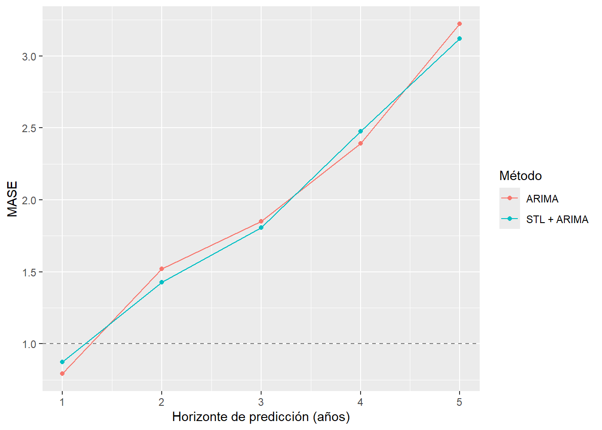
Figure 5.42: MASE de la validación cruzada por horizonte de predicción del PIB de China (de 1 a 5 años)
bind_rows(
cv_aeropuertos_arima$bandas |> mutate(Método = "ARIMA"),
cv_aeropuertos_stl_arima$bandas |> mutate(Método = "STL + ARIMA")
) |>
ggplot(aes(x = hh, y = mase, color = Método)) +
geom_hline(yintercept = 1, linetype = "dashed", color = "grey50") +
geom_line() +
geom_point() +
scale_x_continuous(breaks = 1:12) +
scale_y_continuous(breaks = scales::breaks_width(0.1)) + # ticks del eje Y cada 0.1
labs(x = "Horizonte de predicción (meses)", y = "MASE", color = "Método")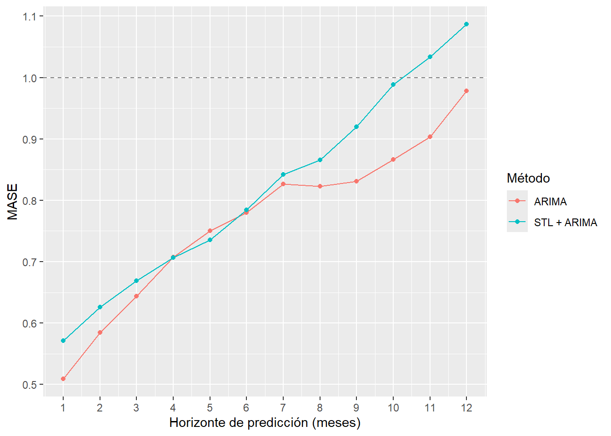
Figure 5.43: MASE de la validación cruzada por horizonte de predicción de la llegada de pasajeros (de 1 a 12 meses)
En el PIB de China las dos curvas crecen deprisa y se cruzan varias veces: ARIMA es mejor al primer año (0.79 frente a 0.87), STL + ARIMA pasa por delante en el segundo y el tercer año, ARIMA vuelve a adelantarse en el cuarto y STL + ARIMA cierra mejor a cinco años (3.12 frente a 3.22). Ninguno de los dos domina en todo el rango, que es justo lo que ya sugería lo ajustado del resultado global de la tabla.
En la llegada de pasajeros el patrón es distinto, y es el que ya anticipaba la sección sobre STL + ARIMA: en el tramo corto (h = 1 a 3) las dos curvas están próximas, pero a partir de h = 7 STL + ARIMA se despega hacia arriba y termina cruzando el umbral en h = 11, mientras que ARIMA se mantiene por debajo en los doce horizontes. La razón está en el método: la estacionalidad de STL + ARIMA se obtiene replicando el último ciclo observado, de modo que cuanto más lejos se predice, más probable es que el patrón estacional real ya no coincida con el del último año; y a eso se suma el error acumulado al extrapolar la tendencia. Es la misma conclusión de antes, ahora vista horizonte a horizonte: STL + ARIMA compite bien a corto plazo y pierde terreno según se aleja la predicción.
Predicción a partir de la validación cruzada temporal con intervalos de confianza no paramétricos por horizonte
La predicción hacia el futuro a partir de la validación cruzada temporal se realiza aplicando los modelos al último pliegue disponible. Los intervalos de confianza se estiman a partir de los errores de predicción por horizonte. La idea es tomar, de forma empírica, para cada horizonte \(h\), los cuantiles empíricos de los errores \(e_{t+h,t}\) observados en los distintos pliegues —fijado \(h\), variando el origen \(t\)—. El intervalo no paramétrico al 95 % para la predicción a horizonte \(h\) hecha desde el último origen disponible, \(T\), es entonces
\[ \bigl[\;\hat y_{T+h,T} + q_{0.025}(e_{t+h,t}),\;\; \hat y_{T+h,T} + q_{0.975}(e_{t+h,t})\;\bigr], \]
donde \(q_{0.025}\) y \(q_{0.975}\) son los percentiles 2.5 y 97.5 de los errores a ese horizonte. A diferencia del intervalo paramétrico, este no asume normalidad y adapta su anchura —e incluso su asimetría— a los errores realmente cometidos al aplicar la misma técnica en el pasado.
Las funciones aedv_cv_arima() y aedv_cv_stl_arima() calculan estos cuantiles por defecto (banda = "empirica"), así que las cuatro validaciones cruzadas que ya se han hecho —cv_pib_arima/cv_pib_stl_arima para el PIB de China, cv_aeropuertos_arima/cv_aeropuertos_stl_arima para la llegada de pasajeros— sirven tal cual, sin repetirlas. Es importante observar que, para ser coherentes con la estructura de la validación cruzada utilizada, las predicciones se deben calcular a partir del último pliegue tomando como parámetro periodos_atras el tamaño de los pliegues.
arima_pib_5 <- aedv_prediccion_arima(pib_china, h = 5, periodos_atras = 20)
pib_no_parametrico <- aedv_aplicar_bandas_cv(arima_pib_5, cv_pib_arima$bandas)
aedv_dibujar_arima(
pib_no_parametrico,
titulo = "Predicción ARIMA del PIB de China (banda no paramétrica)",
y_lab = "PIB (miles de millones de US$ corrientes)")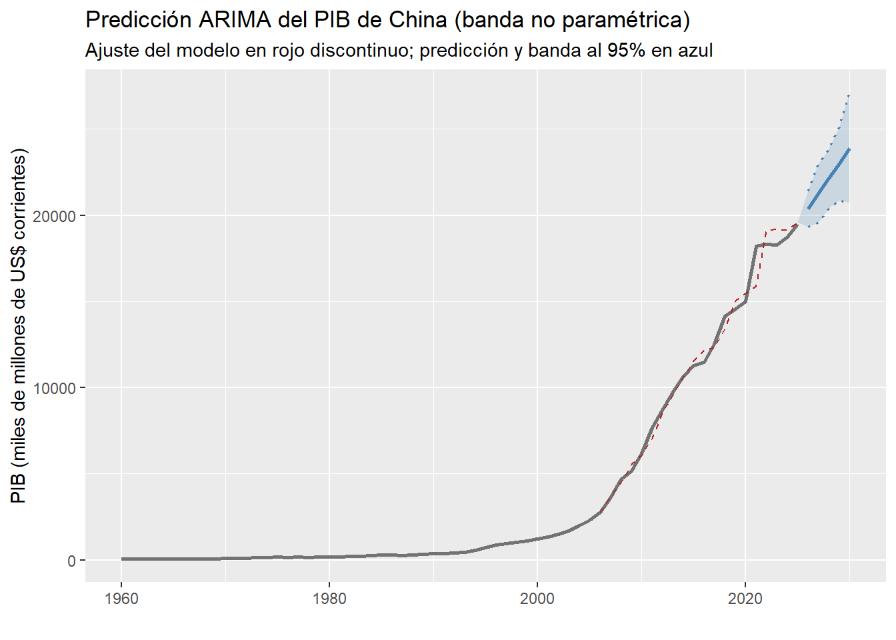
Figure 5.44: Predicción ARIMA del PIB de China a 5 años (entrenada con el último pliegue), con intervalo de confianza no paramétrico
stl_pib_5 <- aedv_prediccion_stl_arima(pib_china, h = 5, periodos_atras = 20)
stl_pib_no_parametrico <- aedv_aplicar_bandas_cv(stl_pib_5, cv_pib_stl_arima$bandas)
aedv_dibujar_stl_arima(
stl_pib_no_parametrico,
titulo = "Predicción STL + ARIMA del PIB de China (banda no paramétrica)",
y_lab = "PIB (miles de millones de US$ corrientes)")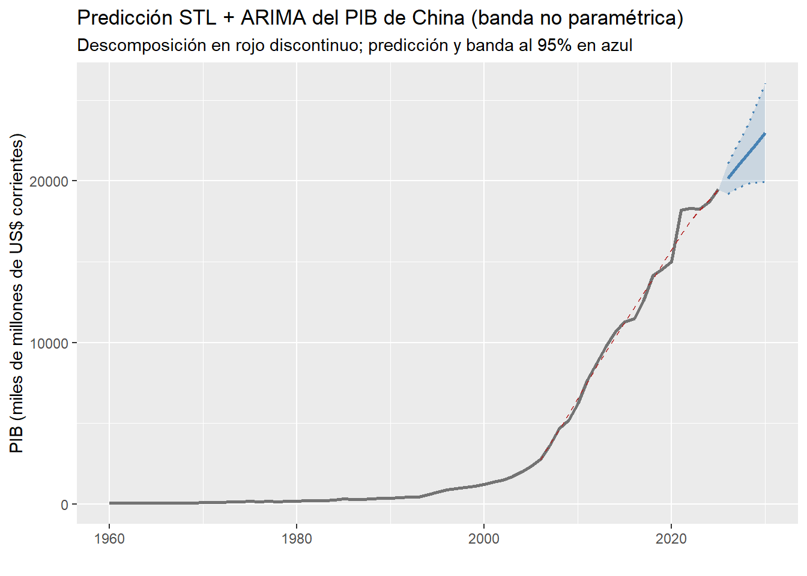
Figure 5.45: Predicción STL + ARIMA del PIB de China a 5 años (entrenada con el último pliegue), con intervalo de confianza no paramétrico
arima_h12 <- aedv_prediccion_arima(istac_aeropuertos, h = 12, periodos_atras = 120)
arima_no_parametrico <- aedv_aplicar_bandas_cv(arima_h12, cv_aeropuertos_arima$bandas)
aedv_dibujar_arima(
arima_no_parametrico,
titulo = "Predicción ARIMA de la llegada de pasajeros (banda no paramétrica)",
y_lab = "pasajeros")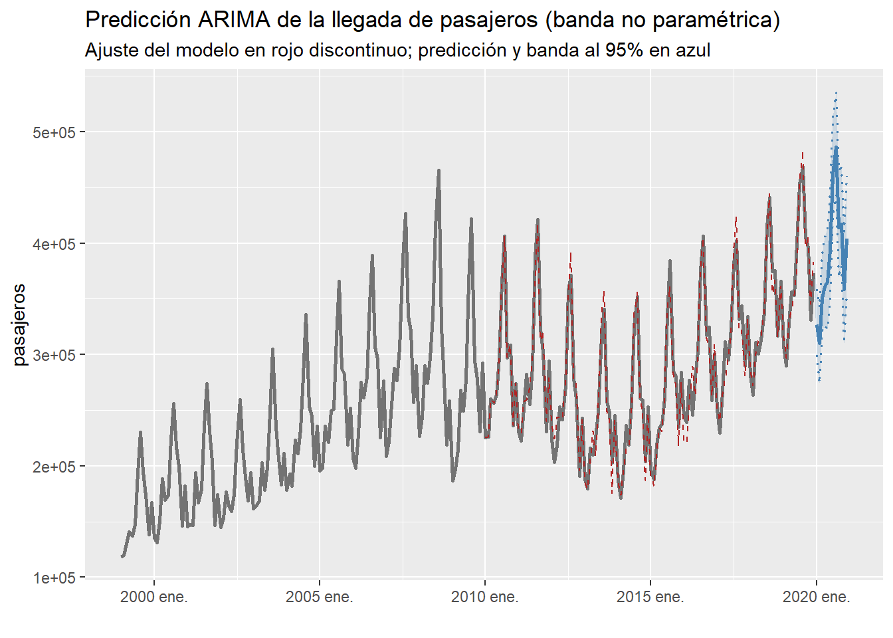
Figure 5.46: Predicción ARIMA de la llegada de pasajeros a 12 meses (entrenada con el último pliegue), con intervalo de confianza no paramétrico
stl_h12 <- aedv_prediccion_stl_arima(istac_aeropuertos, h = 12, periodos_atras = 120)
stl_no_parametrico <- aedv_aplicar_bandas_cv(stl_h12, cv_aeropuertos_stl_arima$bandas)
aedv_dibujar_stl_arima(
stl_no_parametrico,
titulo = "Predicción STL + ARIMA de la llegada de pasajeros (banda no paramétrica)",
y_lab = "pasajeros")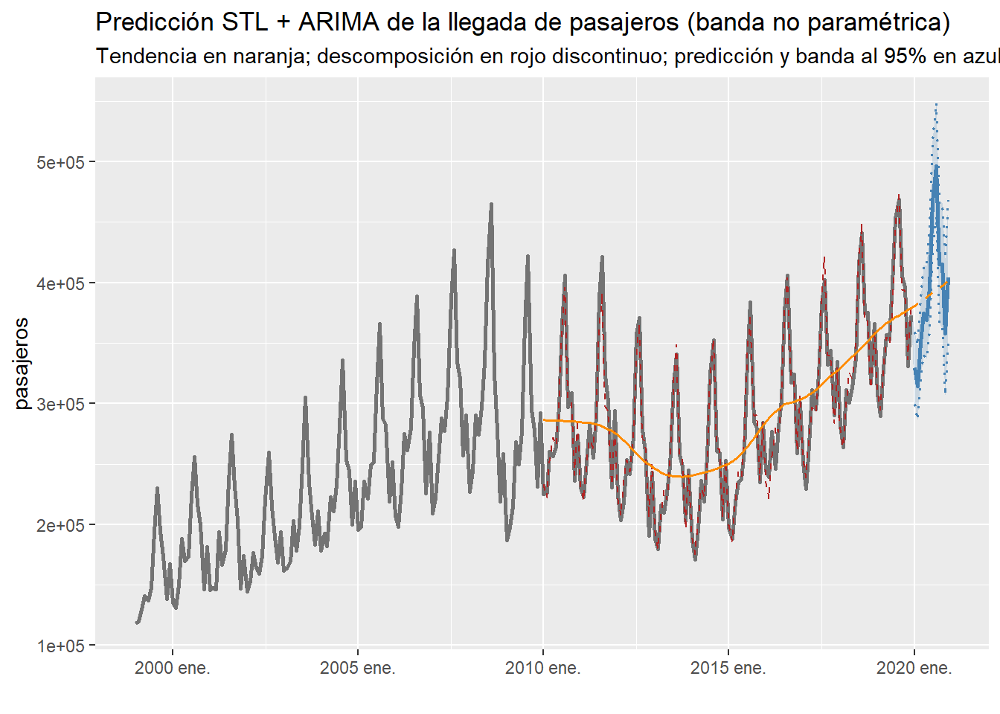
Figure 5.47: Predicción STL + ARIMA de la llegada de pasajeros a 12 meses (entrenada con el último pliegue), con intervalo de confianza no paramétrico
En los cuatro casos la banda azul ya no es el intervalo paramétrico normal del modelo, sino los cuantiles empíricos del error observados por horizonte en la validación cruzada: no asume normalidad y puede resultar asimétrica si lo son los errores realmente cometidos. Y como la predicción se entrena con periodos_atras, el ajuste (la línea roja discontinua, o la descomposición en el caso de STL + ARIMA) solo cubre el último pliegue: el resto del histórico, en gris, sigue ahí como contexto, pero ningún modelo lo ha visto.
Limitaciones predicción con validación cruzada
- Nº de pliegues: hacen falta series temporales largas que permitan disponer de un nº adecuado de pliegues para que tenga sentido calcular cuantiles de los errores por horizonte para la estimación de los intervalos de confianza no paramétricos. En los ejemplos mostrados, cada percentil 2.5/97.5 se estima con solo 42 errores en el PIB de China y con 121 en la llegada de pasajeros, que es un nº pequeño en ambos casos y por tanto hay que interpretar los intervalos de confianza obtenidos con cautela.
- Errores solapados. los pliegues de las validaciones cruzadas pueden compartir muchas de sus observaciones de entrenamiento, así que sus errores están muy correlacionados: el tamaño muestral efectivo es bastante menor que el número de pliegues, y no crece de forma proporcional a él.
- Mezcla de regímenes y de meses o años. Los errores a un mismo horizonte proceden de periodos distintos del calendario o de la serie; si el comportamiento de la serie cambió en el tiempo, el cuantil los promedia sin distinguirlos.
- Importancia del pasado reciente: la estrategia que hemos seguido de usar pliegues del mismo tamaño asume la hipótesis de que el pasado reciente determina mejor el futuro de la serie que todos los valores históricos.
En resumen, la técnica funciona bien sobre todo si disponemos de series temporales largas donde, en cada momento, el pasado reciente determina los valores futuros mejor que considerar el histórico de la serie completa.
5.14 Rellenar huecos en una serie temporal y sustituir datos anómalos
En ocasiones, hay huecos en las series temporales, es decir faltan datos en fechas intermedias o bien hay datos anómalos como es el caso de la llegada mensual de viajeros a los aeropuertos canarios durante el periodo de la pandemia provocada por la COVID-19. Para estudiar este asunto vamos a usar datos obtenidos a partir de una consulta al ISTAC:
Interpolar no es inventar datos: hay que documentarlo
Antes de rellenar nada conviene tener clara una distinción que se olvida con facilidad: los valores que vamos a generar no son observaciones. Son una reconstrucción que dependen del modelo de interpolación utilizado. Sirven para que los procedimientos que no admiten ausentes puedan ejecutarse, y para corregir outliers que pueden arrastrar a toda la serie, pero no tienen el mismo estatus que un dato medido.
De ahí dos obligaciones prácticas. La primera, documentar siempre qué se rellenó y con qué método, tanto en el código como en el informe: quien lea los resultados debe poder distinguir lo observado de lo reconstruido. La segunda, desconfiar en proporción al tamaño del periodo temporal a interpolar: no es lo mismo interpolar en algunas fechas sueltas aisladas que interpolar en amplios periodos de tiempo. En cualquier caso, es un ejercicio hipotético —responde a la pregunta de lo que pudiera haber pasado, no a lo que pasó—.
istac_aeropuertos2 <- read_csv("https://ctim.es/AEDV/data/istac_aeropuertos2.csv") |> # datos del ISTAC
as_tibble() |>
mutate(mes = yearmonth(as.Date(paste0("01/",mes),format="%d/%m/%Y"))) |> # a fecha mensual
as_tsibble(index = mes,key=aeropuerto) # una serie por aeropuerto
istac_aeropuertos2 |>
autoplot()
observamos que hay un periodo de tiempo muy afectado por la pandemia, para estudiar cómo hubiesen sido las series temporales si no hubiese existido la pandemia vamos a proceder en primer lugar a eliminar de las series los datos afectados y posteriormente cubrir, con la función fill_gaps, los huecos creados con valores NA:
istac_aeropuertos2 <- istac_aeropuertos2 |>
filter(mes>=as.Date("2022-06-01") | mes<as.Date("2020-02-01") ) |> # quitamos el periodo COVID
fill_gaps() # el hueco creado queda como NA
istac_aeropuertos2 |>
autoplot()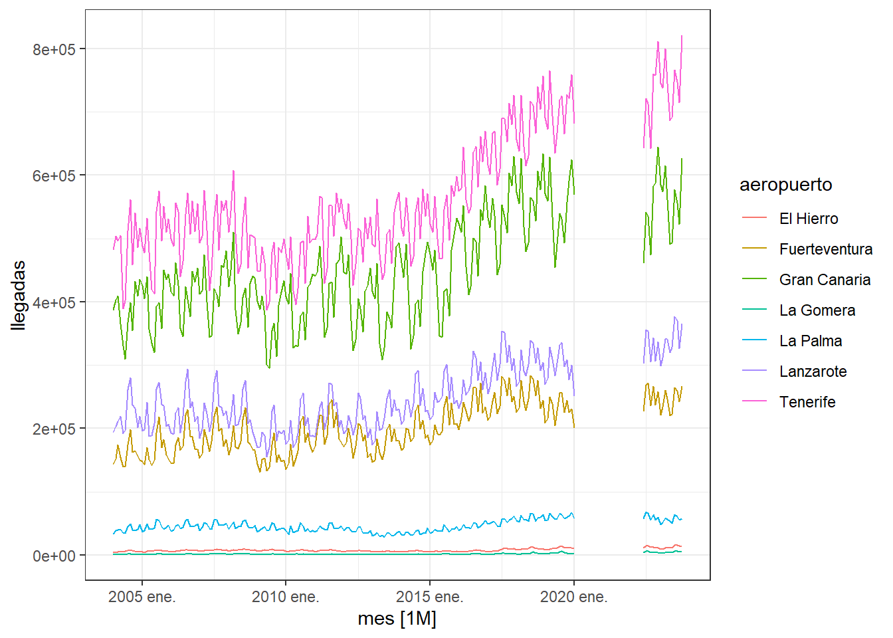
como se aprecia en la gráfica anterior, ya no aparecen los datos anómalos en las series temporales. Ahora lo que haremos es rellenar los huecos creados construyendo un modelo ARIMA con los datos existentes e interpolando los valores ausentes con el modelo ARIMA :
istac_aeropuertos2 |>
model(ARIMA(llegadas)) |> # ajustamos un ARIMA
interpolate(istac_aeropuertos2) |> # rellenamos los NA con el modelo
autoplot() +
labs(title="Rellenado de huecos usando un modelo ARIMA")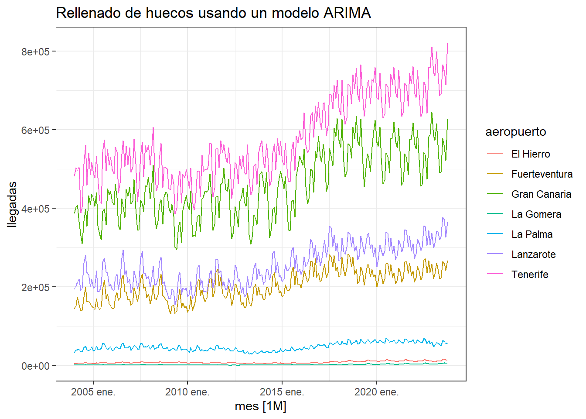
Una manera más sencilla de rellenar los huecos es utilizar la función na.approx que utiliza interpolación lineal para rellenar los huecos dentro de la serie. Este método básico funciona bien cuando los huecos son pequeños y no hay estacionalidad. Si lo aplicamos a la serie anterior observamos que el resultado es mucho peor que rellenar usando un modelo ARIMA.
istac_aeropuertos2 |>
group_by(aeropuerto) |> # interpolamos cada serie por separado
mutate(llegadas=na.approx(llegadas,na.rm=FALSE)) |> # interpolación lineal
ungroup() |>
autoplot() +
labs(title="Rellenado de huecos con interpolación lineal")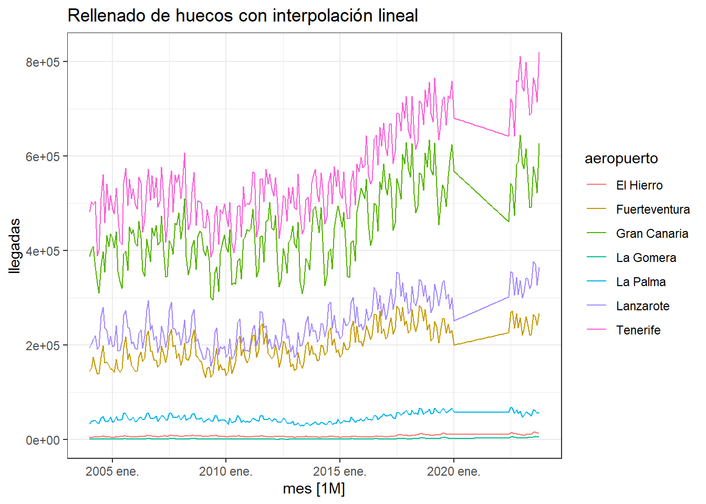
Algunos procedimientos, como la descomposición STL o ETS, no admiten valores faltantes y, por tnato, es necesario rellenar los huecos de las series temporales. A continuación se pone, para el total de llegadas a Canarias, el resultado de la descomposición STL usando ARIMA o interpolación lineal para rellenar los huecos. Observamos que en el caso de ARIMA la interpolación es tan perfecta que resulta irreal, lo cual detectamos porque los residuos son muy pequeños en la zona que hemos interpolado. Por el contrario al usar la interpolación lineal los residuos salen muy grandes debido a la mala calidad de la interpolación.
ts <- istac_aeropuertos2 |>
as_tibble() |>
group_by(mes) |> # sumamos todos los aeropuertos
summarise(llegadas=sum(llegadas)) |>
ungroup() |>
as_tsibble(index=mes)
ts |> model(ARIMA(llegadas)) |> # ajustamos un ARIMA
interpolate(ts) |> # rellenamos los NA con el modelo
model(STL(llegadas,robust = TRUE)) |> # descomponemos la serie ya completa
components() |>
autoplot() +
labs(title="STL con ARIMA para rellenar huecos")
ts |>
mutate(llegadas=na.approx(llegadas,na.rm=FALSE)) |> # interpolación lineal
model(STL(llegadas,robust = TRUE)) |> # descomponemos la serie ya completa
components() |>
autoplot() +
labs(title="STL con interpolación lineal para rellenar huecos")Cambiar la frecuencia de una serie
Una tarea vecina de la anterior, y muy habitual con datos propios, es cambiar la frecuencia de una serie: pasar de mensual a anual, de diaria a mensual, etc. No es lo mismo que rellenar huecos —ahí la frecuencia no cambiaba, solo faltaban valores—, sino agregar varios periodos en uno.
La operación se hace con index_by(), que es el equivalente de group_by() para el índice temporal de un tsibble: agrupa las observaciones según la nueva unidad de tiempo y, como todo agrupamiento, necesita que se le diga cómo resumir cada grupo. Esa elección no es un detalle técnico: para pasar de pasajeros mensuales a anuales se suma, pero para un precio o una temperatura lo razonable es la media, y para un stock, el último valor del periodo.
aeropuertos_anual <- istac_aeropuertos |>
index_by(anyo = ~ year(.)) |> # nueva unidad temporal: el año
summarise(pasajeros = sum(pasajeros), # los pasajeros del año son la suma de sus meses
meses = n()) # cuántos meses se han agregado
aeropuertos_anual |> head(4)## # A tsibble: 4 x 3 [1Y]
## anyo pasajeros meses
## <dbl> <dbl> <int>
## 1 1999 1890976 12
## 2 2000 2172842 12
## 3 2001 2245376 12
## 4 2002 2218688 12Al agregar hay que vigilar los periodos incompletos: si la serie mensual terminase a mitad de año, el último año agregado sumaría solo unos meses y aparecería artificialmente bajo, sin que nada lo advirtiera. Por eso hemos añadido la columna meses al resumen: permite comprobarlo de un vistazo.
## # A tsibble: 0 x 3 [?]
## # ℹ 3 variables: anyo <dbl>, pasajeros <dbl>, meses <int>En este caso la comprobación no devuelve ninguna fila, es decir, los 21 años están completos, y la serie anual es directamente comparable año a año. No es casualidad: al leer la tabla, al principio del capítulo, ya descartamos los registros TOTAL y el año 2020, incompleto por la pandemia. Conviene hacer siempre esta comprobación antes de dibujar o modelar la serie agregada, porque un año truncado se confunde a simple vista con una caída real de la variable.
Interpolación de un hueco con estacionalidad semanal y calendario ⚠️
En los ejemplos anteriores los huecos apenas tenían estructura fina que reconstruir. Veamos un caso más exigente con la serie diaria de comercio ine_comercio_diario, que combina estacionalidad semanal (más ventas los viernes y sábados), estacionalidad anual y el repunte de fin de mes. Vamos a borrar a propósito todos los datos de un mes intermedio (junio de 2022) y a reconstruirlos de modo que la interpolación respete la estacionalidad semanal (PDQ(period = 7)) y el repunte de fin de mes (a través del regresor de calendario fin_mes). Como conocemos los valores reales que hemos borrado, podremos juzgar la calidad de la interpolación comparándola con ellos.
interpolate() no aplica los regresores externos
El camino intuitivo —ajustar ARIMA(value ~ fin_mes + PDQ(period = 7)) y llamar directamente a interpolate()— no funciona aquí, por dos razones que conviene conocer: (1) interpolate() rellena únicamente la parte estocástica (ARIMA) del modelo y no suma a los huecos el efecto de los regresores externos, de modo que el pico de fin de mes no se coloca en el día que le corresponde; y (2) al interpolar la serie original —que sí contiene los picos mensuales— con un modelo de período 7, el último pico observado antes del hueco se propaga como un eco cada 7 días dentro del hueco. El resultado es el contrario del deseado: se pierde el pico real y aparecen picos semanales espurios.
La solución es separar el efecto de calendario del ARIMA: estimarlo, restarlo de la serie, interpolar la serie ya sin picos con un ARIMA puramente semanal —donde interpolate() sí se comporta bien— y volver a sumar el efecto en el día exacto.
# Regresor de calendario: 1 el último día de cada mes, 0 el resto
comercio <- ine_comercio_diario |>
mutate(fin_mes = as.integer(date == ceiling_date(date, "month") - days(1)))
# Borramos todos los valores de un mes intermedio (junio de 2022): hueco de NA
comercio_hueco <- comercio |>
mutate(value = if_else(year(date) == 2022 & month(date) == 6, NA_real_, value))
# Estimamos el efecto de fin de mes con un ARIMA semanal + regresor de calendario
fit_cal <- comercio_hueco |>
model(ARIMA(value ~ fin_mes + PDQ(period = 7)))
beta_fin_mes <- tidy(fit_cal) |> # tabla con TODOS los coeficientes (fin_mes + los del ARIMA)
filter(term == "fin_mes") |> # nos quedamos solo con la fila del regresor de calendario
pull(estimate) # y extraemos su valor estimado como número suelto
# Restamos el efecto de fin de mes de TODA la serie (también de los picos ya
# observados, para que la estacionalidad semanal no los propague)
comercio_adj <- comercio_hueco |>
mutate(value_adj = value - beta_fin_mes * fin_mes)
# Interpolamos la serie ya sin picos con un ARIMA semanal (sin regresores) y,
# como interpolate() descarta las demás columnas, reincorporamos fin_mes con un
# join; por último devolvemos el efecto de calendario en su día exacto
comercio_relleno <- comercio_adj |>
model(ARIMA(value_adj ~ PDQ(period = 7))) |>
interpolate(comercio_adj) |>
as_tibble() |>
left_join(as_tibble(comercio) |> select(date, fin_mes), by = "date") |>
mutate(value = value_adj + beta_fin_mes * fin_mes)
# Ventana alrededor del hueco para apreciar el detalle
en_ventana <- function(x) x |>
as_tibble() |>
filter(date >= as.Date("2022-05-01") & date <= as.Date("2022-07-31"))
ggplot() +
geom_line(data = en_ventana(comercio),
aes(date, value, color = "Real (borrado)")) +
geom_line(data = en_ventana(comercio_relleno),
aes(date, value, color = "Interpolado ARIMA")) +
scale_color_manual(name = NULL,
values = c("Real (borrado)" = "grey50",
"Interpolado ARIMA" = "firebrick")) +
labs(x = "", y = "Ventas diarias (% del mes anterior)")Figure 5.48: Reconstrucción con ARIMA (estacionalidad semanal y regresor de calendario) de un mes completo borrado de la serie diaria de comercio, comparada con los valores reales
Obsérvese que la interpolación con ARIMA reconstruye el patrón semanal (picos de viernes/sábado y valles de domingo) e incluso el repunte del último día del mes, gracias al regresor fin_mes, quedando muy próxima a los valores reales que habíamos borrado. Una interpolación lineal (na.approx) no podría lograrlo: trazaría una recta entre los extremos del hueco, ignorando por completo ambas estacionalidades y el efecto de calendario. No obstante, conviene recordar que, al tratarse de un hueco largo (un mes entero), la reconstrucción es la mejor conjetura del modelo, no un dato observado: será tanto menos fiable cuanto más se aparte el periodo borrado del comportamiento habitual (por una promoción, un festivo o un evento atípico que los regresores no recojan).
5.15 Guía práctica: cómo abordar una serie temporal
A título de resumen, presentamos aquí una guía práctica del análisis por fases de una serie temporal. Vamos formulando preguntas sobre la serie que llevan directamente a la acción que corresponde y a la sección donde se explica.
Fase 1 — Preparar los datos
Convertir la tabla a tsibble con la frecuencia temporal correcta. Usar fill_gaps() para rellenar con NA posibles fechas faltantes.
¿Hay valores atípicos? → Sí: convertirlos a
NA¿Hay datos ausentes (
NA) ? → Sí: interpolar (sección 5.14).¿Hay un cambio fuerte de comportamiento en el histórico —un escalón, un cambio de régimen, un tramo inicial plano—? → Sí: si nuestro interés es la predicción del futuro, quedarse solo con el último tramo homogéneo (parámetro
periodos_atrasde las funciones del curso). Un pasado que ya no representa a la serie empeora el modelo.
Fase 2 — Explorar y transformar
Dibujar la serie (autoplot) y estudiar su estructura con la ACF y gg_season / gg_subseries, etc.. Con eso a la vista:
¿La amplitud de las oscilaciones crece con el nivel (dinámica multiplicativa) y/o la serie debe mantenerse estrictamente positiva? → Sí: ajustar sobre
log(y).¿La serie debe permanecer dentro de un intervalo \([a,b]\) conocido? → Sí: usar la logit escalada.
fable deshace la transformación automáticamente al predecir.
Fase 3 — ¿Dónde se gestiona la estacionalidad?
¿No hay estacionalidad? → ETS o ARIMA directamente sobre la serie.
¿Hay al menos 2 ciclos estacionales completos? → No: no se puede modelar la estacionalidad.
¿Estacionalidad simple de periodo \(m\) moderado (\(m=7\) semanal, \(m=12\) mensual, \(m=4\) trimestral)? → dentro del modelo: ETS o ARIMA estacional.
¿Periodo \(m\) muy alto (\(m\approx365\) en datos diarios) o doble estacionalidad? → fuera del modelo (sección 5.10): descomposición STL (deja que la estacionalidad evolucione) o regresión armónica de Fourier con ARIMA (intervalos coherentes y admite regresores externos).
¿Hay eventos de calendario —festivos, fin de mes, promociones, huelgas, una pandemia— que ninguna estacionalidad suave capta? → Sí: añadir un regresor indicador (dummy) que vale 1 cuando ocurre el suceso y 0 el resto. Solo disponible en ARIMA con regresores, no en ETS.
Fase 4 — Elegir el modelo
Punto de partida siempre: ajustar ARIMA con
model().fableelige sola su configuración óptima (por AICc). la implementación enfablede ARIMA tiene la ventaja de que admite datos faltantes. El resultado de ARIMA se puede usar, si fuera necesario, para interpolar y poder usar ETS y STL que no admiten datos faltantes. Para dibujar el resultado:aedv_dibujar_prediccion().¿Las predicciones salen inestables o poco realistas, muy condicionadas por las últimas fluctuaciones? ¿O lo que interesa es el movimiento de fondo y no el valor de cada periodo? → Sí: usar STL + ARIMA (sección 5.11) ajustando, si es necesario, sus dos parámetros:
ventana_tendencia: subirla si la predicción hereda oscilaciones que no interesan; bajarla si la tendencia se queda demasiado plana.ventana_estacionalidad: cuánto puede evolucionar el patrón estacional, con"periodic"como caso extremo que lo fija por completo.
Funciones del curso: aedv_prediccion_arima() y aedv_prediccion_stl_arima() calculan la predicción con el mismo formato de salida, y aedv_dibujar_arima() y aedv_dibujar_stl_arima() la dibujan. Las dos aceptan periodos_atras (fase 1) para entrenar solo con el último tramo homogéneo.
Fase 5 — Validar y predecir
¿Los residuos se comportan como ruido blanco (ACF sin barras significativas, test de Ljung-Box)? → No: valorar la importancia de los tests negativos. Funciones:
aedv_tests_residuos()calcula los cuatro contrastes yaedv_tabla_tests()los presenta en una tabla.¿La serie es larga y su futuro está determinado por el pasado reciente? → Sí: aplicar validación cruzada temporal (sección 5.13) con
aedv_cv_arima()yaedv_cv_stl_arima().¿Qué modelo predice mejor?
¿Qué intervalos de confianza usar en la predicción?
- ¿Se puede aplicar validación cruzada? → No: usar intervalos de confianza teóricos calculados a partir del ajuste del modelo a los datos históricos, sección Estimación óptima
- ¿Se puede aplicar validación cruzada? → Sí: usar cuantiles de la distribución empírica de los errores de ajuste reales por horizonte estimados en el pasado con
aedv_aplicar_bandas_cv(), sección Predicción a partir de la validación cruzada temporal
¿El horizonte es sensato? La fiabilidad decae rápidamente: no pretender predecir a largo plazo y tener en cuenta la amplitud de los intervalos de confianza. Ningún modelo anticipa eventos externos no contemplados (COVID, guerras).
Referencias
[HyAt21] Rob J Hyndman and George Athanasopoulos. Forecasting: Principles and Practice (3rd Ed), OTexts, 2023.
[WB24] World Bank. World Development Indicators: GDP (current US$) (NY.GDP.MKTP.CD), 2024.
[CCMT90] R. B.,Cleveland, W. S., Cleveland, J. E., McRae, and I. J. Terpenning. STL: A seasonal-trend decomposition procedure based on loess. Journal of Official Statistics, 6(1), 3–33, 1990